Paste things
https://weibo.com/1497035431/Pv5VCo1Am
“梁博，我昨天一个实习面试搞砸了，面试官问我用一两句话概括对大模型的理解，解决了什么问题，为什么能解决这些问题。我一下子就懵了，我一个大四学生，哪能有很高的理解水平呢，又向往大模型公司，这个问题要怎么回答呢？”
答：我认为大模型的核心价值2C来说是压缩信息差，此前搜索引擎做到了一部分，但是缺2个。第一个是泛化能力，搜索引擎相当于从自己知识库找到相关性高的答案给出，没有自己的理解。第二个是受限于阅读习惯，只能按照按一定排序算法顺序给出参考，距离最终答案还需要人工做最后解读和整理。而大模型解决了这些问题，一步到位直接给答案，极大的压缩了信息差，实现了信息进一步公平。 2B来说是整理数据的能力大大提高了，我们此前整理数据，使用了各种各样的自然语言处理工具，整理效果和性能都不行，大模型把这方面能力大大提高了，这也使得中美两国，包括一些拥有巨大数据的公司，Palantire，彭博，还有一些对冲基金公司的数据被更高效的整理，整体价值大大提高了。
至于为什么大模型解决了这些问题，有两个特别牛逼的结合，第一个是注意力机制，这个解决了对输入的精准理解。第二个是残差网络，这个解决了深度神经网络训练梯度消失，梯度爆炸的问题。而深度神经网络可以拟合任何输入和输出的特性，加上上面2条改进，就成为无敌的利器。
当然我的回答可能还是繁琐了一些，如果简单来说，2C是压缩信息差，2B是提高数据整理能力。核心改进是注意力机制（首创）和残差网络（借鉴），这么回答基本可以过关了。。
https://weibo.com/1497035431/PuVqmzwHE
我们知道有一个著名大厂（大部分人都用过他们家产品），非常牛逼，深谙拖账期的问题，和其他大厂形成鲜明对比，绝不拖延，付款非常及时。但是以此为条件，把合作金额压得非常低。这也是一个了不起得创新，你在我这里少赚点，我让你资金转的快，有些小厂老板一看能快速拿到钱，在这个残酷的市场下，薄利总比垫资风险小，总比倒闭强，于是也干了。。
洋人大厂这一点就比较好，约定的账期一定会支付，而且还会有条款，提前支付的话，能减免一定比例的费用。现在大家都喜欢出海，服务洋人，主要是洋人在做生意这块，确实有信仰约束，不乱来。。
https://weibo.com/1745358631/PpOLBuLNx
对于写作者来说，「阶级感」这个东西是无法靠想象力去弥补的。不说亲自经历过吧，你至少得亲自见过，才有可能写得出来。
因为不同的阶级之间遵循着不同的生活逻辑，而两边的人都认为自己的生活逻辑是「寻常」，这两套「寻常」很可能是完全相反的。
我第一次看《红楼梦》的时候，看到袭人的妈妈病重了，她要回家去，然后王熙凤过来亲自检查了一遍她的衣物首饰等等，我下意识地就以为王熙凤这是怕她夹带东西出去。
我就很困惑地去问朋友，这是为什么，贾府不是很有钱吗。朋友给我解释说，不是怕她偷东西，是怕她的衣物首饰不够富贵、体面、气派，她当时已经是按姨娘的规格回家去了，她代表的是贾府的脸面。
就这个逻辑和动机，你让我这个根本没看过大户人家怎么生活的人去想，不管怎么用力想，都是很难想得出来的。
想象力要有生活根基，没有根基的想象力就只是在纯胡说八道。
https://weibo.com/1401527553/PnlnfzsvN
曼德拉 44 岁坐牢，整整被关了 27 年，到 72 岁才出来。76 岁当选南非总统，最后活到 95 岁。
曼德拉当然做了很多事，但其中最关键的恐怕还是好好活着，把他的对手们都熬死了，熬到了春暖花开。因为，有些事情，它，确实，没什么，别的，好办法。
我从提速降费元年开始西医养生。看了特朗普的体检报告后，我觉得还得再加强养生力度。
https://weibo.com/6001478971/PjCNTmWYg
如果川普执意让美国来个180度大转弯，他有责任为国家提供一个连贯的计划，基于合理的经济学，依靠一群代表最优秀、最聪明的人才，而不是最谄媚和极右翼的跟班。他有责任解释为什么清空那些让政府平稳运转的关键官僚机构（如司法部或国税局）的专业人士，换上边缘意识形态者来担任要职，对国家有益，而非仅仅对他个人有利。
https://weibo.com/1809233862/PmrwfcfSj
今天和同事从另外一个角度聊最近经济震荡这件事。
因为很多资产已经涨到高不可攀了，年轻人已经不可能上车这些资产，美股贵、基金贵、房子贵、黄金贵、虚拟货币也贵，本来物价已经够高、生活压力够大了，如果还买不起点资产抵御通胀，那这现世还有什么可以期待。
如果年轻人不能拥有一份资产，那经济增长就跟他们无关，对未来的憧憬就没有那么强烈。
这些年各种资产已经涨得可以了，这点回调也是完全可以接受的，停车开门让年轻人上车这个世界才有希望。
https://weibo.com/1577826897/PloGa0mWA
我记得在大公司工作的时候，有一回参加一个为期两天还是三天的培训，培训的老师是从外面请来的，看自我介绍，那是很资深。课程讲什么，到现在已经记不清了。印象最深的时候，到了课程快结束的时候，基本上都已经人困马乏，大家恨不得早点结束。这位讲师说谢谢大家的认真听讲，我给大家讲一个我自己遇到的事情，他就从自己当年的生活讲起，在企业做管理层，事业很顺利，然后有一次，开车带着妻儿去玩儿，在山路还是悬崖边来着，总之因为疲劳，车飞出去了，等到人醒来已经在医院里，浑身是伤，妻子也没了，孩子重伤。从此人生大彻大悟，走上了培训当老师的道路。老师讲完，听课的所有人都觉得遇上这事儿，人生过于无常，都沉默了。然后老师看大家无言，说谢谢大家听讲，课后有个反馈问卷，大家填一下。大家还沉浸在这个故事里，当然也不好意思给太低的评分。
现在想起来，这可能是培训行业的一个惯用套路，否则讲一次课诉一次苦，这谁受得了啊？毕竟大家萍水相逢，听过课后不可能再有交集，谁也不会去验证是不是确有其事。
后来听说新东方不少老师在结课的时候，也会讲一个卖惨的故事，自己没有故事，就拿别人编的故事放自己身上，把学生感动得鼻涕一把泪一把的。
说起车祸，我总是会想起来这件事儿。
https://weibo.com/1401527553/PkCILjGSk
2004 年 5 月，诺贝尔经济学奖得主弗里德曼接受采访时说了一段著名的话，这段话在中文互联网上被简化为：“花自己的钱办自己的事最为经济；花自己的钱给别人办事最有效率；花别人的钱给自己办事最为浪费；花别人的钱为别人办事最不负责任。”
原文是：“There are four ways in which you can spend money. You can spend your own money on yourself. When you do that, why then you really watch out what you’re doing, and you try to get the most for your money. Then you can spend your own money on somebody else. For example, I buy a birthday present for someone. Well, then I’m not so careful about the content of the present, but I’m very careful about the cost. Then, I can spend somebody else’s money on myself. And if I spend somebody else’s money on myself, then I’m sure going to have a good lunch! Finally, I can spend somebody else’s money on somebody else. And if I spend somebody else’s money on somebody else, I’m not concerned about how much it is, and I’m not concerned about what I get. And that’s government. And that’s close to 40% of our national income. ”
所以更准确的简化表述应该是：花自己的钱办自己的事我们会权衡性价比；花自己的钱给别人办事我们会尽量节省；花别人的钱给自己办事我们会不惜价钱只买最好的；花别人的钱为别人办事我们不会在意花了多少也不会在意买到什么。
https://weibo.com/1721793763/PkLpwD7Rm
最近一个强烈感受是，有些技术能力确实很强的同学，不知道为啥，眼光很有问题。比如莫名其妙跑去了明显不会出成果的公司或者团队，就是个正常人都能得出结论那种明显程度。待遇总包是相对高一些，但有什么意义呢？毕竟其实也高不了多少。行业里有几个老板的公司，就那个尿性，太阳从西边出来的时候大模型都不可能在他们的场景里落地。因为根本不可能出东西，要么忽悠弱智股民为生，要么对自己人扣到开水机可能都要算成本。你过去干了几年之后，简历就会烂了，多拿那点钱毫无意义。
https://weibo.com/1261531020/PiJRZE7Vn
公司的上级团队搞了一个大型的fix , hack, learn 的学习活动，短期内很多工程师，产品经理，分享了大量的live learning session. 主题是security和AI。轰轰烈烈，热热闹闹，高喊着学习，搞了几百个live线上learning session。但是实际上呢？大部分learning session很难说有什么时间去消化，我也判断不了质量高低。我感觉在这个时代，稀缺的不是学习资料，如果能把现有的微软产品免费的学习和hands on lab的实例做一遍，学一遍，已经是不可能的事了，更别说领英上那么多课程。再加上有那么多大学的免费课程，油管上的资料，人工智能实时根据你的需求生成的内容，根本学不完。现在最稀缺的，是人的时间，以及持久的努力和专注力。
https://weibo.com/1176117365/O5qnMq4I8
我发现大饼的简历写的不算很好。基本就是按照一般简历模板去填空。
借这机会也跟大家讲一讲简历应该怎么写。
简历最重要的是第一页的前三分之一
比如你是一个5年经验的程序员，那么你和千千万万5年经验的程序员的有什么不一样？
你的优势是什么？为什么应该雇你而不是雇另一个5年经验的程序员？
你先问自己这几个问题。这些问题的答案就是需要体现在简历前三分之一页面里的。
经历部分，不要事无巨细都堆进去
写重要的
改简历不是为了和比你强的人竞争
是让自己的优点被人看见
同时也是一个自我发现的过程
https://weibo.com/1497035431/PifqD2V6J
其实国内G市早就应该Z了。降准降息成这个样子，zf扩张信贷，也是非常努力。就是群众这方面没有积极配合，有点钱就往银行存，导致流动资金放大倍数较低，循环不畅，钱在银行内部空转。那怎么办呢，我个人判断，就是要拉动股市，让苦了20多年的股民，先缓一缓，他们有了钱就会消费。就像当年棚改拆迁，精准让一部分人发了财，这些人要买房消费吧，市场就活跃了。是一个道理，现在就指望股民，公司高管发财，然后买房，扩张个人信贷，活跃市场了。
https://weibo.com/7714699796/P8PKKzXWQ
现在给小朋友改文章，都会强调无论写得怎么样，改好逻辑和内容之前不要过chatgpt。
如果说原本的文章是一坨💩，那chatgpt润色过的文章就约等于把💩冻成冰再雕成一朵冰牡丹💩，而改chatgpt润色过的文章约等于把冰牡丹💩加热解冻再挑出里面的干货。
https://weibo.com/1644101945/P7Obgf3Am
桑德斯又看穿了本质。
资本家喜欢H1b，一方面是需要外来高技术人才，但很大原因也是因为他她们有身份问题。大部分人都害怕失去工作被迫回国，从而工作异常努力，不敢随便跳槽要求高薪。
https://weibo.com/6818129459/P78mfdgDm
公司新招了一个211的研究生，培训了一个星期，今天让他去集团总部领办公电脑结果回来的时候，他说不需要电脑了，直接就辞职了。
主管问他原因，他说:“听说集团总部停车场，只能停中层以上的管理人员的车，他看了一下车，三十万以上的车廖寥无几。
大部分都是二十万以下的车，这样的公司有啥前途?做了那么久也只买得起这样的车！”
原来研究生真的在做研究………
https://weibo.com/1429400312/P2pHPbA69
无情对
- 公门桃李争荣日，法国荷兰比利时
- 五月黄梅天 三星白兰地
- 门前花始放，阁下李先生
https://weibo.com/1429400312/P0wsMcrte
人生的意义全靠叙事，之所以我对童年农村劳作充满怨恨是因为觉得没什么意义，但是李子柒的视频就赋予了很多事情很直接的意义，比如说养的蚕怎么就变成了那么美的丝绸，种的棉花怎么就变成了漂亮的衣服。我还希望看到更多这样的作品，比如说黄豆怎么变成酱油，玉米怎么变成酒精，甚至希望看到石油怎么变成塑料瓶，沙子怎么变成芯片。通过这些叙事，让我感受到我小时候经历的痛苦，也有了价值链上一环的意义，我童年的痛苦就得了现代价值链的救赎。
https://weibo.com/1497035431/OEpup35zZ
“梁博，我是个万人大厂小兵，快30岁了，还没有成为公司核心骨干，待遇距离百万也遥遥无期，我发现无论怎么努力，总是出不了什么成果，该怎么办呢？”
首先，拿我来说吧，我以前就是搞技术，搞到什么水平不说，反正不是顶级，我渐渐发现，如果以自己的技术背景切换到商务环境中，那比大多数老板，商务都强太多了，形成了巨大的竞争优势。后来创业身份和角色就慢慢转移了。。
总结一句话就是让自己成为“少数人”，“稀缺人”。前不久有个搞技术的老同志来面试，说好像搞技术，我对他说，公司更需要懂技术的从事商务工作，但是他不愿意出差，不愿意和人打交道，继续做技术就要和技术员工竞争了。。如果愿意尝试商务，职业生命也会更长久，也会更有优势。
其次，能往上爬，并不一定是技术非常牛逼，要想办法成为领导信任的人，这一点非常关键，要在信任这个环节中脱颖而出，而不是在技术成果上脱颖而出。在获得领导信任的时候，要能够调动资源，完成领导安排的工作，具体工作不一定自己完成，要能调动他人，和珅是非常典型的例子。我以前有个同事，领导不下班，他就不下班，最终熬成了领导的亲信。。
最后，也要想办法和自己和解，不是每个人都能年薪百万的，太逼自己也没必要，健康成长才是关键，你看我前几年也是梦想千万，现在也被锤得认清了现实，自己不断努力就好，没必要一定实现什么结果才行，一直努力也是一种幸福。加油吧。
https://weibo.com/1401527553/G6TnH0OUh
有很多问题的答案其实是“你的智力不适合干这个”，但又不能直接这么说，必须绕很大一个弯子，但由于毕竟“你的智力不适合干这个”，所以绕个弯子对方就看不懂这层意思了……
https://weibo.com/1401527553/GEUUAeq3Z
【学习网络安全时遇到瓶颈了该怎么办？】 “基础的那些sql，xss，csrf那些基本的都会了，但是想更进一步，不知道该怎么办了，有点迷茫，然后我就开始学习python和php，但是，学了一个月，回想一下，发现现在连一个小的脚本都不会写，应聘公司想以实习的目的去学习（ps：中专毕业的渣渣），没有上大学是不是很难应聘公司啊，请大神指点我一下，谢谢”
从事任何方向的技术研究，不知道该干什么的时候，就问自己四个问题：
- 这个方向上最新进展是什么？ 都知道吗？
- 这个方向上最著名的专家有哪些？他们的研究都看过吗？
- 这个方向上最著名的技术社区有哪些？精华帖都看过一遍吗？
- 这个方向上最重要的文章、工具有哪些？文章都看过吗？工具都分析过吗？
https://weibo.com/1401527553/Hz2wHelol
学校教育的方式是：由浅入深，先理论再实践，多门基础课一起平面推进。这种方式的好处是学得扎实，适合批量培养人。缺点是出活儿慢，没有利用人的内驱力。
师傅带徒弟或者自学的情况下就不一定要按批量教学的方式来。
我个人的经验是不管会不会，先动手搞起来。而且不搞太入门的，要难度中等，这样才有成就感，能形成正反馈，调动内驱力。过程中会遇到很多不懂的东西，没关系，遇到什么就去学什么。这个阶段不求多求全，以把手头的东西搞起来为目标。搞成了再设定一个更难的新目标。新老目标之间要有继承性。最后等高难度目标也能搞定了，再转过头系统性地去看看相关技术资料，加固一下地基。
https://weibo.com/1401527553/HzG6Yl3cl
刚参加工作的时候，部门接到各类任务，领导问我能不能干，我一般都说让我去试试吧。然后抓紧时间查资料，学习和这项工作有关的内容。
勇敢接受工作挑战，可以让人快速成长。也会让你有更多的机会，这是个马太效应的事儿。我记得当时的领导给过我这样一个评语：“不管什么工作，交给你我就放心了，反正你总有办法搞定”。
当然也要了解清楚需求，特别是对时间的要求，评估好是否在自己跳一跳能够得着的范围内。
https://weibo.com/1401527553/Hzjb8fwfr
十几年前流行过一篇文章叫《把信带给加西亚》。前些年又流行过批判这篇文章。研究工作大多和那位送信者面临的情况差不多：有一封信交给你，让你送给加西亚。加西亚在哪儿？没人知道。你得自己找，把信送到。
做研究工作，第一步是资料查找。这是从事研究探索最基础的能力，非常重要。而且也没有想象的那么简单，并不是每次把想问的问题输入搜索引擎都能得到答案。所以没找到答案可能不是没有答案。具体用哪些关键词、怎么组合这些词、怎么根据第一步搜索结果中的线索再提取关键词、怎么判断搜索结果有效性，等等，这些都需要反复实践和归纳思考。
通过资料查找，就可以知道是否有人做过类似工作，是否有可直接参考的资料。有时候你会发现全世界也没人做过类似工作。这时就需要针对目标，进行路径分析，看看有哪些路可能通往目标，然后再针对这些分解出的路径再进行资料查找。
这种目标分解有时候会不止一层。也就是说那些分解出来的路径也可能没有资料。那就需要针对路径再作路径分解。然后遍历这些路径。
从历史经验看，天分高、脑子快、手速快、对技术路径有敏锐直觉的人，当然能干得快一些。而一般人只要愿意坚持遍历路径，能扛得住长期得不到正反馈，大部分也能干出成绩。就是会痛苦一些。别人乐在其中，你苦在其中。不怕苦的话也行。
多年前叶总给我的建议：
一方面是要有自信，不要觉得有些事情做不了，很多事情都是事在人为，如果条件都很成熟了其实就没啥机会了。
另一方面，要胆子大一点，不要怕犯错。没什么大不了的，关键是行动前把整个事情想清楚。
另外还有就是，一定要积极影响别人，不要过于专注自己的事情。
我们的使命很简单：就是解决其他人容易忽略的问题。
詹姆斯·戴森 发明家兼工程师
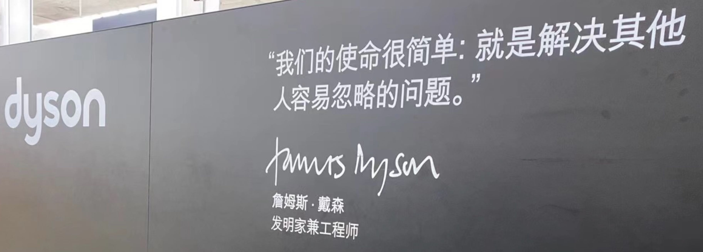
《晚明》- 天命
文明不是书本，文明是代代相传的薪火，是潜移默化的自尊自信，是辉煌的艺术和文学，是汉武横扫大漠的雄风，是崖山蹈海的壮烈，是留发不留头的血性，没有了这些骄傲的人，何谈文明，哪一个国家的统治者能说出留头不留发，能说出宁与洋人不与家奴，能说出量中华物力博与国欢心这样的屁话，只有殖民者可以，殖民统治下的国家如何能奢谈文明。几百年后，又有几人会去从一堆故纸堆中看文明的辉煌
《晚明》- 军情
会议结束后，军官们全部起立敬礼，按次序退出会议室，陈新揉揉额头，他没有打算去大凌河，按原来历史上的情况，后金是摆明的围城打援，有了去年掳掠的人口，后金已经真正具有了战略优势，大凌河之战证明后金已经能保持较长时间的动员状态，其正在由兵民一体向职业军队转化。
他在辽西只认识孙承宗，与祖大寿这样的派系还关系十分恶劣，更重要的是关宁军大多是转进大师，自己跟他们一起去远征，等于和两个敌人打仗，建奴反而以逸待劳，任谁也不愿意去。
当然陈新不会告诉那些军官自己不愿去大凌河，战争为政治服务，但军人不能去热衷政治，所以他很多时候是选择性的讲，皇太极建立乌真超哈的目的之一是牵制满八旗，这类政治目的他就不会跟军官分析，以免他们想得太多，失去文登营一直保持着的质朴。
https://weibo.com/1959830294/NCk3tDCbJ
这给我们的启发是：要宣传，不能只讲文旅宣传口想出来的东西，要发挥大V的智慧，讲大V自己生活化更互动的东西。 我们外宣也一样，总是急吼吼在宣传片里放一些太极拳、窗花、剪纸可能是不行的。 我觉得把《守护解放西》翻译出去效果都更好，那个是真实生活。 结果去年火到国外的是科目三。
总之一定要贴近生活。 要把宣传口放低，把人真实的生活细节抬高，建立大V和粉丝的连接感。
这个反过来从大V的角度也成立的。 我之前也说过，很多大V就无脑发通稿，这是没办法接到贵广告的。 这是在伤自己的商业价值。 如果我是正能量，我一定会拒绝发带通稿的海城高跷那条，而深耕我去滑雪的内容。 再有甲方看到我，就会按照滑雪那条的数据给我报价，而不是按海城高跷那条给我报价。 一定要爱惜自己的内容。
最后，我认为至少可以为正能量大V量身定制他们适合的行程。 他们正向建构能力偏弱，但骂侵略者总是在线的。 我是组织方，我一定会带他们参观九一八历史博物馆，就在沈阳。 八年抗战，改成了十四年抗战，肯定了东北人民抗战历史。 就是从沈阳九一八开始计算的。
哈尔滨这次热度上来了，也有很多游客去访问了731的罪证陈列馆。 这是很多东北人小时候会学到的知识，但是是外地人都不太了解的历史。 十四年里东北大地几乎处处都是苦难。
我家乡辽宁本溪，煤铁之乡，伪满洲国时期爆发过规模最大的矿难。 在本溪湖煤矿，发生瓦斯爆炸，日本矿主怕煤烧了，封死了矿井，导致一千多人死亡，里面的日本人也死在井下。 （这个故事小时候看只是愤慨，长大后有了更深的思考：不把敌人当人看的人，往往也不把同胞当人看。这也是我不太喜欢鼓动民粹的原因。）
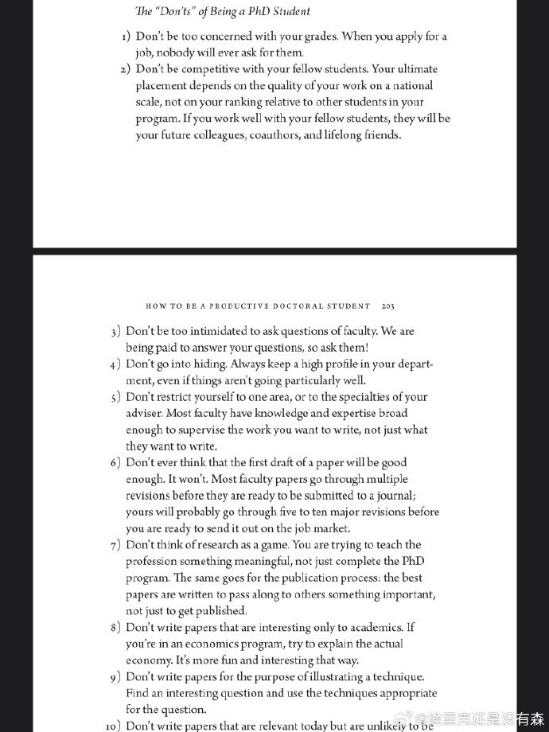
https://weibo.com/1577826897/NlP6C2Dis
恒大内部给高管标注的住宿细节，震了不少人。那套信息以前流出来过，当初也没火。其实房地产公司基本上在这方面，都是赶超比拼，不遑多让。
来看看万达的。这是当年高群耀空降万达时的亲身经历，可见一斑。
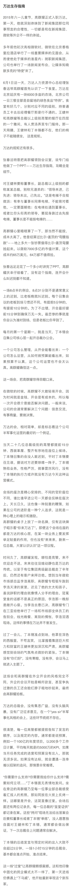
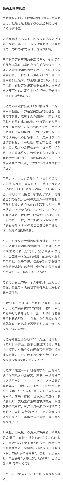
"Jack of all trades, master of none" 是一个常见的英语俚语，意思是指某人多才多艺，但没有特别突出的专长或者技能。这个短语经常用来形容那些能够应付多种各样的任务，但是没有在某一个领域或者技能上达到高超水平的人。
四大名著买了合订本是一种什么体验？
https://weibo.com/7276811751/Nee9d1o64
https://weibo.com/2048838462/N7bBxpf2B?pagetype=profilefeed
一个服务运行起来依赖许多假设：当前目录，安装了了哪些软件，系统上存在了哪些文件。这些都很难用语言来描述清楚，而且假设通常也会被打破。这个时候如果有了docker的话，所有的假设都被物化下来，对于开发和运维都是好事。
https://weibo.com/1497035431/N3BfydeBR @梁博
高中三年吃了大苦的同学，我有几句话说，考完以后，无论结果如何，猛玩3个月，千万别打电脑游戏，其他随便玩。然后到了大学，认真思考梁博的这几句话。1)苦难是最好的大学，即便考上贵清，也有两门不及格退学的。认真对待学习，调用一切资源，做自己感兴趣的事情，大学都很容易混毕业，但一定要找到自己感兴趣的东西，猛吃苦，搞成周围人中的第一，你看马云就当了杭州市学生会主席，组织活动方面的第一，也是第一。轻松对待看上去不公平的待遇，努力进步。 2)切勿蛮干，珍惜时间。很多大学生学习方式很傻，走了很多弯路，多学习优秀同学的学习方法，考雅思，考研，都有特定的技巧，迎合这些技巧可以少走很多弯路。3)普人就别谈朋友了，牛人可以抓紧谈一个，不展开。
https://liuyandong.com/archives/9696
中国的皇帝只干两件事情
第一：找一群混蛋用武力控制住百姓。
第二：从百姓手中抢钱来给这群混蛋发钱。
当搜刮不到足够的钱养急剧膨胀的混蛋群体之后，破产，换下一个皇帝。毕竟新换的皇帝，手的混蛋没那么多，还能养活的过来。循环3000年。
其它的事情，皇帝只是顺便做做而已。
我在江南看到最美的对联是苏州网师园的对联：风风雨雨寒寒暖暖处处寻寻觅觅，莺莺燕燕花花叶叶卿卿暮暮朝朝。——《蒋勋细说红楼梦》
许多人这一辈子是 莫名其妙地来 糊里糊涂地走 - 傅佩荣《哲学与人生》
许多大陆朋友，不来台湾，终生遗憾，来了台湾，遗憾终生 - 傅佩荣《哲学与人生》
孰能浊以静之徐清，孰能安以动之徐生 - 《道德经》
为什么要消灭中产阶级-江南愤青
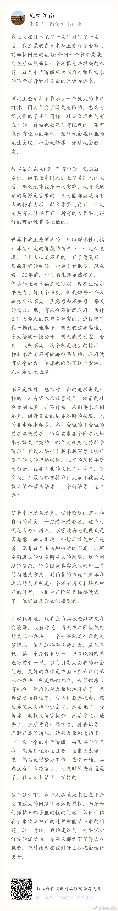
我对投资的理解-江南愤青
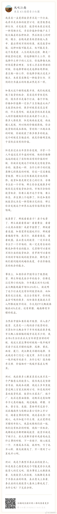
当心社会矛盾带来的暴力 - 江南愤青
刚发的那段话，一堆人来问我说:江南，你每天在微博朋友圈里骂人，是不是在线下也这么骂人么？！我说，怎么会，我又不是傻逼，线下骂人不被打死才怪。我线下特别温和低调，还很腼腆，不打架，不骂人，不喝酒，不抽烟。绝对社会主义四好青年
我记得我以前写过一个朋友圈，我说，在线下，跟上等人说话，完全可以直接，刻薄，不必要绕弯。因为大家都有承受能力，也有辨别能力。越直接，效率越高，生意能做就做。做不了。还能做个朋友。跟中等人说话，这类人一般外表自信，但是内心往往自卑，你说话得尽量委婉，不能太直接，也不能说的太透彻，要留有余地，不然他们接受不了，还会说你傻逼。跟下等人，这个则一定得客气，越客气越好，让他们得到满足感和尊重，让他们舒服，顺心。千万别去对他们太苛刻。这类群体往往承受很大的社会压力，生活压力。本身就处于边缘地带，很难得到应有的尊重和善待，这个时候，你如果稍微对他们客气尊重，往往他们就会死心塌地对你好。同样的道理，如果你稍微对他们不好，得到的结果也会很不好，她们往往生活状态让他们很容易没底线，做出过激反应，无论什么时候都别跟他们较真。最近有个电竞玩家坐滴滴车被砍，有个女孩子跟司机吵架被杀，有人骂服务员被泼开水。都是典型案例。何必跟他们较真呢？别为难他们。给他们多点钱，态度客气点，不但什么事情都解决了，你还收获了一个人的好。
这里面很多人不喜欢上，中，下等人区分，说我有浓厚的阶层优越感，我靠，我觉得这些人真他妈的太矫情，如同最近看到很多人在控诉社会不公，阶层固化一样，这个社会何时有过公平？阶层何时不曾固化？过于强调公平本身就是个伪命题。至于如何区分上，中，下等人，很简单的。你跟他交流，如果言语之间，一句话都说不得他不好，一说他不好就对你暴怒跳起，喜形于色，基本上可以判定为中等人，如果还有身体攻击性基本可以判定为下等人。哪怕他们再有钱，其实还是下等人，因为这种性格财富也未必能持续，如果你指出他问题，他不但没有不高兴，还欣然接受，基本上都为上等人。哪怕在穷，但是保持这种性格，我估计也不会落魄太久。时间会让他们跑出来。有钱很大程度只是一个人所有过去沉淀所反映的结果，而不是原因。
一些投资想法和个人建议 - 江南愤青
如果一个行业需要学习才能赚钱，就意味着充分竞争，而我必然没有这个能力，所以我一定离开。只有不用学习就能赚钱的行业才值得我留着。换句话就是说，傻逼都能赚钱了，我就能赚钱了。如果只有聪明人才能赚钱，那我一定赚不到钱。
太多的人认为在一个行业时间很久就能变成专家，我从来不觉得。天赋决定很多东西，越早进入的人不一定能成为行业专家，最多就是资历牛逼点而已。
你们要研究透什么叫做赔率什么叫做概率，基本上这辈子赚点小钱肯定没有太大问题，去参与那些大赔率的概率事件，基本上都能赚到钱，还能赚到不错的钱。
解决信息不对称额问题太简单了，你们就跟我一起混嘛！我每天在星球里面讲那么多不靠谱的事儿不都是信息嘛，一个人靠自己是不可能看遍全世界的，但是一个人可以关注别人看遍全世界。一个人靠自己很难穿越牛熊，但是投资别人就可以。
你每天这也不愿意付费，那也不愿意付费，这个人不想聊那个人不想聊，你能认识世界就见鬼了。说白了，我为什么要跟你们聊，因为我也想通过你们认识到这个世界上傻逼们是怎么想问题的嘛。
我喜欢稳住下限，博上限的生意。不喜欢下限守不住的任何事情。因为我上有老下有小，一堆人要负责。
一个人不可能通过学习来克服恐惧，只能通过小钱试错。
我们要做的是利用狂热，而不是自己狂热。我们要让别人相信这个是真的，而不是我们自己相信是真的。
对一个事物越理解，越容易被它绑架，然后就停留在这个时代不肯离去。
我们赌高概率的高赔率，不赌小概率的高赔率。你们知道小概率的高赔率的典型是什么吗？是彩票。小概率的低赔率是什么吗？是股票。股票实践证明，只有不到一成的人能赚钱，证明概率很低，然后股票赚钱的幅度基本在一倍以内，说明赔率低。股票只有一个时候是高赔率的，就是牛市来的时候，特定的时间点。
当心社会矛盾带来的暴力 - 江南愤青
刚发的那段话，一堆人来问我说:江南，你每天在微博朋友圈里骂人，是不是在线下也这么骂人么？！我说，怎么会，我又不是傻逼，线下骂人不被打死才怪。我线下特别温和低调，还很腼腆，不打架，不骂人，不喝酒，不抽烟。绝对社会主义四好青年
我记得我以前写过一个朋友圈，我说，在线下，跟上等人说话，完全可以直接，刻薄，不必要绕弯。因为大家都有承受能力，也有辨别能力。越直接，效率越高，生意能做就做。做不了。还能做个朋友。跟中等人说话，这类人一般外表自信，但是内心往往自卑，你说话得尽量委婉，不能太直接，也不能说的太透彻，要留有余地，不然他们接受不了，还会说你傻逼。跟下等人，这个则一定得客气，越客气越好，让他们得到满足感和尊重，让他们舒服，顺心。千万别去对他们太苛刻。这类群体往往承受很大的社会压力，生活压力。本身就处于边缘地带，很难得到应有的尊重和善待，这个时候，你如果稍微对他们客气尊重，往往他们就会死心塌地对你好。同样的道理，如果你稍微对他们不好，得到的结果也会很不好，她们往往生活状态让他们很容易没底线，做出过激反应，无论什么时候都别跟他们较真。最近有个电竞玩家坐滴滴车被砍，有个女孩子跟司机吵架被杀，有人骂服务员被泼开水。都是典型案例。何必跟他们较真呢？别为难他们。给他们多点钱，态度客气点，不但什么事情都解决了，你还收获了一个人的好。
这里面很多人不喜欢上，中，下等人区分，说我有浓厚的阶层优越感，我靠，我觉得这些人真他妈的太矫情，如同最近看到很多人在控诉社会不公，阶层固化一样，这个社会何时有过公平？阶层何时不曾固化？过于强调公平本身就是个伪命题。至于如何区分上，中，下等人，很简单的。你跟他交流，如果言语之间，一句话都说不得他不好，一说他不好就对你暴怒跳起，喜形于色，基本上可以判定为中等人，如果还有身体攻击性基本可以判定为下等人。哪怕他们再有钱，其实还是下等人，因为这种性格财富也未必能持续，如果你指出他问题，他不但没有不高兴，还欣然接受，基本上都为上等人。哪怕在穷，但是保持这种性格，我估计也不会落魄太久。时间会让他们跑出来。有钱很大程度只是一个人所有过去沉淀所反映的结果，而不是原因。
是否要承受委屈 - 风吹江南
纵然如我这样个性很强，虽不敢说才华横溢，但是也有些许能力的人能走到今天，又何尝不是受委屈受出来的，我们也是做了极多，我们不愿意做不情愿做，却不得不做的事情，才有今天的。谁的人生不如此？习大大、刘源的一些回忆录，你们去看看，纵使他们，也都是受尽人情人暖，走到今天，凭什么你不能受丝毫委屈，什么都要顺你心意？我一直说人的情商一定是委屈撑大的，一个不愿意受委屈的人凭什么别人要对你好，你又不是富二代，也不是官二代，凭啥别人得对你好？
所以，要把问题想明白了，人的一辈子既然要受委屈，那就让委屈受的有价值，逼迫自己尽快成长，仔细想想，既然委屈一定要受，事情一定要去做的，那就去做好它，反正要陪人喝酒，干脆就喝个天翻地覆，何必扭扭捏捏，反正要接待客人，那就接待个爽爽快快，何必心不甘情不愿，摆脸色给人看，反正要加班，就多快好省任劳任怨的去做好，这个世界很多事情你要么不做，要做就做好它，最傻逼的就是事情也做了，还什么都没得到，要充分利用好每一件你心不甘情不愿的事情，折腾出更多的未来的机会来，才对得起委屈。他可以让你更强大，更受人喜欢，这个世界，没有人愿意平白无故给别人委屈受，你忍下他，做好它，学到东西，总归是你自己的，别人也会感激你，而你毫不用心，敷衍了事，多生事端，最终你就一辈子受这个委屈。
世间的事情，大抵如此，情商高一定比智商高要牛逼，同等能力之下，最终还是比拼情商，谁都喜欢跟一个包容，多受委屈的人在一起，而不愿意跟一个一点亏都不吃的人在一起，所以前者机会越来越多，后者机会越来越少，前者越来越进步，主动权越来越大，因为不可替代性越来越强，后者就一直在基层受着委屈，因为永远不可能掌握主动权。
用心和不用心的区别就是你能把受过的伤给收起来，继续前行，它是最好的武器，他帮助你，不断进步，不断积累经验，一个不用心的人，就是永远受伤的人，因为他犯过的错误还会再犯。一辈子在犯错误。再过自己不喜欢过的生活。
人的一生，精力总归有限，你不可能事事躬亲，也不可能对一生里面碰到的人都很好，都对人很好，本质就是对谁都不好，我感觉这个世界人和人最大的区别往往体现在，时间和精力的分配上，你把时间浪费在垃圾身上，那么不可避免你一定也是垃圾，这个一定是铁律，所以尽可能把时间精力都分配在那些用心和愿意受委屈的人身上，一个人愿意用心替你想问题，愿意在你身上承受委屈，那其实本质就是他在投资你，他在用他的时间，精力在投资，成本也很高。这些人值得你珍惜，如果你不珍惜呢，那么反过来我会劝年轻人赶紧抛弃你，因为你不值得投资。
我跟很多年轻人说，人生起步一无所有的时候，选择跟随的人是最重要的事情，一定要远离人渣型领导，因为前面说过年轻人选择的机会很少，很多人压根没得选，所以，一定要珍惜一切能被选择的机会，在能选择的时候，必须想明白什么人值得跟随。因为，你被人选，反过来说，你们也要选人，跟着垃圾的人也一定会是垃圾，如何判别什么人值得跟还是不跟，就看你受委屈了之后，你用心了之后，人家有没有回报你，在什么场合在情境下，做了补偿没有，我见过很多很优秀的年轻人，跟着别人四五年，每天任劳任怨，结果从没有获得什么好处，出了事情，还被第一时间推出去承担责任，这种人赶紧离开。投资往往是双向的，不值得跟随的人，立马抛弃，一点委屈也不要去受，值得投资的人，受尽委屈也不要说话，因为他们总会在合适的时候回抱你的委屈。
刘延栋同学对关系的分析
在这里，多说几句。我不知道是不是微软可以以下犯上，并且不用考虑后果，还是国外有这种文化，我不是外国人，我不懂他们的文化。我来谈谈中国吧，毕竟在中国人，谈谈自己还是可以的。还是谈历史，我们都知道，李世民和他的大臣魏征，是千古名君和诤臣的典范，魏征活着的时候，总是批评皇帝李世民，李世民也忍了下来。并且还给魏征高官厚禄。历史课本上没说的是，魏征死了以后，魏征的墓碑，被李世民砸了。朱元璋和刘伯温，打天下的时候，刘伯温也是多次批评朱元璋，等天下是朱元璋的以后，刘伯温在哪里呢？刘伯温作为朱元璋手下的第一号谋臣，朱元璋只封了他一个诚意伯，这个爵位是伯爵，拿的俸禄也是伯爵中最第档次的，一年只有二百四十石，而且后来，还在朱元璋的授意下，让胡惟庸给毒死了。我们都下过象棋吧，我们最珍惜的棋子是什么？当然是车啦，因为车的威力最大。但是，我们仔细想一想，我们对车这个棋子有感情么？没有感情了，当需要的时候，车也是要送死的，要不怎么会有丢车保帅这个成语呢？
世间所有的关系，无外乎两个词，一个是需要，一个是有用。你需要，我有用，自然是一段美好的关系。你不需要，我的有用就是没用。你需要一个美工，我是一个优秀的安全人员，有什么用呢？说有用，韩信有用么？当然有用了，以我浅薄的见识，从有文字记载到今天2016年，淮阴侯韩信的军事才能，如果有中国军事才能排行榜的话，进入前十一点问题都没有，其实我觉得，可能得排前三名可能有点争议，毕竟白起，吴起这两位老家人也猛的不行。不过，韩信击败的项羽，项羽大家都知道很猛，被韩信干掉了。那韩信怎么死的呢？传闻说是用竹竿插死的，具体怎么死的，有疑问，但是肯定是被杀死的，这个没问题。有用和没用，是根据情况，不断的变化的。彼时的有用，此时不见得那么有用，甚至变成了没什么用。干活的武将，结局都差不多。吴起韩信两人死于非命，白起李牧两位被迫自杀，还有老百姓心中的武圣人岳飞，结局大家都知道了… 甚至，岳飞连武圣人都算不上，官方不肯给这个任命。
世间的关系，无非就是一个需要，一个有用。为什么韩信会被吊起来，用竹竿一根一根的插死呢？我并不知道原因，因为历史资料上并没有记载，但是，我敢肯定的是，韩信肯定没有抢月饼，因为，月饼是明朝才开始有的。也许，淮阴侯韩信，在那个时候，已经没有什么用了吧。
刘延栋同学对CISC和RISC的分析
每个处理器支持的指令集是不同的，Intel在设计的时候，尽量多的支持各种不同的指令，杂七杂八的都支持。但是，这么做是有缺点的，第一，制造起来很困难，各种逻辑电路都很复杂，但是Intel制造工艺在CPU界是最先进的，这一个缺点Intel解决的挺好，但是，这么高的集成度，会造成非常大的功耗，这一个，Intel也束手无策，所以，在手机时代，他的atom芯片就不好使了；第二，因为复杂指令集的指令数相当多，因此每个指令执行的时间长短不一，比如有的长度是5，有的长度是10，结果会导致不必要的等待。
正因为这些缺点，所以才有了精简指令集的解决方法。精简指令集的主要思路是：第一，只保留很少的精简指令，复杂的指令分解成精简的指令。第二，所有的指令长度都是相同的，每次执行的时间都相同，不用等待。
但是可惜就可惜在这个地方，提出精简指令集的时候，Intel早就使用复杂指令集开始造CPU了，理论好是好，时间不凑巧。因此Intel只好硬着头皮继续坚守复杂指令集。因为只要不是技术控，就是那种觉得技术好就能决定一切的人，肯定会做出和Intel一样的决定。首先，Intel在市场上已经取得了优势，而且这个优势是基于复杂指令集取得的，如果现在放弃复杂指令集，无异于自杀。其次，做精简指令集的厂商多如牛毛，做复杂指令集的当时只有Intel，AMD那时候还没有呢。虽然说Intel坚守复杂指令集，看起来是在科学发展的道路上逆行，有点不遵守科学发展观的意思。但是，先活着肯定比死了好，到时候复杂指令集玩不动了再说，可以边坚守复杂指令集，边研发精简指令集，两手抓，两手都要硬，摸着石头过河。后来Intel确实推出过精简指令集的CPU，那款CPU的名字叫80860，结果根本没人买。Intel这才放心了，一颗石头落了地。
因为是看别人的历史，当事后诸葛亮总是比较爽的事儿，我们可以来复盘一下。当年Intel自己一个人坚守复杂指令集。当时支持精简指令的五大金刚，太阳公司，SGI公司，IBM公司，DEC公司还有惠普公司，这都是强于Intel公司。如果单纯从兵力对比上看，简直就是一只小猪战群狼。哪一个公司都有机会把Intel弄的死死的，但是，后来我们也知道了，这五个公司被Intel打的满地找牙。为啥呢？因为各自为战啊！国内国外一个德行。这种事情，根本就不可能团结的。万众一心都是赢了以后才能扯的虎皮。
刘延栋同学对成年人的建议
再讲一件事情，有几个热心听众在微信留言问我，网站后台怎么做，编程怎么学等等问题，其实，我真不敢提意见。因为我是个35岁的老程序员，也没作出让人震惊的软件。我可以稍微透露一下我的背景，不是不告诉大家网站后台怎么做，而是我实在是能力达不到指导大家做网站后台。我最主要的工作经历是写路由器软件，而且这种路由器还是给运营商使用的，普通大众根本没机会用到一个冰箱那么大的路由器机柜。这也算是我为互联网做的一点贡献，我写过一些互联网协议的实现，比如MPLS的实现，BGP协议的实现，但是并没有能力制定这些协议，能制定互联网协议的人肯定没空来这里讲故事的，就是读RFC，然后根据RFC的规则，实现了这些协议，让路由器支持这些协议。所以，我大部分时间就是写C语言，少部分时间写Python，Java以及手机软件。因为我非常喜欢和编程有关的东西。实在是不能给大家提具体的建议，尤其是职业规划，实在是有点抱歉 :)
另外多说几句，这个职业规划啊，问我真没用，我也不敢提任何建议给大家，这事关重大。而且，大家都是成年人了，我认为超过16岁，就不应该在重大的事情上参考别人的意见。我说的重大的事情，大家自己衡量，比如职业规划啊，结婚啊，我认为是重大的事情。因为当你向别人询问的时候，被询问的人如果做不到一些事情，他们就会语重心长的告诉你，这事儿不能做。其实不见得，就是他做不到而已。比如莱特兄弟造飞机，要是他哥俩到处问，100%的人告诉他，这玩意肯定不能飞！别让别人告诉你行或者不行，你自己试试看，更别说让我这么一个35岁了也没写出好软件的老程序员了。
另外，我不是大牛，连小牛也算不上，顶多算头猪吧。如果你有梦想呢，就去做，在中国这个社会，光做还不行，你还得捍卫你的梦想，像捍卫你的亲人你的家庭一样捍卫你的梦想。国人喜欢冷嘲热讽，你的梦想就像你自己的房子，冷嘲热讽就像是城管，你如果不捍卫它，就会被城管强拆了！别让那些一事无成的老家伙告诉你一些狗屁道理。如果你有理想，就去努力的实现他。就这样…
如果想看大牛，翻个墙，去twitter注册个账号，上面真的大牛很多，比如卡马克，罗梅罗这些，或者去Quora上，直接点名问问题也行，比如维基百科的创始人，都非常的热心，而且不骂人，热心回答，我就问过一个问题… 天朝很多大牛，如果只说脾气的话，确实算大牛，脾气很牛，张口就骂，跟得了疯牛病似的…
史记和纪传体
《史记》是一部贯穿古今的通史，从传说中的黄帝开始，一直写到汉武帝元狩元年（前122年），叙述了我国三千年左右的历史。据司马迁说，全书有本纪十二篇，表十篇，书八篇，世家三十篇，列传七十篇，共一百三十篇。
“本纪”实际上就是帝王的传记，因为帝王是统理国家大事的最高的首脑，为他们作纪传而名之曰“本纪“，正所以显示天下本统之所在，使官民行事都有一定的纲纪的缘故。
同时，也是全书的总纲，是用编年体的方法记事的。在“本纪”的写作中，司马迁采取了详今略远的办法，时代愈远愈略，愈近愈详。“本纪”托始黄帝，是因为黄帝是中华民族的始祖，又是“正名百物”的祖师。将项羽列入“本纪”，一是秦汉间几年“政由羽出”，一是推崇其人格。?
“表”，所以列记事件，使之纲举而目张，以简御繁，一目了然，便于观览、检索。
“书”，是记载历代朝章国典，以明古今制度沿革的专章，非是熟悉掌故的史家，是无法撰写成书的。班固《汉书》改称“志”，成为通例。“书”的修撰，为研究各种专门史提供了丰富的资料。
“世家”是记载诸侯王国之事的。这因诸侯开国承家，子孙世袭，也就给了他们的传记叫做世家。从西周的大封建开始，发展到春秋、战国，各诸侯国先后称霸称雄，盛极一时，用“世家”体裁记述这一情况，是非常妥当的。司马迁把孔子和陈涉也列入“世家”，是一种例外。孔子虽非王侯，但却是传承三代文化的宗主，更何况汉武帝时儒学独尊，孔子是儒学的创始人，将之列入“世家”也反映了思想领域的现实情况。至于陈涉，不但是首先起义亡秦的领导者，且是三代以来以平民起兵而反残暴统治的第一人，而亡秦的侯王又多是他建置的。司马迁将之列入“世家”，把他的功业和汤放桀，武王伐纣，孔子作《春秋》相比，将他写成为震撼暴秦帝国统治、叱咤风云的伟大历史英雄，反映了作者进步的历史观。
“列传”是记载帝王、诸侯以外的各种历史人物的。有单传，有合传，有类传。单传是一人一传，如《商君列传》、《李斯列传》等。合传是记二人以上的，如《管晏列传》、《老庄申韩列传》等。类传是以类相从，把同一类人物的活动，归到一个传内，如《儒林列传》、《循吏列传》、《刺客列传》等。司马迁把当时我国四周少数民族的历史情况，也用类传的形式记载下来，如《匈奴列传》、《朝鲜列传》、《大宛列传》等，这就为研究我国古代少数民族的历史，提供了重要的史料来源。
七十篇列传的最后一篇，是《太史公自序》，把自序摆在全书的最后，这是古代学者著书的惯例。
总之，司马迁写作《史记》以“本纪”叙帝王，以“世家”载诸侯，以“列传”记人物，以“书”述典章制度，以“表”排列大事，网罗古今，包括百代，打破了以年月为起迄如《春秋》的编年史、以地域划分如《国语》的国别史的局限，创立了贯穿古今和社会生活各个方面的通史先例，成为正史的典范。
乔治·索罗斯经典语录
- 市场总是错的。
- 重要的不是你的判断是错还是对，而是在你正确的时候要最大限度地发挥出你的力量来！
- 我生来一贫如洗。但决不能死时仍旧贫困潦倒。“——挂在办公室的墙壁上。
- 如果你经营状况欠佳，那么，第一步你要减少投入，但不要收回资金。当你重新投入的时候，一开始投入数量要小。
- 不知道未来会发生什么并不可怕，可怕的是不知道如果发生什么就该如何应对。
- 要想获得成功，必须要有充足的自由时间。
- 在股票市场上，寻求别人还没有意识到的突变。
- 股市通常是不可信赖的，因而，如果在华尔街地区你跟曾别人赶时髦，那么，你的股票经营注定是十分惨淡的。
- 身在市场，你就得准备忍受痛苦。
- 如果你的投资运行良好，那么，跟着感觉走，并且把你所有的资产投入进去。
- 人们认为我不会出错，这完全是一种误解。我坦率他说，对任何事情，我和其他人犯同样多的错误。不过，我的超人之处在于我能认识自己的错误。这便是成功的秘密。我的洞察力关键是在于，认识到了人类思想内在的错误。
- 我不愿意花很多时间和股票市场的人们在一起，我觉得他们讨厌，和知识分子在一起比和商人在一起感觉要舒服得多。
- 很多年我都拒绝把它（投资）作为我的职业。它是达到目的的手段。现在，我很乐意去接受——事实上，这就是我一辈子的事业。
- 我已经和公司打成一片。它以我为生，我也和它生活在一起，日夜形影不离……它是我的情人。我害怕失去它也担心做失败，并尽量避免失误。这是一种悲惨的生活。
- 我完全投入这一工作，但这确实是非常痛苦的经历。一方面，无论什么时候我在市场中如果作出了错误决策，我得忍受非常巨大的精神折磨。另一方面，我确实不愿意为了成功而把赚钱作为必需的手段。为了找出支配我进行金融决策的规则，我否认我已经成功。
- 我认为我不是一名商人，我投资别人经营的商业，因此我是一位名符其实的评论家，在某种程度上你们可称我是世界上薪水最高的评论家。
- 我必须改变人们对我的看法，因为我不想仅仅是一名富翁，我有东西要说，我想让政府听到我的声音。
- 这要区分两个方面。在金融运作方面，说不上有道德还是无道德，这只是一种操作。金融市场是不属于道德范畴的，在这里道德根本不存在，因为它有自己的游戏规则。我是金融市场的参与者，我会按照自已定的规则来玩这个游戏，我不会违反这些规则，所以我不觉得内疚或需要负责任。对于亚洲金融风暴，即使我不炒作，它照样会发生。我并不觉得炒外币、投机有什么不道德。另一方面，我很遵守运作规则。作为一个有道德和关心它们的人，我希望确保这些规则是有利于建立一个良好社会的，所以我主张改变某些规则。即使改进和改良影响到我自己的利益，我也会支持它，因为需要改良的这个规则也许正是事件发生的原因。
- 金融世界是动荡的、混乱的，无序可循，只有辨明事理，才能无往不利。如果把金融市场的一举一动当作是某个数学公式中的一部分来把握，是不会奏效的。数学不能控制金融市场，而心理因素才是控制市场的关键。更确切地说，只有掌握住群众的本能才能控制市场，即必须了解群众将在何时、以何种方式聚在某一种股票、货币或商品周围，投资者才有成功的可能。
- 炒作就像动物世界的森林法则，专门攻击弱者，这种做法往往能够百发百中。
- 我很高兴拥有这种身份，因为它可以使我能得到我想要的东西。作为一名市场运作者，我有理由回避这种身份，因为它是有害的；但我不再是市场运作者了。我的声音在政治问题上也被听到了，正是这一点，我发现它很有用。
- 我的基金已变得如此庞大，以致于如果我不花些钱的话，它就没什么意义了。而且似乎挣钱比花钱还容易点，我看起来往挣钱方面而不是在作出正确的用钱决定方面更具才华。
- 柏荣，你的问题就在于：你每天都去上班，并且你认为，既然我来上班了，就应该做点事情。我并不是每天去上班。我只有感觉到必要的时候才去上班……并且这一天我真的要做一些事情。而你去上班并且每天都做一些事情，这样你就意识不到有什么特别的一天。
- 经济历史是由一幕幕的插曲构成他们都奠基于谬误与谎言，而不是真理，这是赚大钱的途径，我们仅需要辨别前提为错误的趋势，顺势操作，并在他被拆穿以前提早脱身。
- 经济史是一部基于假相和谎言的连续剧，经济史的演绎从不基于真实的剧本，但它铺平了累积巨额财富的道路。做法就是认清其假相，投入其中，在假相被公众认识之前退出游戏。
吉姆·罗杰斯在《给女儿的礼物》里写的给女儿的16条建议
1、永远买高质量的商品，它们不但耐用，而且残存价值高。
2、去采购食品之前，记得要吃饱。如果你饿着肚子，将会买回一大堆超出所需的食物。
3、任何贴着“必看”、“必读”、“必须试试”标签的东西，都要避开，尤其是流行的，更要退避三舍。保持良好的教养，无论身处何方，无论对面是谁。这可以把你与他人永久区分开来。在任何社会，都要入乡问俗
4、永远不要问别人赚多少钱以及某样东西值多少钱。不要告诉别人你的东西多少钱买的。不要跟人谈论你赚多少钱以及有多少身家。这是咱们家族根深蒂固的传统，从我的爷爷那辈开始，大家就遵循，因为谈论这些事不但扎眼，而且缺乏教养，至少对我们家而言是这样。证明自己要靠行为，而不是谈钱。如今很多人喜欢谈钱，但我不希望你们这样。
5、如果你们借钱，一定要提前还，至少要按时还。好的信用至关重要，坏的信用记录会困扰你许多年。
6、等你们长大了，会跟男孩们打交道。我希望永远给你们建议和警告。与他们交往的基本原则是：记住他们对你们的需求远远大于你们对他们的需求。当他们狂热追你们的时候，他们会许下千万条诺言。实话告诉你们，这种漂亮话我能说得比他们好。直接忽略他们，对自己诚实。当听到荒谬的许诺、奉承、夸奖时，运用你们的常识。不要追随男孩们转学、迁徙、换工作。让他们来追随你。
7、等你们长大了，要知道你们单独去酒吧几乎没什么好处。吧台的少爷们知道的、经历的比你们多得多，他们会从你们这里讨便宜。
8、要警惕：许多看上去跟你爸爸或爷爷一样年纪的人，并不会把你们当成他的女儿或孙女。
9、在你们28岁之前不要结婚，只有到了这个年纪，你们才会对自身、对世界有所了解。
10、非常重要的一点：要分清好工作与生活的边界。下班后不要跟同事们去吃吃喝喝，你会发现，当老板的从来不会这么干，所以他们才是老板。永远没必要跟老板去喝酒，尤其是两人单独。永远不要在商务午餐时饮酒。最后，还有很重要的一点，避免发生办公室恋情。这件事总是以个人和职业的悲剧而结束。
11、在开长途车或在公共场合露面之前，记得要先去洗手间。
12、学会心算，虽然到处都有计算器，但心算会让你对数字更敏感，从而发现别人视而不见的机会。心算能让你们受益终生。
13、照顾好自己，一个人如果身体不好、休息不好，则很难成功。你们知道妈妈经常给你们擦防晒霜，她是对的。
14、当面临压力和混乱时，记得要冷静。这能让你做出清醒决定，也能让别人注意到你们的冷静沉着。我经常头脑发热，现在常常后悔。
15、与人有约，一定要早到。你这样做，不但能让自己保持高效，还能给人以好印象，因为大多数人都迟到，还有人每次都迟到。
16、一旦你对自己有了清醒的认识和理解，记住你是谁，并且保持住。我有时还会迷失，感情用事，或者做自己不擅长的事。当回首往昔，我真想踢自己，让自己对自己诚实。例如，我投资的时候，有时会跟着感觉走。我经常后悔，自己没有坚守住自己最擅长的领地，无论是投资，还是做别的。
美苏争霸时期的米哈伊尔布林
1959年7月，在莫斯科举行的一个展览会上，苏联领导人赫鲁晓夫和美国副总统尼克松进行了一场著名的“厨房辩论”。当赫鲁晓夫给尼克松展示完苏联先进的武器之后，尼克松给赫鲁晓夫展示的是一间有着各种电器的美式别墅的厨房。两个人以自己的后代作为赌注，赫鲁晓夫说他们会生活在XX主义中，尼克松则认为他们会生活在XX主义中。
从那时开始，这个世界上的两个超级大国，就在各个方面都展开竞赛，你发一颗卫星，我就发射飞船，你载人上天，我就登月，为的就是证明自己才是世界的老大。
为了把自己已经全面“超越美国”这件事传播出去，苏联人找了一批专家，每天在那里给出各种数据。比如莫斯科的物价比美国便宜，苏联人的幸福感比美国人高出19.7%等等。骂一个人是王八蛋别人会不服，但如果你通过一系列的计算，算出这个人是王八蛋，别人多少还会蒙圈一下。这其中有一位叫做米哈伊尔·布林的专家，他的工作，就是专门计算苏联人的生活水平比美国人高得多。
米哈伊尔·布林，苏联犹太人，数学家，毕业于莫斯科国立大学，原本的理想是做一个天体物理学家，然而，由于他是犹太人，苏联的物理研究部门不可能让他进入，只好改行去做数学家。
“在我刚上大学的时候，我就被迫放弃了当宇航员的梦想。在苏联，尽管法律和官方上都声称并没有反犹太主义；但在现实中，苏联却将犹太人排斥在高层的专业人士外，犹太人也因此被物理学部门排斥……”米哈伊尔因此在报考大学时将其主修科目改为数学。尽管他每次都有A的优异成绩，但他说：“在研究所仍没有人特别注意我，只因为我是一位犹太人。”
这是在苏联，个人无法对抗体制，米哈伊尔·布林也认命了。他安心在计划委员会一遍一遍地计算着，苏联人民的生活水平比美国高出多少指数，美国终将完蛋等等，每当他看到自己的计算结果被报纸引用，还会感到一阵自豪。
但是一次出国访问，彻底动摇了他的信念。他去波兰参加了一次国际学术研讨会，在会上，他结识了来自美国、德国、法国、英国的专家，在与他们的交谈中，他发现，国外的数学家从来都不去做那样无聊的计算。
“我的研究成果在他们那里就是个怪物”，这是米哈伊尔·布林最大的震撼。
紧接着，他想到了即将到入学年龄的儿子，在苏联，儿子也将和他一样，即使成绩优异也不能从事自己喜欢的专业，最大的成就就是去计算一些无聊的数据。他不能让儿子从小接受这样的教育，长大干着这样的工作，于是，他下定决心，离开苏联，移民美国。
1979年5月，米哈伊尔·布林带着妻子和年仅6岁的儿子移民去了美国。。。
20年后，米哈伊尔的儿子谢尔盖·布林在美国和自己的博士同学创建了一家公司，公司的名字叫：谷歌。
中年危机的根源并不是衰老，而是可能性的丧失
身体机能的衰退当然是一个方面。但最大的挑战，还是可能性的丧失。衰老和死亡的过程，其实就是把可能变成现实，把悬念变成答案的过程。
在中年的时候，你会意识到，生命中的可能性正在一点点消失。年轻时一些想做没做成的事，可能永远也做不成了，一些想在一起而没在一起的人，可能再也不会在一起了。
你会焦虑于这种确定性，并苦苦思索，除了可见的衰老和死亡，自己的未来到底在哪里？
很多年轻人说，自己从小镇来到大城市，或者从稳定的工作中辞职，就是害怕过那种“一眼能看到未来”的生活。可是到了中年以后，很多人的生活就真的一眼看到了未来。
在中年的时候，我们很容易把这种可能性的贫乏带来的恐慌，误解为是因为衰老引起的。所以，对于变老这件事，有些人就可能变得非常抗拒。
一些男人开始健身、寻求婚外情，想重新体验青春的激情，来维持自己没老的错觉。女人则开始精心打扮自己，整容，害怕因为变老而失去魅力。也有一些人开始回忆当年，对年轻人指手画脚，开始变得俗气、势利、斤斤计较，把生命的成长寄托在钱财、名声这些可见的东西的积累上。
他们并不知道，中年期危机的解决方案，并不是追求这些外在的东西，而是内心的转变。
但是，也有一些人，人到中年以后，反而开始渐入佳境。他变得更成熟、更有经验，也更有创造力。一些人开始摆脱了“小我”的限制。他们的人生境界也因此开阔起来。
这种变化是怎么发生的呢？很重要的原因是，这些人到了中年，他们和世界、和他人的关系就发生了变化。别人既变得不重要了，也变得更重要了。变得不重要了，是我们不再那么在意别人的看法和评价，相应的，也不再那么在意世俗意义上的规则和成功，我们会更多遵循自己的内心来做决定。变得重要，是因为我们开始关心自我以外的他人，尤其是我们的下一代。我们开始从他人的成长中，获得新的可能性。
POW在现实社会中的意义 - 硅谷王川
技术和商业历史本质上也类似 proof-of-work 的区块链，常常会有不同的技术标准互相竞争，常常有分叉有冲突，最后就是 longest chain prevail, 最长的链胜出。一旦群体形成共识，要想翻盘，往回重写几个区块，成本极大，基本不可能。人们常犯的一个错误，是试图以一己之力，改变已经形成的标准，改变群体共识，和生态系统上的所有人作对，按照曹操老师当年隔江赋诗的话说就是，”以蝼蚁之力，欲憾泰山“。 如果发现自己挖的区块不在最长的链上，要果断放弃。
背离公司发展的各种指标 - 硅谷王川
1/ 哈佛教授 Clayton Christensen 在一次演讲中提到，很多公司被分析师的财务指标所驱动，而完全背离商业本质。
2/ 一个是 RONA (Return On Net Assets), 为了提高 rona, 在无法提高利润的基础上，就拼命把公司的职能外包出去，降低净资产数目 (Net Assets), 不管这是否符合长远利益。
3/ 另一个指标是 IRR ( Internal Rate of Return), 再无法提高回报的情况下，不断削减成本，只投那些短期可以马上见效的东西，这样因为时间短，可以把 IRR 做得很高， 但是公司并没有什么实质性创新。
4/ 这似乎也可以解释，为什么很多风投公司的 IRR 看上去很高，(因为都是挑一些还未真正退出的，虚高的，得到下一轮融资的项目来选择性地计算 IRR ) ， 但实际回报惨不忍睹。
5/ 所以基本上如果你人为定义一两个数字来衡量个体或者公司的成功，都会被他们在追逐短期数字指标走向极致的过程中，而忘记了原来的初心和事物的本质。
6/ 这似乎是数字驱动之下大多数群体行为的宿命。
历史经验是：即使管理层想革自己的命，想要采纳颠覆性的技术和相关市场；因为新技术市场的价值体系/衡量标准，和老的市场格格不入，很难在一个组织架构下共存，必须分拆成独立机构才更容易成功
人生各个阶段的烦恼来源图
儿童节了，送大家一张我在手机里存了很久的图，上面画的是人在各个年龄段的烦恼来源。我每隔一段时间都会翻出这张图来看，提醒自己：
① 悲观地看：人生的每个阶段都不容易，而且你面对的问题会越来越无可躲避，所以请紧张的活着，不断精进不能松懈。
② 乐观地看：每当你进入下个阶段再回看时，上个阶段的烦恼都根本不叫事。所以请快乐的活着，珍惜每段独一无二的岁月。
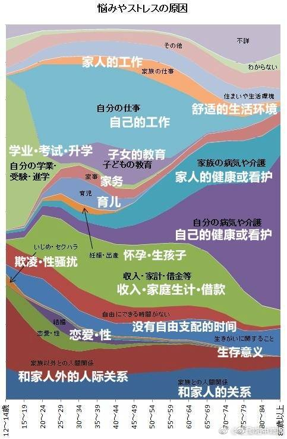
不要被技术视野所舒服
1/ 搞技术的人容易有一种错觉 （有时看上去像是傲慢），就是因为自己对底层技术细节非常清楚，那么自己对于技术的应用场景也会懂得比别人多。但这里的关键在于，你永远无法想象某个新技术对于你视野之外的别人能够产生的所有应用场景.
2/ 比如特斯拉的 autopilot 技术，普通人只是把它当作一个辅助自动驾驶技术。但是最近一对青年男女开着一辆 Model X, 启动 autopilot 模式，在里面嬉戏， 并把录像上传到国际知名视频网站“伯恩哈勃”上面， 从四月三十号到五月十一号期间获得接近八百万点击量。特斯拉 CEO 马斯克也评论到“使用 autopilot 的方式超乎我们的想象”.
3/ 万维网的出现， 最初来源于欧洲核子研究中心的临时工 Tim Berners Lee， 在八十年代末，把超文本 (Hypertext) 技术，和 TCP, DNS 技术综合起来，方便不同地方不同电脑系统的研究者迅速共享文件。这个技术后来引发 1993年第一个网络浏览器 Mosaic 的出现，还有后来基于此的各种电商应用，远超创始人的想象。
4/ 同样， 一个基于数学算法的，不可篡改的，运营十年饱受各种攻击而不倒的全球化账本，一开始是由一群程序员创立，因此很多人的思维模型还停留在小额支付的场景上， 其争论关心的焦点还停留在底层技术细节和自己理解的有限使用场景上。但当外面更多人加入此生态系统后，其潜在应用可能超越所有人想象。
通过分摊降低问题复杂性
1/ 当人们抱怨生活太复杂的时候，直接原因是亲自解决生活中某个问题要花太多时间。如果一个以前要花很多时间的问题，可以很快解决，就会感觉特别轻松，生活简单多了。
2/ 把自己生活简单化的最容易的方法， 就是把复杂的东西和很多人分摊， 这可以称作 complexity amortization. 当你要解决的问题有很大的市场，或者你的兴趣点和很多人类似，你就可以通过获取更多人的支持，来分摊攻克问题的成本。
3/ 反过来，定制化的服务比如装修，就是一个非常劳心劳力的活，中外都有不少夫妻甚至因为长期房屋装修的矛盾而离婚的案例。
4/ 机会在简单和复杂的边界之处，当一个以前是小众的复杂问题，变为一个更加大众化的问题时，率先解决这些大众痛点问题的人，有可能获得很大利益。
5/ 当你的工作方式可以同时获得很多人直接或者间接支持的时候，解决问题的效率大大提高。以 Linux 操作系统发展的经验来看，一个开放网络系统上因为有很多开放者同时在看，软件捉虫查错的时间是 O(1) 。而一个小规模封闭系统里查错的时间可能是 O(n) 甚至更高。 大规模开放网络系统内在的纠错和进化速度，远远超过一个小规模封闭系统。
6/ 有些人对于简单化的理解是“断舍离”， “有所不为有所为”；但更重要的让生活简单化的方法是“大规模开放和分摊”， 越开放，分摊基数越大，解决困难问题的时间和成本越低，生活会感觉越简单。类似的，在权力斗争中，高手一般尽量避免亲自赤膊上阵去斗，而是耐心等到时机成熟，借用大批支持者的力量轻松扳倒对手 （也是一种分摊）。
系统综合的均值，时间序列均值，可遍历性系统
1/ 系综的均值 ( ensemble average) 和 时间序列的均值 （ time average ） 是两个常常被混淆的概念。
2/ 系综均值可以理解为一百万人同时买彩票，一百万人的平均收益。时间序列的均值，可以理解为你去买一百万次彩票，你的平均收益。
3/ 但实际操作中，大部分人没有足够多的钱去买够一百万次彩票，然后可能玩几次就破产出局了。所以时间序列的实际均值，往往大大低于系综的均值。但大家总是以系综均值去激励自己的行为模式，承载远大于自己想象的风险。
4/ 只有极少数所谓的 ergodic system （遍历系统） 时间序列的均值会接近系综的均值。这种情况下，你只要做同样的事情足够长的时间，你的回报和很多人同时做一件事的均值是接近的。但大部分复杂系统是 non-ergodic 的， 别人的经历很难复制。
5/ 这就是为什么报纸媒体总是渲染某个人的巨大成功 (ensemble average) ，但我们自身经历往往是屡战屡败 (time average)， 而我们长期因此困惑不解，试图寻找他们成功的秘方， 但总是不得要领。
6/ 但如果你再仔细看，十年前的成功者，和十年后的成功者，大多不是同一群人。 十年前的成功者个体，如果再观察他们之后的 time average, 最后依然会慢慢回归平庸。
查理·芒格对于海军制度的观点
查理·芒格对于海军制度的观点，其实就是中国政府在管理官员时，正在践行的做法。
在一个官员主政的地方发生新冠肺炎案例了，无论什么原因，即便你那个地区管理应对得很好，是外来人员偶发性的传播，这个主政的官员都要担很大责任，甚至会下课。
一个地区发生煤矿、化工企业之类的安全事故，也是这样，不管主管的官员有没有责任，都要受处分。
查理·芒格原话：我喜欢海军的制度—— 不管你的船是因为什么原因搁浅的，反正你（船长）的生涯结束了。没有人对你的错误（原因）感兴趣。那就是海军的规则。
如果你是海军的船长，接连工作了24小时，需要去睡觉，所以在恶劣的环境中把船交给非常有能力的大副，而他把船弄搁浅了—— 这显然不是你的错—— 他们不会把你送到军事法庭，但你的海军生涯就结束了。
你们也许会说：“那太严厉了。法学院可不是这样的。那不是合法的诉讼程序。”嗯，海军的模式比法学院的模式好多了。海军的模式确实能够促使人们在环境恶劣的时候全神贯注—— 因为他们知道，如果出事绝对不会获得原谅。
拿破仑说他喜欢更幸运的将领——他不会支持败军之将。同样地，海军喜欢更幸运的船长。
不管你的船是因为什么原因搁浅的，反正你的生涯结束了。没有人对你的错误（原因）感兴趣。那就是海军的规则—— 从方方面面来说，这对所有人都好。
我喜欢那样的规则。我认为如果有几条这种不追究过错原因的规则，我们的文明社会将变得更好。但这种提议很容易在法学院引起争议：“那不是合理的诉讼程序，你没有真的追求正义。”
我赞成海军的规定，那就是在追求正义——追求让更少船只触礁的正义。考虑到这些规则带来的好处，我不会在乎有位船长受到不公平的对待。毕竟，那又不是把他送到军事法庭。他只需要另外找份工作而已，他从前缴纳的养老金依然归他所有，诸如此类的。所以那对他来说也不会是世界末日。
我喜欢这样的规则。可惜像我这样的人不多。
不要给自己不努力找借口
https://weibo.com/2199733231/Hnsg9cjnG
以我这么多年的观察，其实加班不加班或者工作/学习努力不努力更多是态度或者是人生观问题。“努力才能做得好”、“今天工作不努力、明天努力找工作”这种浅显的道理谁都明白。自己付出了多少大部分心里也都有数。但真做起来，给自己偷懒找的借口可就多了。
最常见的借口是以确定性阶段性目标代替难以量化的长期目标。比如以“都是博士，出去找工作都一样“为借口混学位，而无视在这一过程中对自己的锻炼和学习才是对长期发展最重要的投资这一事实。
第二种常见的借口是“换庄换风水”。一个公司或者一个项目干不好，赶紧换个公司换个项目接着干。以为可以把自己的不良记录清零东山再起。不过大部分时候，由于之前培养的不良习惯，换个位置也差不多。
第三种借口叫做“甘为小白兔”。你说我不行，我就直接认怂，老板也别要求我太高。然后本职工作混混了事，其他时间寄情于个人业余爱好。别人问起来，则曰“个人追求不同”。拜托，两件事都能干好，你选一件去干，那才叫个人追求不同。你一件事干不成，只能找另一件容易实现的去做，那叫“个人追求不得”好不好？
程序员的悲哀
软件和程序员，在当时就不值钱。如果学过计算机的，一定知道有个算法叫最短路径算法，也叫迪杰斯特拉算法，这个算法的作者名字叫迪杰斯特拉，他也获得过图灵奖。我们可以用他的话来得知一下当年程序员的境地，他说：可怜的程序员是什么处境呢？说实在话，毫无存在感！首先，当时计算机又大又笨重，搬也搬不动。很自然，机器在哪里安装，程序员必须在哪里工作。其次，程序员干的工作看不到摸不着，人家也不把你当回事儿，机器摆那里可以看也可以摸，你的代码在哪里呢？最后，程序员依赖于机器，一台机器跑几年就拆掉，机器一旦拆掉，程序就随之灰飞烟灭，代码的价值不会超过机器的价值。
现在离迪杰斯特拉说这段话已经过去几十年了，大家把这段话的机器替换一下，比如替换成网站，或者App，是不是一模一样啊。当我打这段话的时候，心里都在流血啊！
《黑金》，周朝先野心勃勃，浴池中讲演规划，道尽台湾政道真面目。
https://www.weibo.com/5510773324/HqCXTAZfH?type=comment
“我们对政府一直就好像兄弟一样，他有事情来找我们，我们从来没有不干的，要人有人，要钱我们给钱，但不知道他什么时候看你不顺眼，就来整你，一清、二清运动，不经审判，现捕即递解，在这里几个大哥，包括我自己，都给送到绿岛去，受尽苦难。就像我们主师爷杜月笙讲，政府算你是尿壶，用完、嫌臭啦！把你丢到床底下。 一清、二清时期，我们还没有一个兄弟当立法委员，现在一百六十四名里面，我们占了一成，其他有过半数的委员跟我们帮派关系密切，国大代表、市长、县长、镇长，有很多都是兄弟出身，我们全*会员超过两百万，那我问你们，我们十三个委员是黑道呢？还是白道呢？”
“你会说是黑道从政，漂白！黑道漂成白道，那算是黑呢？还算是白？我说是不伦不类、黑白不分，是打乱种！我们为什么不把全*的弟兄都团结起来，解散所有的帮会，我们成立一个新党，我周朝先可以保证，三年之内我们会成为台湾第一大党，到时候我们就是执政党，我们可以堂堂正正的在总统府开会，那像现在偷偷摸摸像龟蛋，冒个头出来讲话！我们还要搭直升飞机到绿岛，我们要把绿岛改成高尔夫球场，我们去打球。”
《好了歌-解》
陋室空堂，当年笏满床； 衰草枯杨，曾为歌舞场。
蛛丝儿结满雕梁， 绿纱今又糊在蓬窗上。
说什么脂正浓，粉正香， 如何两鬓又成霜？
昨日黄土陇头送白骨， 今宵红灯帐底卧鸳鸯。
金满箱，银满箱，展眼乞丐人皆谤。 正叹他人命不长，那知自己归来丧！
训有方，保不定日后作强梁。 择膏粱，谁承望流落在烟花巷！
因嫌纱帽小，致使锁枷杠， 昨怜破袄寒，今嫌紫蟒长：
乱烘烘你方唱罢我登场， 反认他乡是故乡。
甚荒唐，到头来都是为他人做嫁衣裳。
克拉克三定律
https://zh.wikipedia.org/wiki/%E5%85%8B%E6%8B%89%E5%85%8B%E5%9F%BA%E6%9C%AC%E5%AE%9A%E5%BE%8B
克拉克基本定律（英语：Clarke's three laws）是英国著名科幻作家亚瑟·查理斯·克拉克积累有关科学文化方面的经验提出的。
- 定律一：如果一个年高德劭的杰出科学家说，某件事情是可能的，那他几乎就是正确的；但如果他说，某件事情是不可能的，那他很可能是错误的；
- 定律二：要发现某件事情是否可能的界限，唯一的途径是跨越这个界限，从可能跑到不可能中去；
- 定律三：在任何一项足够先进的技术和魔法之间，我们无法作出区分。
帕累托分布
https://zh.wikipedia.org/zh/%E5%B8%95%E7%B4%AF%E6%89%98%E5%88%86%E5%B8%83
被认为大致是帕累托分布的例子有：
- 财富在个人之间的分布
- 人类居住区的大小
- 对维基百科条目的访问
- 接近绝对零度时，玻色–爱因斯坦凝聚的团簇
- 在互联网流量中文件尺寸的分布
- 油田的石油储备数量
- 龙卷风带来的灾难的数量
“在美国有一种对无知的崇拜，这种情况一直持续着。反智主义的压力已经像坚韧的针线一般缠绕在我们的政治与文化生活中，而给予它支持的则是一种错误的观念，即：民主便意味着我的无知与你的博学是一样优秀的。”
——艾萨克·阿西莫夫
“There is a cult of ignorance in the United States, and there always has been. The strain of anti-intellectualism has been a constant thread winding its way through our political and cultural life, nurtured by the false notion that democracy means that 'my ignorance is just as good as your knowledge.'”
—Isaac Asimov
关于时间冗余的好处
https://weibo.com/5339148412/M2JSemaIe?pagetype=fav
最重要的一个冗余是时间冗余，有大把的闲暇时间去做自己愿意做的事情，而把在不愿意做的事情上耗费的时间尽量压缩到接近于零。
时间冗余的第一个杀手是：浪费时间去辩论，或试图说服认知不同的人接受自己的观点。
时间冗余的第二个杀手，是没有把自己经常要做的一些事情自动化，然后发现自己忘了，又要耗费时间精力再人工干预。
时间冗余的第三个杀手，是没有注重于可以不断多次重复使用，积累的行为；而耗费大量精力在低价值，无法重复利用的行动上。
时间冗余的第四个杀手，是没有勇气和意愿隔断各种低效甚至有伤害性的社交应酬，让一些 sb 随便的接近你的空间，或者允许一些群体的错误风气潜移默化的干扰你的独立思考。
时间冗余的第五个杀手，是没有注意“节制饮食 - 适度运动 - 充足睡眠", 随着年龄增长，各种肩酸背痛，视力下降，神经衰弱，高血糖血脂，心血管等毛病不断加剧，恶性循环，脾气也越发暴戾，迅速滑向老年痴呆，成了一个事实上的废人。
时间冗余的第六个杀手，是本来可以花 N 小时把一个事情做得差不多足够好就收手了，硬是要花 3N, 4N 甚至更多倍的时间，仅仅把效益再提高百分之几而已，甚至画蛇添足，多余的努力反而把事情搞砸了。 (美国 95%的共同基金十年的长期回报无法跑赢 sp500 指数，剩下 5%的基金的平均年化收益一般也就比指数多不到 1%而已)
判断自己"时间冗余"的水平的一个角度是，你如果什么都不做，一个月，三个月，甚至像 Rip Van Winkle 一样睡很多年的觉再醒来，你的状况 (财务或者别的方面) 是不是可以维持现状，甚至会变得比现在更好? 如果有哪些地方需要人工干预，是否可以现在就未雨绸缪，把它预先自动设置好？
“时间冗余”并不完全等同于“高效率”，另一个角度是当意识到自己的方向是错误的时候，可以迅速调整纠错的能力。如果方向错误，意识到错误后因为各种限制而无法迅速抽身离开，那么不管效率多高，也是枉然。
任何事情，如果不能随时抽身离去，而要时常事必躬亲，是一个潜在的时间上的负资产，是对时间冗余的巨大损害。往往一开始没有在意，出了问题后才意识到代价巨大。
冷藏冷冻米饭可以降低血糖
https://weibo.com/1683375645/LAkk5iRGZ#comment
以前看过好多研究报告说米饭在冰箱里冷藏24小时后，部分淀粉会转化成抗性淀粉（或者说还原），升糖效果明显改善。这是第一次看到真人实验。
他先试了吃米饭后的血糖波动，然后把米饭冷藏24小时后用微波炉加热再吃，发现血糖波动明显降低。而血糖波动越平稳=减脂效果增加。
而且抗性淀粉也是肠道菌群最喜欢的益生元（膳食纤维）之一。肠道菌群吃了这些益生元后会分泌乙酸，乙酸对肠壁细胞健康很重要。
米饭，面包等主食都可以冷藏或冷冻后再加热吃。我以前在上海经常做一大锅杂粮饭冷藏起来，吃之前舀出来撒点点水放微波炉里叮一下，或者做泡饭吃，都是很健康的吃法，而且味道也没什么不一样。
这样的吃法也非常适合自己准备食物。米饭可以冷藏4-5天，同时准备大量蛋白质食物分成每顿的量，然后每天做做清炒蔬菜，蔬菜汤等就是很好的meal prep了，简单方便又健康，也很好控制量。
如何寻找靠谱律师
https://weibo.com/1086626451/LA9rLhnPP
一朋友的家人进去了，被关在外省，找我帮忙，我说疫情期间连本市我都不敢出，告诉他最好在当地找个律师。他问我应该怎么找，担心被忽悠了，于是我给他讲了几种最简单的方法。
第一、带着拘留通知书，多登门几家律师所，出示给各接待律师看一下，愿意先收你点会见费进去了解下案情的可以考虑；如果直接让你交几万块钱律师费办委托的，就排除吧。
第二、跟你谈律师费的律师，问问是不是他亲自做，如果是，可以考虑；如果不是或称仅开庭时到场，可以排除。
第三、问问跟公检法关系熟不熟，回答办案不需要找关系的，可以考虑；回答熟，立即排除。
第四、问问他有没有别的社会头衔，回答没有的，可以考虑；列举一堆五花八门的，立即排除。
第五、问问他执业几年了，然后让他出示下律师证（翻下看看装作看不懂），执业证号第六位到第九位记载着律师执业起始年度，说实话的可以考虑，撒谎的排除。
第六、问问他除了律师费以外还需不需要别的费用，回答没有的可以考虑，又突然说交通费、复印费什么的，立即排除。
从满足所有“可以考虑”的里边筛选出一个自己有眼缘的然后就听天由命吧，委托律师都是先交钱然后事儿上见，办好办坏的凭良心了，希望他好运。
文档某种程度上是产品的补丁
群里面有人说“希望花更多的精力完善文档和简化搭建过程”，我有点不同的看法，不知道大家怎么想。
I'd like to provide some thoughts from another angle.
Documentation maybe is not as important as you think. Everyone wants a good document, but there is no perfect one. And as you add more and more content into a document, inevitably it will be more and more chaotic.
I admit it's frustrating to take hours to set up a cluster and make a demo. However, for REAL potential users they don't care. High barrier will block easy users, but never block hardcore users.
Make error message self-explained and easy for user to fix problem on their own is important, such as "Common Problems & FAQ" will be more helpful. And reduce/hide knobs as much as possible. More knobs means more words to explain it.
Probably I'm totally wrong.
如何彻底硬盘格式化
2003 年，因为经常要出去讲课，我自己买了一个 ThinkPad T30。那会儿笔记本还是比较贵的，T30 要两万多。但有一种样品机，就是拆箱了，但其实没用过，能便宜几千块。这种样品机不公开卖，得托关系。我记得好像是花了一万八，买了一个这种样品机。
买回来之后，用了不到一年，坏了，开不了机。ThinkPad 售后还是很好的。换了块主板，在保修期内，也不收钱。后来一直到榨干用烂也没再坏过。
送修前我做了什么呢？我把笔记本硬盘拆下来，接到另一台电脑上，用 dd 命令把硬盘每个扇区都洗了一遍。
dd if=/dev/urandom of=/dev/sda bs=4096 dd if=/dev/zero of=/dev/sda bs=4096
陈冠希啊，亨特啊，吃亏就吃在不会 dd 命令。大家一定不要再吃这个亏。
https://mp.weixin.qq.com/s/IC_6h8lVoukFqgmwfizEPg
学会和生活和解，学会和生态妥协，这是一个架构师逐渐成熟的根本原因。但是很多人都有偶像包袱不愿或者不能承受自己的失误。最终无非是掩耳盗铃，自掘坟墓罢了。对，我就在说那个header过长不去改header反而不停的搞xx压缩算法的一伙人。。。
https://weibo.com/5339148412/LeTdmcfjW
站桩的简单，枯燥和有效，就好比持有 sp500 指数基金简单，枯燥但足以秒杀 95%以上的基金经理一样。
"莫将容易得，便作等闲看"
权力斗争和市场竞争共性：垄断性
https://weibo.com/5339148412/L3diXCMgJ?pagetype=fav
权力斗争和市场竞争都有一个类似而且重要的机制:
就是你要尽量架空竞争对手，同时要防止竞争对手架空你。掌权者要在每个环节都尽量有至少两套独立的人马可以互相节制，免得某个环节被一个人所控制而反噬。
市场竞争中的架空，可以理解为你在产业链的每一个环节上都有无数替代品，而你所在的那个环节几乎没有替代品。你的垄断性 (不可替代性) 越强，你捕获经济利益的能力就越强。
当我们听某一个 CEO 忽悠媒体说，我们缺少某某领域专业的工程师的时候，他的目的是让别的环节有更多的替代者，这样可以降低他的商业成本。
但我们很少听某个 CEO 去鼓励学生去做 CEO, 如果大家真的都去挤破头做 CEO, 那是提高(剩下的极少数的) 工程师身价和待遇的一剂良药。
类似的例子还有 chris dixon 提到的，就是硬件公司愿意花大钱去支持开源软件，intel 是 Linux 最大的支持者，这样它可以降低自己对软件公司的依赖。
还有就是软件开发者 Joel Spolsky 提到的，如果去迈阿密的机票非常便宜，那么对迈阿密的旅馆需求会提高，住店的费用会上升。
很多所谓专业人士，在架空和被架空的这个问题上没有任何认知，费了牛劲去和其他人做同质化竞争，结果钱都让流通环节的某个垄断性节点给赚去了。
反之，获得垄断性并不一定需要太多局部的专业知识 (甚至可以看似一窍不通而被专业人士嘲笑)，而是要对整个架空/反架空的大格局有清醒的认知，再加上一些运气。
为什么老实人就不能学学渣男的前期呢？
https://www.zhihu.com/question/486759965/answer/2222523549
渣男的前期是指，从两个陌生人到变成男女朋友。如果老实人学到了，又能保持专一，这就完美了。
“渣男的前期”是一种投资，一种以“渣男的后期”为回报的投资。正如“老实人的前期”是一种投资，一种以“老实人的后期”为回报的投资。
指望别人按汤臣一品来投资，只追求鹤岗的回报，发空气币的也没这么贪啊。
世间安得双全法，忠贞不二段正淳。
《家训》/ 《轻描淡写》 张艾嘉
尽量能够帮助开口相求的人。尤其是年轻一辈。常常你的举手之劳，是他人莫大的鼓励。
念书并非唯一的出路。念死书也只能让人成为书呆子。活用自己的长处，但要善用。
不要离婚。承诺是一种责任。
人实役物，不可役于物；绘事娱己，不可娱人。
有哪些音译词让你察觉不到是音译的？
作者：snoopy 链接：https://www.zhihu.com/question/36903052/answer/70184137 来源：知乎 著作权归作者所有。商业转载请联系作者获得授权，非商业转载请注明出处。
- Sheldon：夏侯惇
- Wayne：魏延
- John：张颌
- Susan：孙尚香
- Marshall：马超
- David：典韦
- Pond：庞德
- Josh：贾诩
- Russell：鲁肃
- Charlie：张辽
- Cunning：甘宁
- Pavon：潘风
- Raymond：吕蒙
- Rachel：文丑
- Jeff：张飞
- Chocolate：诸葛亮
- Summary：司马懿
- Water：华佗
- Major:马忠
- Joey:周瑜
- Rambo：吕布
- Marcel：马谡
乔布斯1992年在MIT斯隆管理学院MBA班的讲座
https://www.bilibili.com/video/BV1Va4y1v7ub
15min 为什么不要从事咨询工作？咨询工作可以让你的建议实施，但是却没有足够的时间观察到这些建议最后的落实情况以及最终效果。从事咨询工作，就好像对各种东西进行拍照，最后你的简历上可以看到各种各样漂亮的照片，但是最终对这些东西却没有真正地了解过。
24min 为什么NextStep不能只是成为一个软件公司？大部分产品都是在满足需求，而不是在创造需求。也就是说大部分都是都是针对现有情况进行改进，而不是创造和创新。通常革命性的产品都是在创造需求，对于这类需求人们通常很难意识到，现存的大部分渠道也没有办法进行宣传，最佳的宣传方式还是直销团队。而纯粹的软件公司很难负担起直销团队的开支，而硬件团队可以做到。
54min 如何处理冲突？我们很难勉强对方去同意自己的想法，最终还是要充分讨论并且完全同意，否则团队最后还是会出现分歧。Jobs觉得我们付钱给人，并不是告诉他们应该做什么事情，更重要的是他们应该告诉我们应该怎么做。
《The Secrets of ClickHouse Performance Optimizations》
https://presentations.clickhouse.tech/bdtc_2019/
To write fast code you just need to:
- keep in mind low-level details when designing your system;
- design based on hardware capabilities;
- choose data structures and abstractions based on the needs of the task;
- provide specializations for special cases;
- try the new, "best" algorithms, that you read about yesterday;
- choose algorithm in runtime based on statistics;
- benchmark on real datasets;
- test for performance regressions in CI;
- measure and observe everything;
- even in production environment;
- and rewrite code all the time;
马斯克关于(大规模工业化)生产的五个要点:
第一，要不断质疑外界给你的约束和要求。很多这类要求的清单本质是很 SB (没有仔细推敲)的。尤其当这种要求来自一个很聪明的人 (或者名气很大的人)，所以你就没有花足够时间去质疑这种需求。每个人都会犯错，不管是谁。
而且所有这类要求和约束，一定要有写原始报告的责任人的名字，这样以后有问题可以去直接找他问。如果不署名，可能写报告的就是一个刚招来的小学徒，随便拼凑了一些东西，再过两年去问相关部门为什么会有这些要求，才发现那人早就离开公司了。
第二，(设计时)尽量删减生产中不是绝对必需的各种零部件或程序。如果你在后面没有偶尔发现必须再增加什么零部件或程序，那么你前面删的还不够。设计者的倾向总是，"让我们保留这个零件或步骤，万一以后需要"，但这种"万一以后需要"的说法可以用于太多东西了。
第三步，才是"简化或者优化"。为什么这是第三步，而不是第一步? 很多聪明的工程师，常犯的错误是，优化一个不存在的东西。为什么? 因为大家在学校里已经被驯化成"必须回答问题"这种思路了。如果你告诉一个教授，"你的问题很 SB", 你会得到一个坏的分数。很多人都试图优化一个根本不该存在的东西。
第四，加快迭代速度。但是，只有把前面三步搞好了，才能加快速度，否则你就是在自掘坟墓。你可不想要挖 (坟墓)得更快。如果发现是在给自己挖坟呢，赶快停住。
第五，自动化。马斯克本人犯过多次错误，就是把这五个步骤顺序完全搞反。比如说在生产 model 3 时，他先自动化，再加快迭代速度，再简化，再删除(零部件或程序)。 正确的顺序是先搞清要求，再删除，再简化/优化，再加快迭代，再自动化。
Hyrum's law
软件使用被被足够深入时，那么就会越来越起来这个软件里面的实现细节，而不是仅仅是它的接口
Hyrum's law is important for anybody building software that is using or is used by other software (which of course means: for everybody building software). The law is as following:
With a sufficient number of users of an API, it does not matter what you promise in the contract: all observable behaviors of your system will be depended on by somebody.
说话做事要聚焦
我在之前的信里讲过一个问题，为什么一个人又聪明又努力，却过不好一生。这个现象我在其它场合也讲过，经常遇到有人抬杠，说难道不聪明不努力就能过好一生了吗？这就是犯了一个逻辑错误–一个命题成立，不等于它的否命题也成立。之所以不讨论不聪明不努力的情况，是因为这种情况早有定论，无需讨论。抬杠就是一种最典型的节外生枝，把自己的注意力和大家的注意力扯到细枝末节的地方，忘记了原本讨论这个问题的真意。
在学生时代有这种习惯无伤大雅，一个问题讨论不出结果可能也无所谓，说不定还有人夸你思维天马行空。但进入社会和职场之后，我们就要在特定时间内解决特定的问题，必须要得到一个结果。这时，天马行空、节外生枝就会降低效率。
不仅谈话要聚焦，做事情也是如此。不是自己职责范围内的事情，要衡量清楚，不要来一件答应一件，要明白自己主要的职责是什么。在单位里，别人如果犯了什么无伤大雅的错误，与己无关，也不必多事。我们都知道传话筒让人讨厌，心里藏得住话是成熟的表现。反过来，不必因为别人不了解你而有什么脾气，人不知而不愠是成熟的表现。一个不能聚焦自己的职责却老给别人挑毛病的人，是很难得到认可的。
How long should you work on a problem ? – Daniel Lemire's blog
So you should not focus on one unique task in the hope of finishing it faster. You may complete it slightly faster if you omit everything else but the sum total of your productivity might be much lower.
There is also a social component to human cognition. If you hold on to a problem for very long, working tirelessly on it, you may well deprive yourself of the input of others. You should do go work and then quickly invite others to improve on your work. No matter how smart you think you are, you cannot come close to the superior ingenuity of the open world.
Energy and sanity are essential ingredients of sustain intellectual productivity. Hammering at a single problem for a long time is both maddening and energy limiting. Our brains are wired to like learning about new ideas. Your brain wants to be free to explore.
Many years ago I started to blog. I also started publishing my software as open source in a manner that could be useful to others. I started posting my research papers as PDFs that anyone could download. None of these decisions seemed wise at first. They took time away from “important problems”. I was ridiculed at one point or another for all of them. Yet these three decisions ended up being extremely beneficial to me.
All models are wrong – Daniel Lemire's blog
Programmers and other system designers are ‘complexity managers’. If you are working with very strict rules in a limited domain, you can make pure logic prevail. A programmer can prove that a given function is correct. However, at scale, all software, all laws, all processes, all theories, all constitutions are incorrect. You assess whether they are useful. You check that they are correct in the way you care about. You cannot run a country or a large business with logic alone. In a sense, pure logic does not scale. Too many people underestimate the forces that push us toward common law and away from top-down edicts.
If you are a programmer, you should therefore not seek to make your software flawless and perfect. You may end up with worse software in the process. It may become overengineered. To get good software, test it out in practice. See how well it meets the needs of your clients. Then revise it, again and again.
If you are doing research, you should not work from models alone. Rather, you should start from a model, test it out in a meaningful manner, refine it again (based on your experience) and so forth, in a virtuous circle.
马斯克关于(大规模工业化)生产的五个要点:
https://mp.weixin.qq.com/s/is2Dq4k603PM5ootraDhFg
五步法则：
- 确保需求看起来不那么愚蠢
- 推敲需求努力地从中删除不必要的部件或流程(不能搞双保险，不能"以防万一")
- 无论什么需求，提出者必须是某一个人，而不能是一个部门
- 加快迭代速度
- 然后是自动化
不要优化不不存在的问题。许多人在高中和大学接受的训练是：你应该回答问题，并且让逻辑收敛。你不能跳出来说，这个问题不重要或者是不存在，这样你会得到非常糟糕的成绩。每个人都在不知不觉中，像是被操纵一样，努力优化根本不应该存在的东西。
Code Review的目的和要求 by 赵指导(imay)
找人Review的目的，第一个目标就是要能够确定的修改能够生效。然后才是会不会有更好的方式。虽然你会浪费一些时间写评论，但是你会节省Review的人理解PR的时间，另外在未来合入后，也可以根据commit message能够看到这个PR做了什么。那这个函数举例子，其实我之前没有看过这个函数，在完全没有任何说明的时候，我是不清楚，哪些输入通过这个函数造成了“错误”的输出。所以我就需要把这个函数自己全部看一遍，然后再猜测什么场景会有什么问题。我想的是，如果每个写PR的人都能够在commit message里面写清楚，这样Review的人还是能够节省不少时间的。这一点我觉得我们可以学习优秀的开源项目，比如Linux，对于commit message的要求都是很高的。基本上看了commit message，不看代码都知道在做什么。
正版的费曼学习法
https://weibo.com/6447304883/HDgyxe6kX
费曼的亲妹妹过14岁的生日。费曼送的生日礼物是一本大学的天文学教材，严肃交代妹妹：“你从头读，尽量往下读直到你一窍不通时，再从头开始，这样坚持往下读，直到你全能读懂为止。”妹妹痛苦不堪，反复折腾，终于坚持读到书中的第407页，突然悟了，后来成为一个天文学家……
一个物理的博士研究生想入门的话，找一篇你要做的方向的重要论文，从头到尾一个字一个字，一条式子一条式子的抠，每一个概念都搞清楚，每一条式子的推导都搞清楚，一篇几页的论文读完整出上百页的笔记出来，正真搞完，你会知道自己入门了。
为什么要用Rust/不用Rust重写？
https://m.weibo.cn/status/4636654398342494?
我觉得傻逼们真的需要好好想想Tim Bray下面这段话，不要一张嘴就是：我们为什么不用Rust重写。。。。
Tim: Well, as a former principal engineer and distinguished engineer at AWS, one of the things that principal engineers spend a lot of their time doing is stopping people from doing that. You know, respect the past is a core engineering principle. And you may hate the existing code base that's running your business-critical applications, or your business-critical AWS service that was launched prior to 2010, but it works. And part of the problem is that a lot of developers hate reading other people's code, and don't want to learn how it actually works, they just want to rewrite it themselves. And once you get to be in a position where you've done this for 20 or 30 years, you realize that, you know, that isn't as easy as you think it is.
And embodied in that crufty old codebase is a huge inventory of decisions that were made to meet particular weird situations and corner cases, and achieve non-obvious behaviors to turned out to be correct, and there's no way to know that by looking at it. Now, things are getting better. There's this great book called Dealing With Legacy Code. And it defines legacy code, interestingly-nothing to do with age or anything like that-as code that lacks unit tests.
And since unit tests became pervasive sometime between 2010 and 2020, things have gotten better because in many cases, the unit tests realistically represent the contract between the codebase and the outside world. And they make it much more thinkable to replace the codebase with something that's more modern, runs faster, runs cheaper, runs cleaner, emits less carbon, and if it still passes the unit test, hey, it's probably going to work. So, yeah, respect the past. Don't flippantly decide that you're just going to rewrite the system because you're smarter than the people who wrote it, because you're not.
晋升的背后逻辑和考虑
https://weibo.com/1495169251/JBEugdT9C
很多职场从业者会误以为老板可以随心所欲，老板想提拔谁就提拔谁，想开掉谁就开掉谁。其实恰恰相反，老板很多决策都是战战兢兢的，提拔一个大牛，另一个大牛会不会不服气，团队氛围能不能hold住。开掉一个人会不会影响其他人士气。升职很重要的一点是获得团队的信任和支持，老板也不想给自己惹麻烦。
群里讨论晋升这个话题，有同学觉得得到老板和老板的老板认可才是最重要的，这是晋升的第一道坎。
个人觉得，第一道坎还是在于用户和合作伙伴，当他们认为你可以（或者已经）输出了更大的价值，你才会有机会。如果连自己的用户都没有服务好，老板是不会认可你的价值的。
唯老板论会把事情变得更复杂。我看到的大部分老板，都不是那种喜欢你所有捧着你，而是你能办好事情，所以捧着你。所以你跟老板之间隔着的是事情/用户/客户，通过这些东西与老板建立连接，才是最重要的。
官员和明星一样需要注意力
“对民选官员而言 ，最高优先级是再次当选 ，这就需要源源不断的有利宣传 ，使该官员的名字能够经常出现在公众眼前 。例如 ，任何重大设施开张–不论是否必要–都可以吸引媒体来报道剪彩仪式 ，从而为这些官员创造政治机遇 。而修整路面 、修护桥梁或更新污水处理厂的设备 ，却不会为他们带来剪彩或演讲的机会 。政府支出模式源于这种激励和约束并不新鲜 ，也不仅仅存在于某些国家 。亚当 ·斯密针对 1 8世纪法国的情形 ，提出了一个类似的模式 ：浮华的朝廷中那些好慕虚荣的官员 ，往往非常愿意从事壮丽辉煌的工作 ，如修一条大公路 ，这种项目常常会受到重要贵族的关注 。这些贵族的赞赏 ，不仅能激起他们的虚荣心 ，而且还能提高他们在朝廷中的地位 。但是 ，许多琐碎的工作既无法引人注目 ，也几乎不能引起别人的钦佩 ，总之不能让他们感受到自己的巨大效用 ，从各方面来看 ，都太卑微而不能引起长官的重视 。”
马克吐温语录
- “再多的证据也说服不了白痴。”
- “政客如同尿布，必须时常更换。”
- “世界的问题不在于人们所知甚少，而是人们知道太多似是而非的东西。”
- “没有改变它的意愿，你便没有批评它的权利。”
- “所谓审查制度就是等于告诉人们，因为婴儿咬不动（牛排），所以人们不能吃牛排。”
- “绝不要把事实告诉不值得的人。”
- “让人们相信他们被骗了，这要比骗他们还难。”
- “持续的改进，胜过延迟的完美。”
- “良好的判断力来自经验，而经验则来自糟糕的判断力。”
- “我绝不让上学干扰我的教育。”
- “人类历史以及我们每个人的经历，都充斥着这样的证据：真相不难抹杀，而圆得好的谎言则会长盛不衰。”
- “真实和假象的唯一区别是，假象需要可信。”
- “国会开会之际，便是我们的生命、自由和财产最危险之时。”
- “每位公民都应该把自己看作非正式的、不领薪水的警察，时时刻刻监视法律及其执行。”
- “人是理性的动物。这只是一条声明。我认为这是值得商榷的。”
抗压能力 - 江南愤青
我年轻时候喜欢怼人，而且说的话都挺难听的，排比，比喻，拟人，等手法向来用炉火纯青。经常把人怼的跟我恨不得打一架。很多年过去了，其实很多被我怼过的人都跟我成了很好的朋友。我能有互金圈的校长的称号，跟我人缘好是分不开的，我们喜欢就事说事，我们认为不对的地方都从来直接提，也不喜欢拐弯抹角，尤其对创业者，我们要求更高，我们会看一个人对困难和反驳意见的承受力，很多人承受力很差，一说就急，我就跟他们说，如果我们这点压力你都扛不住，那你压根不用创业，因为创业面临的问题跟我们给予的压力比起来，我们这点压力算啥，创业面临的问题，无穷无尽，没有强大的内心，压根就别起步，给予压力是很好的反应创业者素质的一个办法，没有人会给一个创业的人予以温柔的态度的。你如果想着处处被人呵护。被人好话伺候，被人围绕追捧。你还是回家让你父母伺候更好。别出来工作更别创业了。那是痴人做梦。还有，很多创业者很多年后都会来感谢我们当年说过的难听的话，为什么话会难听，因为那往往是真话。真话从来很难听。直接露骨难听。但是那是现实。只有假话和谎言才是甜言蜜语，让你很开心，然后就没有然后了。我们用难听的真话筛选人，看那些人值得我们给钱。有时候一句话就能做筛选了。很简单。很容易。
个人品牌管理 - 硅谷王川
1/ 多数人对于私人的时间的保护是非常不够的。不熟的人约吃饭或者见面，就随随便便的赴约，然后浪费大量时间在交通和闲扯上，把自己搞得很累不说，也不会被别人尊重。
2/ 其实要推掉也很简单，有事在手机上说，不一定要见面。我遇到过几次想约见面的人，就告诉他们有事先在手机上讲，结果他们又说不出什么事来。这不是浪费时间吗？这和谋财害命也没啥区别。
3/ 对于有些非常想执着见面的请求，应当要求收咨询费。真正有诚意的人，是会非常乐意付费的。有些人听到收费的回复，反应似乎是自己受到莫大的侮辱，那是他们的问题，你对他们不存在任何义务。就好像你对微博微信上的粉丝不存在任何义务，取关就取关，关你 P 事，正好淘汰掉一些和你不匹配的社交联系。
4/ 你的价值，永远来自那些认可你的极少数支持者出的最高价，对于其它冷嘲热讽的捣乱者要迅速拉黑， 这样可以保持良好的心情。可惜很多聪明人还是忍不住，会浪费时间在社交媒体上和不认识的捣乱者吵架，非常替他们觉得不值。
5/ 据说 Gucci 的包经常搞年终降价促销， 结果很多消费者都等到降价才买,从来不原价买。Chanel 和 LV 对自己的品牌就保护得非常好，一直涨，绝不降价促销。你是选择做 Chanel 还是 Gucci？ 选择很简单，但需要坚持和执着。
6/ 年轻人，没有经验时很难守住底线，被不熟或者没有对等付出的人忽悠去浪费时间精力，把自己降格成常常促销的 gucci, 而放弃了实现自身价值变成 Chanel/LV的大好机会。
赚钱和赚钱能力 - 江南愤青
我自己谈谈对钱的看法，我有没有赚到钱，先不说了，这个世界赚大钱是看命的，我一直这个观点，赚到钱的人并不见得比赚不到钱的人要牛逼到哪里去。尤其过去十几年，拆迁户，暴发户，煤老板，一堆堆的，都不见得牛逼的人能赚到钱，所以，钱并不是衡量一个人牛逼不牛逼的标准。这个是第一个。所以赚大钱不能讨论。机缘巧合，时来运转，都是肯定让人赚到钱。
第二点，赚到小钱过日子还不错的钱，是有方法论的，我一直试图解释的是如何赚到还不错的小钱，这个是可以通过试错，总结，反思，提升自己赚钱能力的。所以。很多人把关注点放在我有钱没钱上，本身就是个很可笑的事情，只有傻逼才会这么去做。我们今天有点钱，明天了可能就没钱了，真正的安全感一定来自你有赚钱的能力，所以只有确认我明天一无所有了，我还能赚到钱的时候，我们内心才会踏实。我到今天还在努力思考总结反思，我经常把我想到的看到的总结出来给大家，有些预测对了，我就贴出来嘚瑟，估计很多人就看不惯这个，然后没事怼我忽悠人。也能理解了。
至于很多人问我第一桶金怎么来，这个真没意义。我10年开始演讲到15年环球旅行，这五年我讲了八百多场，演讲费赚了就差不多一千万了，这个数字，也应该够某些怼我的傻逼一辈子去赚的了。至于我担任了两个独角兽公司的金融顾问，一年也不少钱了。加在一起也可以过的很好了。 另外，我出过几本书，也都很畅销，这几个加在一起，足够我扛一些风险，做一些种子轮投资了，我和很多人不一样，我过过苦日子，所以，我很少开豪车，穿奢侈品，我的人生很简单，大量的钱都省下来做投资了。最初我们投资比较成功的主要是早期的一些互联网金融公司，虽然我个人都不太看好，但是市场整体气氛狂热，加上我也不知道自己是否一定对，所以也投了一些。没想到还行，一四一五年市场狂热的时候，我们赚了一些钱。并没大家想的那么多，但是勉强过日子，大概就这么回事了。
投资的生涯，更加深刻的让我们意识到很多东西会死，但是过程中还是很有机会的道理，到了今天我们不太轻易否定一个人和一个事。因为否定带不来价值，尝试，参与才能赚到钱。很多人到今天还停留在否定这个，否定那个的初级阶段，也有可能一辈子在这个阶段，注定是赚不到钱的。
普通劳动者如何逆袭
我们也可以反过来看这个问题，那就是说如果资本收益长期而言会远远高于劳动收益，那么对于普通的劳动，那么对于普通的劳动者来说，因为他们手里面没有现有的资本，那么借未来的收入变成今天的资本就在自己身上做人力资本投资，或者在拿到这些钱做外在的其他的投资，这可能是劳动者打破局面的唯一可行的办法。否则一般人就没有办法没有机会加入到有资产有投资的人群的行列里面。从这个意义上来说，借贷市场、资本市场恰恰是改变局面的治本的办法。尤其是如果社会保障体系也非常到位的话，那么劳动者就可以更加的这个大胆的去做融资，去借未来的钱去花、做进一步的投资。从某种意义上来说，只有通过冒更多的风险，普通的劳动者才能够走出自己既有的局面，然后加入有资本有资产的人群的行列。
成功的投资需要靠大量的资本 - 江南愤青
很多人都说我只拿赚钱的出来说，不说没有赚钱或者亏钱的项目，我觉得这些人脑子挺不好的，我一直无数次再说，我投资一般成功率只有百分之一，意味着我没说的都是亏的，这种简单的数学题都没有的人，还说关注我很久了，真是典型的脑子进水的人。我一直在强调，投资属于有钱人吃饱了撑着没事干的行业，没有闲钱别想着用钱赚钱，大概率钱还没赚到，自己就被自己吓死了。压根没必要，还有人动辄问我说，能不能跟我投项目，都属于把这个行业想的太好，我们投资一百个亏九十九个，赚一个，但是赚的大概能把亏的补回来，如果你不是跟我投一百个，只投一个大概率都是亏的，还有人说，那你告诉我确定性强一点的。我说，我如果真知道那个确定性强的，我干嘛要告诉你？你是谁？是我爹，还是我妈？还是我恩人，我自己不会赚要让你赚？大多数人都属于只想着赚钱，不想着亏钱，这些人本质都是不劳而获的傻逼，一定得远离他们。
八段锦，最早见于《道法会元》卷六十九《王侍宸八段锦》，为道教传统养生功法之一。“八段”，是指此功法共八节，也就是八个动作。“锦”，是指其姿势动作柔和优美，或“集锦”之意。八段锦分“文八段”和“武八段”，即坐着练的是文八段，站着练的是武八段。八段锦的歌诀为：两手托天理三焦、左右开弓如射雕、调理脾胃须单举、五劳七伤向后瞧、摇头摆尾去心火、两手攀足固肾腰、攒拳怒目增气力、背后七颠百病消。
读和写作是学习语文的主要目的。阅读不仅是我们获取信息主要的手段，而且要以理解作者的意图为目的。
培养好的阅读习惯，首先要解决读什么的问题，即阅读的品位的问题，然后才是怎么读。对于不同的内容，阅读的方法是不同的，比如有些阅读需要非常快速，在短时间里获取轮廓信息，有些阅读则需要非常仔细，读出读者的深意。
写作或者说书面表达，以及我们讲到的口头表达，是我们表达自我最主要的方式。在写作之前，我们首先需要考虑的是写给谁看，写什么内容，然后才是考虑怎么写的问题。
通常，工作和生活中的写作是包括日记、邮件、评论、报告等等，它们的写作都是有规律可循的，而且可以通过练习慢慢提高的。
阅读对写作有明显的帮助，但是这个帮助取决于所阅读的内容，即只有经常阅读高质量的作品，帮助才会明显。
此外，阅读对写作的帮助会有一段时间，甚至几年的滞后，因此我们不能急于阅读一些优秀作品后就立见成效。所幸的是，语文和其他学科有一个很大的不同，一个能力一旦掌握，就不会遗忘掉，甚至水平不会下滑。因此，它是最值得我们投入时间和精力满满提升的学科。
https://weibo.com/5339148412/JqFpotmt8
看到一个有趣的话题: 谁是当今罗马帝国皇帝的最名正言顺的继承人?
一点背景知识，东西罗马 395年分家。
西罗马 476年垮台，后被蛮族统治，在此之上有神圣罗马帝国，1806年被拿破仑宣布解散，有一部分成了奥地利的哈布斯堡王朝。所以西边这一只的继承人有两个候选: 一个是拿破仑的弟弟的后裔，一个是哈布斯堡家族的族长。
东罗马拜占庭王朝 1453年陷落给奥斯曼土耳其。后拜占庭最后一个皇帝君士坦丁十一世的侄子、在遗嘱中把皇帝名号给了西班牙国王 ferdinand ii. 而同期君士坦丁十一世的侄女嫁给莫斯科大公伊凡三世。所以东罗马皇帝继承人有三个候选者: 奥斯曼家族的族长，沙皇罗曼诺夫家族的族长，还有现在的西班牙国王。
这五个候选人对罗马帝国皇帝的名号的资格的争论，可以讲几天几夜，很难讲清道理，因为早已物是人非了。
但如果单纯从谁对罗马帝国原来所在土地有最大的实际影响力和控制力这个角度看，那从二战结束后这个角色就一直是美国总统。这是最简单现实的判定标准，分析时没有历史的包袱，没有争议。
而原来那个问题的思路本身就是错误过时的，基本没有现实意义的。
这个问题还可以抽象到别的领域的分析。很多时候人们分析事物的演变，总是假设现在到未来一直会有某种连续性。但实际发展上可能是完全没有的。同一个舞台上的新的主角，和老的主角之间，几乎没有任何直接联系和传承。
如果总是抱着这种"隐含的连续性假设"去分析问题，可能最后发现自己关注的对象个个分崩离析，对其关注研究全是浪费时间。而外面突然不知从哪里冒出来的完全不一样的新东西占据舞台自己意识到的时候，已经太晚了。
https://weibo.com/1401527553/JqNtAlLlm
1994 年的电影《生死时速》里，男女主角在经历了一场场惊险的劫难后郎情妾意了。理性的男主角担心这种经历产生的感情恐怕难以持久，这时女主角说：“那就让我们用性来维系吧”。
《美国国家科学院院刊》发表了一项研究，指出在 11 个新冠疫情比较严重的地方，在患者数量上升后政治领袖的支持率反而都提升了。人类就是这么有趣，危机会让人更倾向于抱团取暖，更寄希望于领袖。但这种面对危机抱团支持领袖的现象可能并不持久。某些领袖的支持率短暂提升后已经开始下降。
现代人力资源管理中也常常会用这一心理学原理来搞团队建设。短期内效果会非常显著，调查问卷也会显示大部分人的心灵都被深深地触动了。但如果没有长期的共同利益，没有“用性来维系”，那么无论是领袖的支持率提升，还是team building 的良好效果，都是难以长久的。
来自杨振宁先生的回忆：
泰勒不备课，讲课有时就会误入歧途。我那时对量子力学已经有相当多的认识，所以当他误入歧途时，我知道他就要出问题了，这对于我有很大的启发。
因为当他发现他要出错的时候，他一定要想法赶快弥补，当他想法弥补时，思想就像天线一样向各个方向探索到底是什么地方走错了。
那么，在这关口，如果你对这个题目是很了解的话，你就可以看出来他在物理学上的想法：他注意什么，不注意什么；哪些真正是他心里觉得值得注意的，哪些只是雕虫小技，是不重要的。通过这点我学到了很重要的东西。
那么理解了这个大脑坍缩的机制，我们应该如何对待小事呢？我认为这个原则应该是“谨慎地开始，正面地影响，果断地结束”。
如果你对一件事物本来没有强硬立场，那就不要轻易表态。请问你对全球变暖有什么看法？你没看法。你根本就没研究过，你表什么态站什么队？站队是可能要站到底的。领导都是最后一个表态的，而且最好在事情尘埃落定之前都不表态。别轻易让你的波函数坍缩。
在事情比较微妙的时刻，可能每个人有不一样的解读。你要说这是冲突吧，也对；你要说不是吧，也真不算 – 这时候应该怎么办呢？你应该抢先给这件事定性，让波函数往对你有利的那个方向坍缩。好在这里面没有量子随机性。女朋友昨天好像有点不高兴，你也说不清到底是不是，这时候你要设法帮助她往高兴的剧情上解读。
但是如果你的波函数已经坍缩了，别忘了这一切仅仅是你的想象！你完全可以退出这个故事，换一个新故事。
理解了思维是平的，我们要做的不是放弃想象，而是去寻找更好的想象。
我不做老师已经十几年了，但我可以讲一点教学经验。纯交流，不辩论。我认为：1. 学生90%是''猪''，但主要不是蠢的问题，而是懒散的问题。必须压任务，提要求，不听就让他/她挂科。备注：国外应该行不通。2. 喜欢叫唤''因材施教''的学生，都是没法教的，因为子还曰过：烂泥巴扶不上墙。3. 对大课堂规模化讲授来说， ''满堂灌''是最好最有效的方式，关键在于老师自身要融会贯通，讲得明白。4. 怎么讲都不明白的，那肯定是学生自己的问题，因为好学生都能自己弄明白。5. 老师不是保姆，尊重不是放纵，学生态度不好，推也推不动，必须痛骂，该直接点名就直接点名，辅之以挂科相威胁，救一个算一个。备注：国外应该行不通。6. 首先要学会利用教材，要求学生不能脱离教材。对教材有不满，可以改良，多拿几套经典教材互相参照。但如果叫你从头去编一套教材，99.999999%会编得更差。7. 当老师不要''自我感动、自作多情''，学生学到东西自然会感激你。话说回来，谁也不是神仙，谁也不是无所不能。老师教不好自己孩子的数不胜数。我就教不好我儿子。更何况，学生还不能揍！
如果正确地看待论文：
The paper's description of the algorithm is not complete, so we have to invent the details for ourselves. The notes have the version I invented; I don't know if it's what the authors had in mind.
他们太过沉迷于过程，到了任何微软产品都要花6个月才能发布新版本的程度，他们真的开不了快船。在SP2上花了差不多一年的时间，出于安全考虑，他们做了件好事，不过它的作用基本上也就是清理维护和打补丁。这就是军队叫做内务的东西，在军队里内务就是保持装备在最佳工作状态的一切事情：擦鞋，刷牙，时刻准备着，子弹保持清洁，确保枪膛里没沙子。所有这些都叫做内务，步兵每天要花两个钟头做这些事，但他却不是你真正想要干的事情。微软现在到了大概百分之八九十的时间都在做内务的阶段。
用亚历山大的术语来说，有机增长的真实城市，以及人类关系的真实结构，是以“半格点”形态存在的。半格点是比树状更松散的结构，仍有继承层级，但允许子集重叠。为什么建筑设计和规划社区总是树状结构呢？亚历山大认为半格点更为复杂和难以描述，而且我们不可避免的倾向于采用更易于把握的树状结构。但是这种“每个思维简单的人都患有的将同名物体放入同一篮子的狂躁症”却在城市设计中导致了人为的约束和隔离。“采用树状结构就是以人性和鲜活城市的丰富性为代价，去换取概念上的简单性。这只便利了设计师，规划师，行政官员和建设者。每当城市被撕开一块，用树状结构代替了原先的半格点结构，城市就向着分裂又迈进了一步。”
想要走向这种编程乌托邦之路的程序员，大多都发现此路不通。诺博尔和利多的研究指出了最大的障碍。他们同另外两名同事一起研究了，采用面向对象技术的真实程序中的大量软件对象，发现这些构建块完全不像是乐高积木。如果软件组件像乐高积木块，那么它们就应该细小，不能再分，可被替代；它们之间应该更为相像；它们应该只能与有限的几种相邻组件拼合。然而当诺博尔和毕多观察真实程序时，他们却发现，真实程序中的组件在尺寸上，功能上，以及与其他组件的可拼合数量上差异甚大。它们大小不定，就像不规则的形体，不像乐高积木。诺博尔和毕多发现他们称之为“普遍多样性”的现象，目力所及之处，有常者惟无常。想想看一套乐高积木，其中一些积木块只有半英寸长，而其他积木块则长达半英里，有些用硬塑料制成，有些则是液态或气态，有些积木块借由大家熟悉的凹凸结构相互连接，而另一些则用上了焊接胶水或绳索。
软件界有太多势不两立的标准，举目之处，四顾皆是。计算机系统中的每一点差异（你用什么中央处理器芯片？什么操作系统的哪个版本？什么编程语言？什么数据格式？）如此等等，都能惊醒乐高之梦。如多部软件工程著作的作者罗伯特格拉斯所言，程序员们很久前就解决了“小复用”问题，通过构建子程序库来为自己减负的，一直悬而未决的问题则是“大复用”，创造并使用真正有用的软件大型可复用组件。“无关乎志向格，亦无关乎技能”格拉斯写道，只因为难题源自软件的多样性，根深蒂固且难以解决。
《吕蓓卡》是20世纪英国女作家杜穆里埃的作品，后来被电影大师希区柯克将它搬上了荧幕，电影的中文译名《蝴蝶梦》在中国的名气更大。
我过去在中学时，比较喜欢看阿加莎克里斯蒂的侦探小说。她的小说既合乎逻辑，又惊险离奇。近几年带有悬念的小说我喜欢看丹·布朗的。他的小说文笔一般，套路过于明显，但是在制造悬念方面做得非常好。读他的书，就是在解谜，当然最后的谜底会出乎大部分人的预料。
在此之前，还有差点把二十世纪福克斯搞垮了的《埃及艳后》。这些制片人的初衷很好，想把宏大的历史场景记录下来。但是由于场面太大，很难把控，更难以添加细节。相反，《拯救大兵瑞恩》和《兵临城下》。前者通过一个瑞恩这个大兵反映了战争的惨烈，而后者通过苏德双方两个狙击手在斯大林格勒会战中斗智斗勇，全景展现了那场被誉为二战转折点的战役。
《十日谈》里的故事，从主题到形式的差异非常大，但是薄伽丘的主题思想是非常清晰的。那就是赞美人间美好的生活，讽刺教会和贵族骑士。书中所有的故事，都是围绕这一目的组织的。你可能也听说过，《十日谈》很多故事并非是作者原创的，而是在当时欧亚诸国广为流传的民间故事，比如乔叟在《坎特伯雷故事集》中也讲了一些类似的故事，但薄伽丘根据自己表达思想的需要作了修改。这其实是我们需要学习的表达技巧，就是材料的选取和剪裁。当然我说的不是歪曲事实，而是在各种场合，用各个角度的证据，证明我们的想法。
大脑的四种记忆是由不同的区域主控的
第一种是“工作记忆（working memory）”。也叫短期记忆。比如你查到一个电话号码要临时用一下，它纯粹就是一组没什么意义的数字，不会唤醒你的情绪波动，这就是工作记忆。这个信息会在你的前额叶皮质暂存一下，几秒钟之后就忘了。工作记忆有点像计算机的内存。
第二种是“情景记忆（episodic memory）”。去白宫见特朗普，包括你每天在生活中经历的事情、到过哪里、和谁说过话，这些都是情境记忆。情景记忆总要经过海马体，特点是那个情景越特别、越是调动了你的更多感官、最好还能产生情绪波动，记忆就越鲜明。比如你感到兴奋，大脑会分泌多巴胺，多巴胺能够加深神经元连接。情景记忆只录制一次，如果印象不深事后不回忆，神经的连接就很弱，以后就忘记了。
第三种是“语义记忆（Semantic memory）”，可以叫知识记忆，是长期的记忆。晚上睡觉的时候，海马体会把白天的一些情景记忆输送到大脑皮质中，在那里重新编码，变成一个不容易忘记的知识。所以睡眠对学习非常重要。
第四种叫“进程记忆（procedural memory）”，也可以叫内隐记忆，它记住的不是什么知识点，而是一段动作，可以说是肌肉记忆。比如练成了一段钢琴弹奏、熟练掌握了一组花样滑冰动作，或者能流利背诵一首唐诗，这些都是进程记忆。进程记忆的形成可以不经过海马体，它的重点存储区域是基底神经节。
“专家感”会让人故步自封，正如权力会带给人脑损伤 [6]。如果别人都说你很厉害，对你的意见非常重视，你会慢慢习惯忽略别人的意见，越想越觉得自己对。心理学家对此专门有个名词，叫“赢得的教条主义效应（the earned dogmatism effect）”。
以前有个日本的禅宗大师叫铃木俊隆，他上世纪七十年代出了一本书叫《禅者的初心》，这本书当年在美国影响极大，很多知识分子都在读。咱们中国人说“初心”一般是指做事最初的理想和愿望，所谓“不忘初心，方得始终” – 而铃木俊隆说的“初心”是另外一个意思，可以叫做“初学者之心”。铃木俊隆发现了一个矛盾。
铃木俊隆说：「初学者的心里有很多的可能性，专家的心里却只有很少的可能性。」
这对专家可不是好事儿。你陷入了教条主义，你看不到新东西了。铃木俊隆说「技艺的真正秘诀是要永远当一个初学者」。
物联网概念的提出者、麻省理工学院的凯文·阿什顿（Kevin Ashton）有本书叫《创造》（How to Fly a Horse），他在书中很赞同铃木俊隆的说法。教条主义是创新的大敌，普通水平的专家往往会陷入专业的条条框框里出不来。只有真正的高手才知道那些教条是如何产生的，才能看见专业的约束边界，才有可能突破那个边界。别人做出一个有意思的发现，你说“我怎么没想到呢？”因为你没有“初心”。
所以阿什顿说：「专业技能的最后一步就是初学者心态的第一步：了解你的假设，知道你为什么作出这种假设，以及什么时候去暂停你的假设。」
铃木俊隆和阿什顿说的可能太高级了，从大脑可塑性角度来说，能做到智识谦逊就足以受益终身。贾瑞特列举了一些常规的方法。
要对自己的知识水平有个正确认识，最简单的办法是找个题目给别人讲讲。很可能一讲你才发现，中间有很多过程是你说不明白的，你并不真的理解那个知识。
主动听取不同的声音，避免陷入“确认偏误”。就好像重大决策需要专门设立一个反方一样，多听一听那些跟你观点有冲突的人到底是怎么想的。
你想想，如果是真正的科学，这可能吗？郭德纲不有句话吗？「比如我和火箭科学家说，你那火箭不行，燃料不好，我认为得烧柴，最好是煤，煤还得选精煤，水洗煤不好。如果那科学家，要是拿正眼看我一眼，那他就输了！」
我感觉美国小学比较强调做实事儿的能力。我儿子从三年级开始就要每学期做一个科学项目，有开题申请，有老师指导，自己要做些小研究，形成报告并且当众作报告。平时像操作计算机、上网搜索素材自己弄个 PPT 之类的事情比较多。但美国并没有禁止奥数！数学课也分班，竞赛很多。而且美国好高中的教学强度、知识的深度和广度，特别是课外活动的严肃程度大大超过中国高中。简单说，我认为美国基础教育值得学习的地方是 –
第一，小时候要轻松一点，大了要敢于上强度；
第二，内容要实在，避免教条式、行为艺术式、低水平重复式的学习；
第三，要有充分的多样性，让各种类型的人才都能发挥。
而美国教育的最主要缺点是阶层分化比较严重，很多穷人、少数族裔的孩子处于被学校哄着玩的状态。
那么我们看一下当前中国的基础教育改革，又是禁止奥数又是降低难度，在我看来，跟美国对穷人孩子的教育安排差不多。
哦，你们不明白什么是promotion project。就是为了完成SDE spec的要求，在promotion doc里面要写你lead的project和design的系统。哪里有他妈的那么多有用的project让你lead？也不照镜子看看你自己设计过个鸡毛？你设计的东西真上线了有人敢用？于是，就有了promotion project。就是从来没有设计过系统的人设计的系统，他自己都没有指望别人会用，也不指望这东西有用。这个东西做完基本就完了。就是为了升职（
刚刚和学生讨论研究的时候说一个做研究的心得，就是像很多老师也说过的一样：当你开始一个project，在研究的设计阶段，先不要花太多功夫阅读相关文献。
这个听起来相当反直觉，我来解释一下它背后的原因：
1、阅读文献，特别是一个领域的概述性综述，应该是你平时干的事。而不是要开始一个研究才急来抱佛脚干的事。特别是，如果你还没看过一个领域的基本文献就急匆匆开始一个项目，这多半说明了你根本就没准备好，这个项目就不该开。
2、说句形而上的话：You do a research project only if you want to do it, not because others have not done it. 别人没做过啥是你在事后justify自己研究价值的理由，不是你事先追求它的动因。
3、不要怕撞车，只要是你认真想过的题目，就算中途碰上撞车，你也应该有足够的本事对研究设计和写作做出必要的修改，把它“避让”过去。
4、在设计阶段看太多别人的东西，容易思路被别人带走，研究对于自己想要了解的问题属于跑题的话题，也容易把自己本来聚在一点的思路打散。
5、在起始阶段，唯一重要的就是回答自己：我要研究什么问题？我的问题可能有几种答案？为了获得答案我需要怎么做？得到每种答案我应该如何理解和解释？然后，在这些问题的引领下，去阅读，文献中他人的观点和发现只是我设计的依据，或佐证。只有这部分东西是我要关心的，其它东西在这个阶段一概忽略，等我把一切都做完了投稿之前在给文章定位的事后再详细研究。
简单说，就是讲研究结果慎提“以我为准”，但设计研究方案必须“以我为主”。
科研方法要诀–杨振宁
很多文章是这样的，A写篇文章，B说不对，去修改一下，C说B不对，又去修改一下。你去看了C的文章，就会困扰在别人没有根据的胡思乱想中。
对待这种事情的办法，应该是去研究一下原来的实验。如果我决定去研究它，我就一定从头做起，而且不去看别人的文章。
做了一段时间，觉得有困难了，再去看别人的文章。这样才能很好的吸收别人的东西。
如果一开始就跟着别人跑，可能有些最大的问题，你不去问了。
分管卫健的山东副省长跟随支援的医疗队去前线，有个好处是一线才能获取知识，将来需要指挥时，可以少捅篓子。他以前也没管过卫健（系统用于遮掩用红不用专的常规操作，要是都要求专业门槛，那很多人就不好安排了），去前线镀个金，也可以多一点权威。
晋升而非选举制下，官场内部屏蔽知识的程度，局外人很难想象。A地官员其实不愿把真的经验告诉B地官员，让外地竞争对手也都翻车，自己才会显得没那么傻，是不是。
每个地方官都知道照着“成功经验”来很可能会没命，因为自己也都编过这种狗shit总结报告。靠谱信息和知识怎么来？上级是往下安插内线，平级之间是私人交流，无休止的喝酒。不准喝就都变傻了。
呃，我不是在为茅台找估值支撑啊…
广而告之，一位学问很好的史学教授的日常仓储，专门应对特殊时期。早做准备，总比没有准备强，希望大家提前准备，欢迎转发。 其寄语：建议大家未雨绸缪，这个时候谁也靠不住，只有靠自己，基本生活物质几大类，多多储存，按照过去的经验，或许疯狂抢购即将到来。当年非典封城，什么都涨，这是必然的，要做好随时封城的准备。
火柴、打火机、强光手电筒、蜡烛、盐、糖、蜂蜜、食用油、纯净水、食品罐头、压缩饼干、刀、斧头、各种基本药品、消毒液。
米、垃圾袋（多多益善）、高度白酒（70度以上）、肥皂、牙膏、厕纸、电池（多多储备）。
烈性酒和纯蜂蜜是没有保质期限制的，食品罐头、农夫山泉纯净水是三年。绍兴黄酒，有条件可以买大坛子的，储备八十斤，可以续命。还有几百斤的松木木块及火炉。
两辆车，就是为了逃命时带上全家人，但是汽油这个玩意，到时候肯定也是稀缺资源了。
刀剑等武器算是特殊时期的防身武器，非常重要，有条件多储备。教授练了很长时间射箭。
有没有比自然数集大的呢？实数集。这是一个无穷大的集合，但是和自然数集不存在一一映射。 所以说集合的无穷大是有区别的，数学上叫做不同的 「势」。和自然数集一样大的叫做可数无穷大，否则叫做不可数无穷大。可以认为前者小于后者。
数学不应该给人一种无关痛痒的感觉，数学其实具有很高的价值。或许在工作Y或者工作Z上，数学显得价值微薄，但是数学就其自身而言，肯定意义重大。我们发明新的数学概念，就是为了打破已有数学的局限。所有的数学教育者（包括我在内）面临的最大挑战就是，在我们给学生讲解新的功能强大的数学概念和知识之前，能否先将他们置身于那些旧有的、功能较弱的数学无法解决的，或者不易解决的问题环境中。
换言之，如果在介绍一类问题或者情景之前，你先讲解该解决办法（比如一种新的数学概念或技巧），这个解决办法就会显得随意且乏味。但是如果你首先让学生们尝试使用他们已有的数学知识解决这类问题，他们很可能就会患上一种“智力性头痛”的“疾病”。然后，你再讲解新的解决办法，这时学生们才能更好地理解“阿司匹林”的目的和作用。
请记住，有一种最糟糕的情景就是，你强迫那些没有头痛感觉的人服用你的阿司匹林。同样地，我怀疑那些企图给还没有理解为什么需要monad的函数式编程新手“讲授monad”的行为，很可能适得其反，不仅弊大于利，还更进一步加剧了毫无必要的混淆和感知迷惑，让他们误以为monad本质上就是难以理解的。
这个世界上没有什么所谓灵机一动就能解决的难题。如果人们在某个问题上肯消耗大量的时间和精力，那么他们一定不是傻子，至少不会比那些一拍脑袋就觉得自己能搞定的人傻。 小的时候，我记得有次家里吃饭，不知道是什么话题说起 “点子大王” 何阳，我爸那是一脸的不屑。当时年纪小，不是很能理解。没过两年，那家伙似乎因为诈骗被关起来了。 本以为这些也就是骗骗小孩子，慢慢发现，其实成年人也挺容易被蒙的。:D
云风的 BLOG: 软件项目需要很多人一起完成可能是一个骗局
如果打一开始，你就打定主义自己包干所有的活，就好象 google 当年，因为不懂 HTML ，就设计了那么一个阳春白雪的首页，用 GIMP 随便做一个 logo 一样。如果你给自己断了后路，任何活都没有人代劳，你自己就咬紧牙关自己去做了。其实整个项目的总体开发时间，未必比一个好的团队来开发长多少。当然，比一个糟糕团队花的时间肯定要少的多。
成功率也未必很低。软件质量你心里明白，它只取决于你自己的能力。
我觉得吧，如果你真打算一个人做点东西的话，最大的敌人不是你个人的精力不够；而是不够坚定，总想以后会有人进来一起干。
你获得的好处是，不会有人跟你争论设计方案，不会有人讨厌你的编码规范。如果你发现做错了，通宵改掉就行，不用担心其他人的开发受到影响。过程本身，无论是苦是乐，都是值得回忆的记忆，乐趣不在于最后的结果。而且，做完了，东西再烂，你也至少拥有一个用户。
吵架是我们的传统，自今天就开始了。按照惯例，我无法说服项目组认可我的所有设计和技术选择。不过大家妥协的结果是，先按我的想法做，一期雏形在下周末前完成，根据实现过程中遇到的问题，我们在修正甚至全部重构目前的设计。一周半时间的代价是目前我们可以承受的。
ps. 程序员就是这么一种奇怪的生物。好的程序员都有自己独立的思想。对自己实现或即将实现的代码有爱。按照别人的思想去实现是件无比痛苦的事情，会觉得在浪费自己的生命。所以，大部分有活力的项目开始都是一个人建立起来的。 在大公司，好多老程序员都喜欢招聘所谓有潜力的新人，认为他们白纸一张，好塑造。说到底就是听话。但事实的结果一般是，要么培养出来一个庸才，无法担当；要么，在技术选择上最终分道扬镳。我总是对他们说，想想你愿不愿意总听着别人的意见干活？如果你不愿意，那么就别指挥别人干。自己不愿意做的事情，就别让别人帮你做。
@河森堡
现在我的生活中弥漫着一种感觉，就是乏味，不是沮丧，不是焦虑也不是抑郁，就是觉得没什么有意思的事情。
我在跑步机上的时候就那么两眼发直地跑着，脚下的机器嗡嗡地响个不停，毫无心理活动。办公室看论文的时候一页一页安静地看，看完之后点两下鼠标，看下一篇，有时候记两笔，然后再面无表情地看下去。
看电影的时候托着下巴，看完之后觉得这电影很好，质量上成，可就是“不来劲”，冲散不了那种寡淡。
要不就是看脱口秀，大家很开心，我看了以后也觉得很好，和大家一起鼓掌，但也就是觉得很好而已，没有那种心海起浪的感觉。
躺床上刷社交平台也是，基本上刷半天眉毛都不挑一下，看着看着累了，关灯睡觉。
我原来一直以为是自己内分泌出了什么问题，后来问了身边的几个人，或多或少有都有点同感，我就觉得这事不太对劲了。
我自己瞎猜的一个解释是因为互联网的传播能力太强了，有些特别带劲的内容很快就能传的世人皆知，这种情况接连发生后，大家在情绪上被满足的阈值就提高了，除非有更带劲更牛逼的内容，否则提不起大家兴趣。
可是客观世界里这种闪着金光的内容却不是无限量供应的，完全是个小概率事件，好内容发酵的速度追不上公众消耗的速度，于是苍白乏味的背景音乐就慢慢响起了。
那感觉就好像你在一个安静的屋子里听冰箱压缩机的嗡嗡声一样，你就插着腰面无表情地听着，从日出听到黄昏。
藏獒实不敢当，其实从出身上讲，我也是纯血的的程序猿属，因此对产品汪的生活与工作习性，也是逐渐才得了解。十年前在MSRA工作时，大家关心的内容只有技术(Techonology)，逼格高点的，会间或端上一杯咖啡，在水房里谈笑风生地讨论科学(Science)（请注意，这样的讨论一定要在公共场合进行。），基本上没有太多人顾及产品。后来接触产品部门，打交道的PM也基本上是Program Manager，也就是俗称的监工，只在比较高的级别上有一两个藏獒坐镇。至于微软的产品的决策过程到底是什么样的，到现在我也没有搞清。拿Office为例，我感觉基本上是各个部门分别上报自己能做什么新feature，然后以政治正确和部门平衡为原则，由藏獒和码皇们像选秀翻牌子那样选出一组feature，加到下一个版本中。因此，每一个新版本的Office，都不知所云，更像是一个各种光怪陆离的奇技淫巧堆积场。
感觉公司要你具有优秀的communication skills，一方面是说你要有良好的表达和交流能力；另一方面，往往可能是更重要的，你得有对某些差劲的communication skills有耐心和容忍度－－就是在双方快沟通不下去时，你依然能保持专业性硬着头皮继续沟通。有些时候，这比能说会道还要宝贵。
黎曼一生论文不多，几乎每一篇都天翻地覆。黎曼一直努力迎合高斯的高标准和品味。"Jewels are not weighed on a grocery scale." – Gauss' comment on Dirichlet's publication as being not prolific, but profound. 黎曼把这个标准演绎到极致。衡量一个人的成就不是他作品的数量，而是深度。
Q: 吴老师，用2G和4G手机，来比喻个人信道的潜力大小，令我深有感触。对于学渣来说，只能通过降低传输率来接受信息，也就是不断地终生学习，弥补知识。但是，如果我们想拓宽自己认知的信道，有可能吗？请吴老师给予指点。 我们现实中带宽一定是有边界的，个人用哪些方法可以更好地拓宽带宽？
A: 这个问题很大，答案也是因人而异的。简单地讲，有这样三个原则可以供大家参考：
- 在年轻的时候，或者事业刚开始起步的时候，以增加技能为改进的核心，以融入社会为基础。
- 有了足够的专业技能，对社会有了了解之后，以增加见识为改进核心，以提供价值为目标。
- 再往后，以洞察大势为核心，以理解多元文化为基础。
当然，最后，不论走到什么高度，都要常怀敬畏之心，在边界里做事情。
https://weibo.com/1650318564/I6zfq8esk
和在大公司相比，创业公司能给予的学习机会主要是商业闭环能力。你所做的每个动作，都直接会体现到用户价值上，尤其是to B场景，做的不好，立马前功尽弃。在这种磨练中，会建立更深的商业思考。在大公司，虽然也有个大的商业闭环，但一举一动，反馈弧太长，就像你对大山喊一嗓子对着深海丢块石头，反馈周期太长以至于失去了敏锐知觉。就会陷入到考虑局部最优问题，比如是不是用了最先进的技术，或者一篇Pr稿子阅读量是不是最高，这些都只是商业闭环的一个片段。像神策这样的to B服务还有个好处是能够被动建立市场的全局视野，每天都在和各行各业的客户打交道，不断理解各行各业是如何运转的，更容易看清楚商业的本质。因为关乎生死，又不会流于表面眼高手低。达利奥在刚工作时对各上市公司财报的研究，蔡文胜因为倒卖域名和做CNZZ而有机会看到互联网早期的主要商业形态，张一鸣早期对Alexa排名前一千的研究以及微博上所有热门账号的研究，甚至毛泽东早期做湖南农民运动考察报告，本质来说都是通过主动或被动的方式建立全局视野。
https://www.weibo.com/2089800791/I6fFmwhHz?ref=collection
今天是教师节，我在专栏收到好多读者的致意，谢谢！我想借此机会分享我的一位老师对我说过的话。
那时候我刚做博士后，想多发文章。我们写了一篇论文，我觉得其中有个线索，还可以再写一篇论文。
我老师对我说：
“让我们专注于重要的东西，让别人去做这些不重要的细节问题吧。”
我为有这样的老师感到自豪。
https://weibo.com/3235040884/I60C7D9cM
弟弟参加伯克利的Math Circle。老师应该是伯克利数学系来自俄国的研究生。今天周末在家里辅导他做老师留的家庭作业。其中一道题是我最近见到过的最clever的代数题。只是给小学二年级的学生好像难了一点：“A store sells letter magnets. The same letters cost the same, and different letters might cost not the same. The word ONE costs 1 dollar, the word TWO costs 2 dollars, and the word ELEVEN costs 11 dollars. What is the cost of the word TWELVE?” 代数问题、英文文字、一语双关，无不巧到极点。这个例子也足以说明，明白、明白自己不明白、不明白自己不明白的巨大差别。还有出题老师那种让不明白的自以为明白的居心，很值得玩味。另外，这道题可以考考号称要参加高考的人工智能计算机。当然要求写出中间结果。
老地主死前问他儿子：”猪抱怨饲料差，牛抱怨活太重，鸡抱怨鸡窝太脏，怎么办？”
他儿子说: ”喂好饲料，活轻点，清理鸡窝。“
老地主摇摇头说：“你啥都别做，就告诉他们说：外面有狼。”
泡利真是个好导师。你可以问他任何问题，从来不用担心自己的提问很愚蠢。因为泡利觉得所有问题都很愚蠢。
泡利的口头禅，not even wrong,缩写成new: “你这问题很new”。
"少年强，少女则扶墙。少年弱，少女则失落。少女强，少年则平躺。少女弱，少年则惆怅。"
https://linux.cn/article-4438-weixin.html
Matz：保罗是一个很喜欢Lisp的人，而Lisp所具备的特性正好符合他所说的“一百年后的编程语言”的样子，因此保罗认为一百年后的编程语言就应该变成Lisp这个样子。但实际上，Lisp这个语言的历史已经有50多年了，说实话，Lisp现在并没有成为一种有很多人在用的主流语言。我觉得这也许是因为Lisp对于大多数程序员来说不具备那么大的魅力，也就是说，作为一种“拥有最小核心”的语言，或者从某种意义上说是一种很“美丽”的语言，和程序员们所期望的语言之间，存在着一定的差距。如果一两年的时间里，Lisp的魅力没有被大家所接受，那还可以理解，但已经过了50年还没有被广泛接受的话，是不是它在本质上就不太符合大家的期望呢？“对人类来说好用的语言”和“拥有最小核心的语言”之间的这个差距可能是很大的，我觉得可能将来100年也没办法消除。至于未来的编程语言应该是怎样的，我觉得应该是兼具接近Lisp的运行模型，以及人类容易理解的语法这两方面特征，这么一看Ruby是不是更接近这样一种语言呢？
身为程序员，不沉迷于性能的话，还叫什么程序员呢？是不是有点讽刺？之所以那么说的部分原因是，远比我们现在用的语言生产力更高的语言是真的存在的。可惜它们的威力大都没办法在我们的硬件上发挥出来，因为这些语言是为理论上的虚拟机而设计的，而这些机器通常又不是（不正式地）由语言本身的能力定义的。假如无法匹配，硬件自然会拖语言的后腿。
大多数Java以外的JVM语言都有这个问题。他们需要硬件（硬件是抽象的概念，任何东西都是硬件）来支持非本地跳转(long-jump)和尾递归(tail-call)优化，可是JVM没有在它的抽象机器定义里支持这些功能。Lisp也是一样，它跑的机器都不是Lisp机，所以压根发挥不出威力来。要是有这样的机器，我刚才跟你打保票，C++在上面跑起来会慢到无以复加。不过可惜程序员关心的不光是性能，他们还很不愿意学习。
这正是另一半讽刺的地方，程序员非常在意性能，他们愿意为此花费无数时间去摆弄算法和数据结构，压榨程序里的每个指令周期和自己，却不愿意用这些时间去学习在新硬件上的新语言。哪怕这门新语言能让他在相同的时间里写出花1000倍的程序，或者只要1/1000的时间就能写出性能相等的程序。
你知道吗？约翰冯诺依曼在生命的最后10年，单枪匹马建立起一套基于细胞自动机的计算理论。你现在用来读我博客的计算机，只不过是它该死的原型机，他原本是打算抛弃它去找一个更好的。可是后来他死于癌症，就像我的兄弟大卫，就像千千万万原本可以活得更久作出更多贡献的人一样。我们在攻克癌症上也没有什么进展，因为我们的电脑和编程语言都是可悲的垃圾。
https://blog.codinghorror.com/showstopper/
One of the last things Dave Cutler mentions in the book resonated with me:
The end of a project was always a difficult time for him. He always pushed to outdo himself, never lingering for long over his achievements and eschewing any examination of his motives and psychology. "My motivation is I like to do this stuff. I just like to do this stuff," he said. "I like to get [my code] done and see it work." Rather than monumental, his concept was Sisyphean. He dared not speculate about the benefit of his labors for society. Nor did he concern himself with his place in the history of technology. He only looked forward, abolishing the past as he went on. "This isn't the end," he said. "Ten years from now we'll be designing another system, and everyone will be sitting around bemoaning that it will have to be compatible with NT. That will happen."
项目的结束对他来说总是困难的。 他总是超越自己，从不徘徊在他的成就上，并且避免对他的动机和心理进行任何考察。 “我的动机是我喜欢做这些事情。我只是想做这些事情，”他说。 “我希望[我的代码]完成并看到它有效。” 他的概念不是纪念性的，而是Sisyphean。 他不敢推测他的工作对社会的好处。 他也不关心自己在技术史上的地位。 他只是向前看，在他继续的时候废除了过去。 “这不是结束，”他说。 “十年后我们将设计另一个系统，每个人都会坐下来哀叹它必须与NT兼容。这将会发生。”
现在重要还是未来重要？你得考虑自己现在是什么水平（当前股价）、对未来的的愿景（履约价格）、未来距离现在有多远（到期时间）、是不是赶上了大变革阶段（可能向上的波动性），以及是不是生逢乱世（波动的对称性）……期权思维能帮你想明白这个问题。
https://weibo.com/6375760521/HuJ2BzAa3
仔细观察过，articulate和aware真是美国职场吹捧里最值得让人相信的两个词。能用上这两个词，通常都是在你业务技能没得说的基础上，做事的风格流畅到恨不得同事『晚上下班后背着你，都还要在吃饭时跟老婆/老公/孩子面前提到你，把你夸一遍』的那种程度。Articulate是一种超越了表达能力的表达能力，而aware也是一种超越了共情能力的共情能力。入职两三年的年轻人，要是能被见多识广的老油条们夸这俩词，感觉之后怕是要做director/VP甚至更高的料了，好多现实的例子可以佐证这一点。
稍微次一点的词大概是empathetic, collaborative, or talented，听了也不错，至少你让人看到了优点。最不想听到的夸奖词是hardworking, 还有什么prolific/productive，几乎等于相亲见第一面，对方捧了你半天，你实在找不到夸ta的，只能憋出一个：“我觉得你的粉底很服贴诶，一点都不卡粉”。
Awesome, interesting和smart就不要来了，在加州马上要不算职场夸人的词了
Codehaus Manifesto
https://github.com/oldratlee/translations/blob/master/codehaus-manifesto/README.md
- The Codehaus recognizes that some committers, based upon metrics, longevity and appointed management, have greater say on a project than others. （谁贡献的多，谁说了算）
- The Codehaus is a place where people are encouraged to get on with code rather than tie their projects up with bureaucracy. （代码甚于流程）
- The Codehaus encourages projects to strive for quality and for frequent small releases. （讲求质量，小步快跑）
- The Codehaus encourages committers to be respectful friends, meet up with each other as often as possible. Face-to-face is superior to email. （交流靠吼，优于电邮）
- The Codehaus stands in favour of diversity (where appropriate) over enforced convergence and homogeneity. （要百花齐放，不要千篇一律）
- The Codehaus places a high bar on entry for committers. Referral is a common means. A new committer is expected to show strong character elements as well as a talent for code. Maturity and wisdom (possibly in advance of years if a youngster) should be demonstrated. （严选成员，推荐制，有实力的入）
- New committers to an existing project are expected to ease themselves in with small and deferrent commits to start, and greater free-will may be assumed later.（项目中的新客，从提交 bug fix 开始，别一上来就重构优化）
- The Codehaus places a high bar on entry for projects. They should be released or near it.（严选项目，成熟的入 v0.1 的滚）
- The Codehaus encourages people to be brief in email and to honor internet etiquette. Ten furlongs of text justifying a position is poor form; better would be a (failing) unit test. （高效沟通，能用代码绝不文字）
- In case of disagreement, The Despots are right. （必要独裁）
https://www.weibo.com/1834459124/H6nD3AtS5?ref=collection
最近自己攒了一台 PC：Intel Core i9-9900K，G.Skill 64G 3466MHz DDR4 内存，Gigabyte Z390 Aorus Master 主板，Samsung 970 Pro SSD，Corsair Hydro H150i PRO 水冷，Corsair Crystal 570X RGB 机箱。运行我们的 systemtap-plus 的测试集，相比我的最高配的 mid-2015 MBP，整体时间减少 74%。一开始是装的 Ubuntu，但很快发现 Ubuntu 18.10 和 18.04 的官方内核还没把 post-meltdown 引入的 regression 修完整，果断放弃。后来又尝试装最新的 Fedora 29，结果发现 X Window 都起不来，对集成显卡存在兼容性问题，最后还是装了 Fedora 28 了事。
https://www.weibo.com/3612558744/GAQTECOoQ
再给大家说一下，字幕精读如何操作才算最佳，1、从rarbg网站下载高清无字幕的原版片源；2、从subscene下载英文字幕srt文件，用srt2txt软件转换成txt文档或可打印的pdf排版文件；3、原版视频无字幕观影一遍，初步了解情节发展情况；4、使用kindle阅读字幕，或打印到纸张阅读字幕（精读字幕的过程使用oald8或ldoce5的英英字典app查看字幕里面的生词和短语各种典故）。5、精读字幕之后，细节情况全部搞清楚了，但有些逻辑和细节还是对不上号，因为视频和字幕是分开看的。这时候需要再次无字幕观影一遍，该搞清楚的都会搞清楚。字幕精读的过程基本结束，步骤3-5可以多次重复。对我来说能走完一遍就很好了。
所谓的素质教育(liberal education, 自由教育) liberal arts = 自由技艺
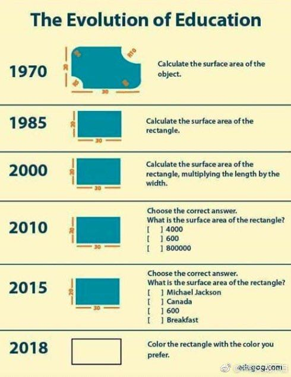
毕业了，但是我不想做一颗螺丝钉
但这是你口中说的因为大家是螺丝钉，每个人都不重要么？不是。这恰好是每一个角色都重要，重要到每一个角色本身不得不变成可以被同类雇员替换。个人英雄主义只能撑得起一部好莱坞电影，但撑不起一个万亿级的行业。这个行业过度到今天，已经十分标准化了，里面的每一个角色都有高度替代性。这是一个行业走向成熟的必经之路。只有这样的人员替代性，才能保证这个行业谁走谁留都一样能继续运转下去。
而你面对这一切也不用悲观，这个“替代性”也是一个向上的螺旋。你工作的第一年，几乎所有人都能替代你；等到你成长后，你会发现能替代的人在像漏斗一样，越来越少。
当然，这个拒绝螺丝钉的心态不光关乎你职业发展。最关键的一点，这心态是个很危险的信号，它会让你今后过得不快乐。你将一直处在一种要跟自己、跟别人、跟生活现状较劲的状态。”
在这个意义上，宇宙学思维告诉我们的生活观念差不多是这样的 –
- 第一，如果你心里想的是比赛的话，那么在这个赛道上，你知道你拥有多么难得的优越条件。
- 第二，在赛道的远处，还有很多很多比你领先到不知哪里去的人。
- 第三，还有很多很多别的赛道，是你连想都没想到的，绝大多数人根本不在意你参加的这个比赛。
- 第四，你跟所有人都有联系。
- 第五，人生根本就不是比赛。
这五点代表五个不同的视角，完全取决于你想怎么看。如果你能同时接受这五点，你就既能努力做好自己的事，同时还保持谦虚，同时还能跟所有人平等相处，同时还能在任何时候得到幸福感。看似矛盾，其实不矛盾。
经过 20 年的发展，中国成为了世界上最繁荣的互联网市场，用无数资本和努力换来了大量先进经验和人才。比如“张小龙的产品观，字节跳动的内容产品方法论，拼多多的增长黑客”这些最一线的经验都只流通在中文世界中。
有很多成功人士，他们完全知道怎么不断进步，知道怎么刻意练习，知道如何造势，知道怎么高别人一头，但是他们并不一定幸福。他的心态可能失衡，他一和人比较就沮丧，搞不好还会自杀。
世俗成功和内心幸福是不同的维度。阿德勒的学问不是告诉你怎么成功，而是告诉你怎么坦然面对这个社会。你说阿德勒哲学是不是唯心的？那我要问，“幸福”这个东西是不是唯心的？人除了那些可测量的世俗成功标准之外，内心还有没有不可测量的意义？
课题分离是自由社会的必然要求。人和人之间要有一个界限感，每个人为自己负责，人生就能简单化。
现在流行一句话叫“我爱你，与你无关”，我看这就是课题分离。爱谁、信任谁、帮助谁，那是你的课题，至于说这个人会不会爱你、会不会辜负你的信任、会不会对得起你的帮助，那是他的课题。
同样道理，我们完全可以说“我好好工作，与老板无关”。很多人抱怨领导和老板，说用人不公赏罚不明等等，但是你既然选择了这份工作，那把工作做好就是你的课题 – 至于说老板对你如何，那是他的课题。
这也是为什么现代人提供帮助的时候完全不应该指望回报。如果帮助一个人是为了让他报答，那你从一开始就是错的 – 你是想要控制别人，你是在干涉别人的生活！这样的帮助谁敢接受？这不是阴谋诡计是什么？
越是现代社会，越容易接受课题分离。我们看现在在大城市生活的年轻人过年回家最不爱听亲戚唠叨。长辈们已经习惯了对他人生活的横加干涉，一见面问长问短……可是年轻人已经习惯了课题分离。
有的人说从小性格孤僻，害怕外面的世界，所以不敢出门只能待在家里，这是他的性格悲剧吗？不是。他也知道孤僻的性格不好，但是这个性格对他有利 – 有了这个性格，他就有了不出门的理由，他就可以一直得到父母的照顾。
弱者很善于把过去的不幸和性格的缺陷当做武器使用。他会抱怨这些不幸和缺陷，但是他*需要*不幸和缺陷。他拒绝改变。
那你说，抛弃那些上不了台面的目的，主动改变自己的性格，做个阳光正面的强人不是更好吗？是。但是改变生活方式是有风险的。他已经习惯了自己的人设，别人怎么对他，他有充分的预期。他没有勇气改变。
我们见过险恶环境中长大而性情优雅的强人，也见过家庭条件优越而性格猥琐的弱者。这个世界给了你什么，那是你决定不了的。但是怎么看待、怎么利用手里的东西，那是你可以决定的。咱们不要学弗洛伊德，不能一有什么问题都是你妈妈的错。心理分析师让你大哭一场又有啥用呢？咱们得学阿德勒，你可以改变自己。
而改变需要勇气。岸见一郎说，阿德勒心理学是关于勇气的心理学。
为什么电影的帧率24fps就可以非常流畅，而电脑动画和游戏必须60fps呢？因为，电影的每一帧的曝光时间是几十毫秒，所以没一帧都是模糊帧。而电脑游戏的每一帧曝光时间无限接近0，是清晰帧。结果是，前者因为模糊而连贯，后者因为情绪而跳顿。
长期正确的做法似乎应当是放手，但必须要承受短期的巨大压力。但因为大家不愿承受短期的坏处，所以结果就是在陷阱中越陷越深。吸毒者上瘾也是类似机制。//@Serendipityfiona:想知道这样的困境如何解决
复杂系统内常有所谓的“系统性陷阱” (system trap)， 就是系统的参与者为了达到某一个目的，不断朝某个方向发力，但是系统内别的参与者的反作用力会把它抵消，结果就是大家胶着在那里浪费力气，而且很难达到原来的目的。日本过去三十年的流动性陷阱 (liquidity trap)，不断印钞但利率仍然为零，就是这种情况。美国一百年前搞的禁酒运动 （后来被迫取消），也是这种情况。
@图拉鼎 https://weibo.com/1846569133/H9nG2Fk7r?ref=collection
今年的一个小改变是：买书不看完，并继续买，完全没有心理负担了。
以前常常被「买书如山倒、看书如抽丝」这句话所影响，想买新书时看着没看完的书或很久没翻书的行为而心生愧疚而停止继续购入。事实上这反而造成了我「停止看书」的行为。
自从懂了买书不是为了看完，即使只看几页但有所收获就好，看不看完又有什么关系。于是很随性的买买买、看看看，买电子书也买实体书，反而在过去的一年看了很多书。
而且买了很多书后，发现囤书，甚至只是标记收藏都是有意义的行为，在某种程度上，这使得在我脑中建立起来了一个「索引」，就像查字典时会用偏旁或字母去查，知道在具体情况下该去看哪本书了。只是买来翻看过，更容易建立「强索引」，而简单的标记收藏只是「弱索引」，所以，对一本书好奇，就尽量还是买来看。
不知道明年我会对看书这行为又有什么新想法，总之，这就是今年的一个小小改变。
网友：手哥，我老婆就爱看湖南卫视综艺节目，每次看的时候笑得像个智障一样。还能挽救了吗？
这位网友，我觉得这是好事。你老婆爱看湖南卫视应该不是一天两天的事了，应该在交往之前就爱看吧？这就说明你俩层次不会差太多。你不可能是飘逸的艺术家或者是不羁的浪子，你就是一个普通男人对吧？
你想，你找一个这种老婆，30岁的人，16岁的心态，每天下了班看看娱乐综艺哈哈一笑，就没啥烦恼了，也不给你惹事生非给你添堵，这不是好事吗？以前有句话说“农民有三宝，丑妻薄田破棉袄”，这就是老祖宗的大智慧，媳妇特别优秀，就难免被人惦记。你这种普通男人一般都无福消受。
我知道有很多高精尖的女性，每天游泳健身，不是今天在北海道滑雪，就是明天去巴厘岛潜水，英文叽里呱啦跟老外谈笑风生。你往这种女孩身边一站，一种自卑感就油然而生，浑身上下不自在，这种女性不看湖南卫视，可是你也搞不定啊？是不是。
所以你应该珍惜你老婆，看湖南卫视层次是低，但是大概率也是个节约省钱会过日子的好女孩，不买什么奢侈品，购物靠淘宝，平时穿个bershka的衣服顶天了，你送她个coach，她能高兴好几天。
Q: 吴老师，听了这两天的课后，我感觉“FUD策略”的本质其实就是：信息不对称。现代社会信息越来越透明、交流越来越畅通，这个策略是否就会失效？
A: FUD其实更多地是利用人性的弱点。虽然信息流通可以更顺畅，但是人性是不会改变的。在危险来临的时候，人不自觉地会恐慌。比如坐过山车的时候，即使你告诉他不可怕，对方可能还是害怕。 在历史上，每次股市暴跌时，很多人都忍不住恐慌性抛售，即使各种信息表明经济没有多么糟糕。虽然现在信息流通更顺畅了，但是人的这种恐慌依然存在，怀疑的心理依然存在，于是依然有股灾。对于未来，我不觉得FUD的影响会消失，这和信息无关，而和人性的弱点有关。
梁宁产品思维30讲 人和产品的五个层次：
- 感知层。一个产品，你拿到它，它设计的美不美，质感怎么样。一个人，你看到他的第一眼，这个人的身材、相貌，说话什么口音，穿衣服怎么搭配，这个就是最外层的感知层。
- 角色框架层。简单来讲就是，我们每个人都生活在角色里，并且被角色驯化。大家在接受各种服务。为你提供服务的那个人，其实也都是角色所设定好的沟通方式和交付内容，然后再与你进行沟通、交割和讨论。如果你和别人在角色扮演里对接，你就会被牢牢地捆在设定的角色中。
- 资源结构层。它可能会包括了一个人的财富资源、人脉资源、精神资源，每个人其实都是不一样的。就是我们人生的历程，其实大概在很多时刻，很多人都会处在同一个角色里，比如说我们都曾经是学生，或者是说毕业刚工作的时候，我们都是小职员。但是接下来，因为每个人的资源不一样，大家的精神资源不一样，出身背景、家庭的人脉资源不一样等等。资源结构会推动每个人，去往不同的地方。
- 能力圈。这就是我们刚才说的最内核是存在感，它的外面一层是能力圈。
- 存在感。如果一个人的存在感满足了，其实他的能力圈就不会再扩充了。就好像说好多女人结了婚就不化妆了，男人满足了就不奋斗了是一样的。因为扩充能力圈其实是一件很痛苦的事情，你想狮子为了吃饭去杀长颈鹿，其实它挨打也是极其痛苦的。
马克思大女儿燕妮曾问历史学家维特克：“您能用最简明的语言，把人类历史浓缩在一本小册子里吗？” 维特克说：“只要四句德国谚语就够了：1、上帝让谁灭亡，总是先让他膨胀；2、时间是筛子，最终会淘去一切沉渣；3、蜜蜂盗花，结果却使花开茂盛；4、暗透了，更能看得见星光。”
你等年紀輕輕一遇挫折，便鬆散懈怠。日後怎成大器？
為人者，有大度成大器也！
夫處事之道，亦即應變之術，屺可偏執一端？
用兵之道亦然如此，皆貴在隨機應變！
跟码农最困难的对话一般是：“这个做的太复杂了”，“我觉得这个一点都不复杂。来我跟你解释一下。” 很多人不理解的是，说一个东西太复杂和说一个东西太贵一样，本质上都是两个潜台词：你没想象中那么多钱/资源支持这个复杂性，这个东西不值得那么多钱/复杂性。代码的债务属性比资产属性大多了。
市场竞争，政治竞选，生物进化，天气，有时会出现一个类似漩涡 (vortex) 这种极端现象。漩涡这种东西，是不能直接面对面斗争抵抗的，否则很容易被吸进去，不管你如何挣扎反抗。 更好的办法，是保持一个安全的距离，培养制造属于自己的漩涡，然后把大家慢慢吸过来。最好的投资标的，抽象上有和漩涡类似的结构。
西游记里有什么金角大王银角大王，喊一个咒语，如果你答应一声，就会被吸到葫芦里去。这里面有一个隐喻，不要轻易地被他人的话术带到沟里去。如果你不自主地按照别人的逻辑框架去思考去对话，你就已经输了一大半了，要被吸到葫芦里了。
@湾区日报BayArea: 以前一个同学在某大公司工作，说他有时候看到同事遇到困难，本能地想去帮忙，但一想到对自己晋升一点用都没有，同事如果出活了，他自己就不好看，于是忍住了。
【为什么我要离开 Google 单干】作者在 Google 待了 4 年，为能升职费劲心思，工作中所做的一切都是为了能过晋升委员会这关。好好修 bug、帮同事、写高质量代码等，不能在与晋升无关的事上浪费时间。觉得没劲，就离职了。
@梁斌Penny: 出差火车上废老劲了看完这篇谷歌员工奋斗多年一次升值机会也没有，最终绝望离职的故事。深感当厂职工太苦了。。内心不知道有过多少次挣扎。最终走上了做社会化工作，积攒和尝试创业机会的道路。。这些年我真是目睹了无数优秀人才被大厂折磨得泯为众人，不复读书时的意气风发。不爽就创业算了，不伺候大厂那些大爷们.
@图拉鼎: 每当我代码越写越乱的时候，我就去写单元测试，然后就开始越写越顺了。
@南大周志华: 纯自学第一遍读最好不超过两月，读不懂的跳过去，不求甚解。对一个发展迅速、知识尚未固化、外延极广的学科，先搭建大体框架要紧，开头不要试图弄懂所有细节。否则要么两年下来仍懵懵懂懂，要么对少量内容有了解、其他无知，失去进一步学习中触类旁通的机会。像画油画一样，一层层往上刷，后面再细琢磨。
@GK同人于野
我认为对从业者来说，现代的物理学研究工作有点像职业足球。
第一，大多是年轻人在做，做到一定年龄就会退役去做别的。如果你做的足够好、或者足够幸运，你可以（常常是成为教练）留下来继续做。
第二，如果少年时代没有专门的训练，就一辈子都没有机会做了。
第三，很多人谈论它，很多人甚至热爱它，但真正能靠它吃饭的，很少很少。
第四，它需要你投入全部的身心。你不可能业余从事这个项目。
第五，英雄人物有太高的声望，使人们常常忽略其中普通的工作者。
第六，你多多少少做过一些至少在自己看来很厉害的事儿，可能是你一辈子唯一值得吹嘘的事儿。
第七，你有时候会感叹自己为什么没做出大名堂，但你不会为选择了这个项目而后悔。
因此，我们平日里最好的做法，就是主动把共有信息变成大众信息，这就如同在战争中最安全的城市是不设防的城市一样。如果我们觉得薪水低了，不妨直接把这种想法说出来。否则，即使老板觉得可以给你涨点工资，但是他可能在想，或许这个员工自己觉得薪水还Okay呢，如果是那样，我何必多此一举呢？而你呢，可能在想，我去年工作那么努力，老板应该会想到给我涨工资。最后，你的工资没有涨，你怨气很大，老板则在想现在补救他或许已经没有用了，于是就没有做，其实他不清楚这时只要他给你补偿，你会不计前嫌的。最后，双方在猜疑中，关系越处越僵，直到你离职，他损失一员大将为止。
讲回到个人，什么是我们这个时代的核心竞争力？不是看到这个时代什么热门，自己就要挤进去搞，而是要发挥自己的特长，尽可能利用别人的东西，而不是自己做所有的东西。在一个单位里，善于找别人帮忙的人提升最快，而那些不管是什么原因，什么事情都要自己从头做的人，即便是老黄牛，业绩也好不了。
有一次几个企业家和我辩论，说自己如果不会做，别人会不告诉我，企业要是不自己做，美国人就会卡我们的脖子。我讲，如果别人不告诉你，说明你要么情商太低，不善于沟通，要么不善于通过交换利益调动资源。不论是哪一种，在职场上都混不出头。其它公司卡你的脖子，说明你的公司没有提供什么价值，市场没有认可你。如果你像小米似的，在市场上得到认可，那些元器件供应商巴不得你多买点它们的产品呢！
在未来时代，真正的竞争力恰恰是你不需要拥有所谓的核心技术，而要有整合资源、把事情做好的能力。
后来我到了工业界，很少参加学术会议，就和高曼没有联系了。几年后我有一次参加会议，和微软的研究员们聊起他，他们告诉我，高曼现在可了不得了，他成了比尔·盖茨的顾问。盖茨在微软有一批技术顾问，李开复和陆奇都担任过，他们可以直接向盖茨提建议。高曼这个学术界的小混混成了盖茨的顾问，这让我很吃惊。但后来大家说起来，也在情理之中。高曼有三个优点：
- 情商很高。想想我当年还是学生，他已经是微软的研究员了，但他从来都不耻下问。在微软里也是，他凡是遇到不懂的东西，就设法搞清楚，于是成了万金油了。
- 做事执着。他在微软做的事情，卡内基-梅隆圈子里那群人根本看不上，但是他不断在各种场合呼吁，时间长了就引起别人的关注了。正巧当时微软要和Google 竞争，之前积攒的很多技术都用不上了，而高曼一直呼吁的机器学习终于派上了用场，于是他就成了盖茨的顾问。
- 高曼的表达能力很强。这可能是哈佛毕业生普遍的优点。相比之下卡内基-梅隆大学那一大批高水平的博士，做研究比高曼强多了，讲东西还真讲不过他。
技术和商业历史本质上也类似 proof-of-work 的区块链，常常会有不同的技术标准互相竞争，常常有分叉有冲突，最后就是 longest chain prevail, 最长的链胜出。一旦群体形成共识，要想翻盘，往回重写几个区块，成本极大，基本不可能。人们常犯的一个错误，是试图以一己之力，改变已经形成的标准，改变群体共识，和生态系统上的所有人作对，按照曹操老师当年隔江赋诗的话说就是，”以蝼蚁之力，欲憾泰山“。 如果发现自己挖的区块不在最长的链上，要果断放弃。
如何破解僵化式思维？（吴军）
- 凡事从相反的角度再想一次。百分之八九十的人不会这么做，但是如果这么做了，一定有好处。
- 要和比自己好的人在一起，特别是专业问题要听取专业人士的建议。
- 每过一段时间，有意识地尝试一些新东西。这些可以是很小的事情，比如品尝一些新的口味，去一个新的地方，读一本新领域的书，认识一些新的朋友。这时你就会发现世界的多样性了。看待世界也容易比较客观全面。
哈佛研究：一个人没有出息的9大根源
https://weibo.com/1638782947/GCpvLeGGa
- 犹豫不决。比鲁莽更糟糕的就是犹豫不决。怀特黑德说：畏惧错误就是毁灭进步。
- 拖延。
- 三分钟热度，缺乏坚持。
- 害怕拒绝。专注目标，不要过分考虑自尊。
- 自我设限。杀死自己的潜能力。
- 逃避现实。
- 寻找借口。
- 恐惧懦弱，害怕失败和学习的挫折感。
- 拒绝学习。
大公司从来不缺技术，但是真实的颠覆式技术很难服务它现有的渠道，而重造渠道是人头滚滚的。所以吧不要担心大公司有牛逼技术，小公司颠覆大公司依然会是未来一百年的规律。
以前有个研究生作报告，座中有人提问，说你为什么要研究这个。研究生正待说些技术细节，他的导师在下面发话了……“你告诉他，作为一个工资不能体现水平的研究生，我有权做任何我感兴趣的研究。”
我有一位导师，曾经跟我私下吐槽有些同事整天做无聊的课题：“如果这份工作不能让你开上宝马，那你至少要研究个有意思的东西吧？”
我觉得做基础研究得有点这个态度。没意思为什么还在这儿混？
创业最重要的是团队，团队团结和信任，比什么都重要，高于商业模式，高于具体的产品定位，高于融资，高于商务资源。团队就是99%，没有其他任何东西值得你去焦虑。团队的核心是信任和相互了解和体贴，磨合得步调一致，而不是所谓的牛人的组合。之前没有磨合过的牛人的组合是往往是最糟糕的团队。
Yet Dijkstra has a paper I’m sure you’re familiar with, where he basically says we shouldn’t let computer science students touch a machine for the first few years of their training; they should spend all their time manipulating symbols.
Knuth: But that’s not the way he learned either. He said a lot of really great things and inspirational things, but he’s not always right. Neither am I, but my take on it is this: Take a scientist in any field. The scientist gets older and says, “Oh, yes, some of the things that I’ve been doing have a really great payoff and other things, I’m not using anymore. I’m not going to have my students waste time on the stuff that doesn’t make giant steps. I’m not going to talk about low-level stuff at all. These theoretical concepts are really so powerful-that’s the whole story. Forget about how I got to this point.”
I think that’s a fundamental error made by scientists in every field. They don’t realize that when you’re learning something you’ve got to see something at all levels. You’ve got to see the floor before you build the ceiling. That all goes into the brain and gets shoved down to the point where the older people forget that they needed it.
https://weibo.com/1782961197/Gy438tH57
我以前特别讨厌抖音，恶俗的JB玩意，现在也觉得大家刷微博之余，也去抖音看看，那里温馨祥和，大家都在认真过日子，更像个正常世界。
微博现在整体被一群生活给操翻了的loser给控制了，看个破新闻，就成天三句不离药丸，五句不离崩溃，很多小伙伴上微博时间短，不了解这个情况，事实上从2011年开始我国已经在微博上崩溃几十次了，为啥是2011年呢？因为我是从2011年开始上微博的，在那之前啥鸟样我也说不上来，当时也觉得世界一片灰暗，晚买了两年房，多花了一两百万，所以吧，我用大价钱买了个经验，不要相信微博唱衰狗，该干啥干啥去，而且现在就干。
在微博上一个个就跟明天就要完蛋似的，其实现实里大家都在拼命改善自己的生活，每天都在为自己为将来奋斗，身边每天都有人在自己人生边界上有了突破，每天都有人做成了事，我自己今年也做成了几件自己之前不敢想的事，还是那句话，上微博不要太当真，当真你就惨了，该买房就去买，该创业就去创，该培训就赶紧去交钱，loser 每年都是本命年，奋斗者每年都在刷新新边界，少担心国家，多关心自己，到头来，啥也不会崩，崩的是你自己。
https://weibo.com/3764674343/GyHsWEP9m
卓一行：我有一个微信群，里面都是在北京发展的软件工程师，刚开始大家事业都刚起步，主要是分享一些技术心得，面试心得，气氛非常热烈，干货多多，是一个非常有意思，有价值的群。
直到有一天，有一个“不上道”的兄弟，在这里通知大家自己升职了，然后随后就是不断的晒股票，晒工资，晒宝马等等…刚开始大家还恭维两句，后来回应的人就越来越少了。直到有一天这哥们突然在群里感慨队伍难带，也不知道是真心还是假意，还在群里请教大家如何管理好手下的软件工程师。第一次我发现群里的人彻底沉默了：明摆着，大家都是一线软件工程师，平时都是被管理的对象，你在这里向被管理者请教管理经验，在我看来简直是就是指着鼻子侮辱了！沉默不回应是因为大家有涵养，但我相信肯定有人在心里早把这哥们操了多少次了。
这个群基本也就毁到这哥们手里了，原来熙熙攘攘的技术分享没了，面试心得也没了，因为大家都觉得怪怪的，都觉的在这位“成功人士”面前分享这些实在太low了。
人生40年，职场20年，人际交往我学到的最重要的经验之一就是：学会示弱。
你加薪了，小有积蓄了，除了告诉自己的至亲，千万不要满世界嚷嚷。亲戚朋友知道了，除了眼红还有接踵而至的借钱，不借得罪人，借吧其实你也真没几个钱，外人只看到你挣钱，却看不到你花钱（房贷，车贷，孩子教育都需要大把花钱）。更我甚者，你如实相告自己也不宽裕，他转身就添油加醋向亲朋好友好友宣扬你生活悲惨，北漂多可怜！真是把国人“恨人有，笑人无”的心态表现的淋漓尽致。
职场上也要适当的示弱。才华锦绣固然是好，但也且忌太过锋芒毕露，误让人觉得你才是团队的顶梁柱，而领导只是一个尸位素餐的蠢货。且不说你的领导是否是一个心胸狭隘的小人，就算是他是一个襟怀坦荡的人，但基于项目的健康发展，从公心出发，都必对这样的人“先除而后快之”（参照三国杨修的下场）。所以你能简单说这是“木秀于林风必摧之”？还是领导妒贤嫉能？在我看来还是因为自己不懂得收敛锋芒，一手把自己置于危险的境地，成为众人的标靶！
给别人打工就是一个青春饭，升职了，只要你还没当上上市公司的CTO，就不要满世界嚷嚷，你既没什么显贵的地位和权力，更不会青山不倒。春风得意时不要只顾得享受别人的恭维（妒忌），更要想到有一天自己跌落时别人的围观嘲弄（不落井下石就已是好人）。曾国藩常用其曾祖的一句话告诫子孙：“下塘时须记得上塘时”，在我看来真是金玉良言。
“闷声发大财”，古人诚不欺我！！
说到防止小孩子沉迷游戏，我发一条属于个人经验、未经大规模验证的鸡汤吧：我儿子7岁的时候看见邻居小孩的X-box想要，我说好啊，你自己挣钱买到就可以随便玩。在家打扫卫生，一个房间1-2美元。他辛辛苦苦攒了两年多的钱，终于在9岁时买下了全套Xbox加上若干游戏。疯狂玩了三天之后就失去兴趣了，至今扔在家里堆积尘土–你问他为什么丧失兴趣？因为他在挣钱、攒钱这个过程中，怀有希望憧憬和目标实现之后的乐趣，已经大大超过了真正消费目标本身的乐趣。。。其实，这也就是大多数成功商业人士的行为模式。。。所以教育子女，只要尽快让他们发现：挣钱过程中的乐趣，其实远远大于花钱过程的乐趣。他们自然就不会对消费本身沉迷了。
其次，虽然它们都是产品驱动的公司，但是二者对技术的态度不同。腾讯在技术上落后之后，不是想打造一个更大的技术发动机迎头赶上，而是不断向用户传递一个信息，技术不是万能的，产品的细节才是最重要的。这么做从效果上讲比较好，但是终究境界难以达到最高。
Facebook的做法则是完全相反。2012年Facebook上市时，里面的老员工议论自己的技术和Google有多少年的差距，他们估计有10年，10年是一个让人感到气馁的差距。但是，Facebook里面从上到下并没有因此产生一种悲观情绪，也没有强调产品的差异能够弥补技术的不足，他们是通过给新员工更高的待遇，通过更长的工作时间，更积极的并购迎头赶上。今天，Facebook在互联网企业中已经是技术上的领头羊之一了。
嘉靖41年会考试卷
https://weibo.com/1444865141/GngjTmrKS
看到一份嘉靖41年的会试考卷，第一场是四书五经；第三场是策论。有意思的是第二场，考应用文写作：
要替永平十八年的汉明帝拟一道诏书，号召群臣表忠心；替乾元元年的唐肃宗拟一道诰，封郭子仪为中书令；还要替永乐二年的大臣们写一份贺表给皇上，背景是周王朱橚向朝廷进献驺虞一只–据说不是雪豹就是熊猫。
除此之外，还列举了五种公务场景，要求写出五条公文判语。
这已经不只是应用文写作，该算文综了，只读死书的人很难过关。就拿唐肃宗那道题来说，考生除了得掌握诰文写法之外，还得了解安史之乱的背景、时间节点以及郭子仪在其中发挥的作用。而且这里头还有一个坑，那会儿玄宗还没死，被强行太上皇了。所以诰文里的遣词用句，既得把安史之乱的责任落实到先皇头上，又得保持皇家体面不致露骨，核心思想就是：“委婉地表达出我爹是傻逼一堆烂摊子所以我得委派一个人帮着擦屁股–如何曲笔，如何粉饰，如何正面地表达一件负面的事情，其中精深微妙之处，揣摩透了，可以妙用无穷。”
所以能考出来的，都是人精：状元申时行，榜眼王锡爵，探花余有丁，后来万历十年他们仨都进了内阁，一科一甲同阁，这是绝无仅有的一次。
https://mp.weixin.qq.com/s/wmbhXSF7_SsGLyPC1mr4RQ
五、要有方法、有套路，对问题系统思考、对解决方案有战略性的设计
在前几年的工作中，由于取得了一点成功，技术上也有了一点研究，就开始夜郎自大起来了，后来公司化重金请来了大批顾问，一开始对有些顾问还真不怎么感冒。后来几年公司规模越来越大、IT的复杂性越来越增加的情况下，逐渐理解了很多。
西方公司职业化的专家，做任何事情都有方法论、有套路，甚至于如何开一个会都有很多套路，后来我对这些套路的研究有了兴趣，自己总结出了不少套路并给部门的骨干培训和讨论。在一个复杂的环境下，很多问题已经不能就事论事来研究和解决，非常需要系统性的方法和战略性的眼光。
对于一个组织的运作来讲，制度和流程的设计尤其需要这一点。
七、少抱怨、少空谈、积极主动，多干实事
我曾经是个抱怨很多的愤青，经常容易陷入抱怨之中。但多年的工作使得我有所转变，因为知道了抱怨是最无济于事的。世界上永远有不完美的事情，永远有麻烦，唯一的解决之道是面对它，解决它。
做实实在在的事情，改变我们不满的现状，改变我们不满的自己。实际上也有很多值得抱怨的事情都是我们自己一手搞出来的，比如社会上很常见的是高级干部退下来了，抱怨人心不古、感慨世态炎凉，如果好好去探究一下，原因很可能是他权位在手春风得意时不可一世、视他人如粪土造成的。
Q: 最近看到一位产品管理大师的书中说道：我们想要开发的功能，总比可以投入的资源要多。其实这就涉及互联网行业一直强调的小步快跑，快速迭代的敏捷开发的探讨了：事情总是可以不断优化的，但为了企业的整体效益我们又不得不采用快速迭代的方式来实现。
那么问题就来了，在上线一个新产品或者新功能的时候，如何平衡产品的体验与快速迭代的需求？希望吴军老师解答。
A: 想要开发的功能比投入的资源多，首先要做的是把不必要的功能删除掉。至于你说的互联网行业一直强调小步快跑，这是腾讯的提法，世界上其他很多互联网公司并不这么做，特别是一个公司比较大了之后，既不需要这么做，也不可能这么做。即使是腾讯自己，你看它最近5年是否推出过新产品，就知道了。因此，小步快跑的说法，只适合公司的早期。
有些时候，从一个简单的功能，可以放大成一个成功的产品。但是，更多的时候，如果没有顶层的框架设计，一个产品做出来时漏洞百出，而填补漏洞花的时间和金钱成本，远比重新设计还高。这就好比盖房子，你不可能先盖两层楼用两年，再加高，再扩大一样。即使机构力学上没有问题，这样做成本也很高。更何况一些高楼需要的功能，在盖两层楼时是想不到的，比如是否安装电梯。
做产品，用户体验是最重要的，是否快速迭代，只是手段而已。忘记了用户体验这个目的，做出来的东西没人用，效率是零，还把自己累死。
古代皇帝想干点出格的事，常先暗中指点某地位不高的言官把这事在朝堂上以个人名义讲出来，然后借机观察朝堂上的反应，如果反对声浪过大，皇上就直斥该言官“荒谬”，甚至贬谪该言官，然后再做打算，如果反对者寥寥，则大事可成矣。横竖皇上不吃亏是基本原则。
一个简单的方法，同样是景泰年间，同样是复立沂王议，同样是廷杖，有人受了八十杖不死，有人三五杖立毙，除去身体素质差异，很显然，八十杖不死的很大几率是暗中受命，三五杖立毙的属于瞎几掰揣测上意。
中国的大学固然有自己的问题，但是我们要看到它的进步。对于存在的问题，需要一点点纠正，而不是全面否定掉之后推倒重来，这就是保守主义的做事方式。读过上一季《硅谷来信》的朋友知道我一直倡导保守主义的做事方法，通过渐进改良的方法解决问题。
几年前我和一位担任过北欧某国家足球队教练的人聊起足球，他移民到美国后，老了便教孩子们踢球。我们谈到为什么中国足球成绩很差，他说中国运动员只有点球才能进球，平时稍微有一点干扰就进不了球了。任何一个职业足球运动员，都需要能在夹击、堵截甚至对手犯规干扰的前提下把球踢进去。
他的话其实对很多事情都适用，永远不要指望有一个所谓纯粹的、干净的环境，让我们能不受干扰地做事。人本事的大小不在于理想状态下的发挥，而在于有各种干扰时依然能发挥。在中国办学也是如此，要在现有体制下，现有价值观下，把学校办好，而不是推倒重来。这是今天内容的第一个要点。
第二个要点是，再次强调保守主义的做事方法，要依靠渐变，不要老梦想突变。
There are 4 types of wealth:
- Financial wealth (money)
- Social wealth (status)
- Time wealth (freedom)
- Physical wealth (health)
Be wary of jobs that lure you in with 1 and 2, but rob you of 3 and 4.
James Clear on 推特：
- 金融财富 (钱)
- 社交财富 (地位)
- 时间财富 (自由)
- 生理财富 (健康)
小心任何用一和二来引诱你，但是剥夺了三和四的工作。
我再加一句，五是“知识财富”。有了三四五，一和二随时唾手可得。
一个银行行长喝酒聊天，聊到金融三大支柱：房地产，银行，证券股票。他用了一个比喻，还挺有意思的。他说：
房地产好比母亲，平时唠唠叨叨，关键时刻一定能换钱，陪在身边不离不弃；
银行好比配偶，“ 夫妻本是同林鸟，大难临头各自飞 ” ；
股票就是小三，有钱跟你玩，时而让你心跳，时而让你血压升高，很刺激！一直玩到你没钱……
现在的情况就是钱少的努力趴着赚钱。赚不到钱的，读书锻炼身体。有闲钱的去旅游看风景。如果还有闲钱的慢慢买股票或者基金。慢慢买。指望用钱赚钱大概率没啥可能。。
年轻的时候往往是爱别人胜过爱自己。年纪大的时候才知道爱自己要胜过爱别人。所以年轻的时候喜欢那些自己喜欢的人，对他们毫无保留的付出，而对喜欢自己的人，毫无保留的厌恶，年纪大的时候才开始懂得不应该这样子，然后才会喜欢那些在行动上对自己好的人。慢慢离开那些你喜欢但是不喜欢你或者你觉得他喜欢你，但是却没有行动喜欢你的人。
最近，老有人问，什么是区块链。我是没法用elevator pitch讲明白。谁有好的几句话能让白纸人听懂。
一种想解决一个问题但是实际上屁也没解决但是又创造出来10个新问题的技术。
快速路线和正确路线 - 硅谷王川
https://www.weibo.com/5339148412/Hr6hvo2Jr?ref=collection
1/ 为了解决某个问题，有两个不同的技术路线图： 一个路线图比较直接了当，马上可以拼凑个 demo 展示， 很多人选择这条路线。
2/ 另外一个人， 称为张三，选择了第二个路线图：因为他发现第一个路线图未来必定存在技术瓶颈，但张三正好拥有一个比较独特的技术资源，他认为利用此技术，第二个路线图长期看会远超第一个路线图。
3/ 大部分人根本没有能力走张三选择的第二个路线，因为没有足够资源/没有张三的独门绝技，即使想做也要花很长很长时间。而第一个路线，因为可以很短时间内做出个 demo, 看上去像是那么回事，吸引投资者加入，所以大部分人都只有选择第一条路线。这是问题的本质。但是大部分人不理解这种本质，两种技术路线图的流于表面的争论僵持不下，大多不了了之。
4/ 因为大多数人都（实际上是被迫）选择第一条路线，所以里面的人，外面的观察者和主流舆论都产生一个错觉，认为第一条路线图是正道，张三在胡说八道，他的第二个路线图没戏。
5/ 即使身在其中者，实际操作中意识到第一个路线图的瓶颈后，因为每天要赶进度处理各种琐事，所以很长时间内，不敢直面惨淡的现实， 硬着头皮干下去。
6/ 张三的第二个路线图，过了某个节点迅速爆发，其技术路线图终于在实操上无可非议地超过第一个路线图。
7/ 此后，走第一条路线的人，从工程师到投资者到供应链的伙伴，很快全军覆没，损失惨重。覆灭速度很快，以至于他们的教训，和当初一些没有讲到点子上的各种争论，也很快为后人所遗忘。
8/ 我觉得这类场景在过去，现在，和将来，还会不断重复。 你自己了解的专业领域里，有没有类似的例子？
理性消费 - 硅谷王川
1/ 很少有人会因为花钱在奢侈的吃喝玩乐上而破产。
2/ 多数人破产来自于错误冲动的投资决定，比如高杠杆期货股票或者房地产投机； 或者为了挣点钱而对身体健康一而再，再而三的长期忽视。
3/ 现实中，很多人在吃喝玩乐的花费上会犹豫而计算半天，原因之一是因为这本身就很好计算。
4/ 很多人被各种腰酸背痛神经衰弱的疾病困扰，但不愿多掏几千美元去把跨洋飞行的机票升级到商务舱，以换取十几个小时的一百八十度平躺的安静睡眠。
5/ 而对于一拍脑袋的投资决定，用命博钱的交易，则不会太多迟疑。原因是一旦被蛊惑后，非理性的那部分大脑被周边群体的情绪所激励，被各种发财的想象带来的快感所淹没，而完全忽视潜在的不对称的下行风险。
6/ 本质上，凡是不频繁而有上限的消费，对个体财政状况的负面影响，长期看都是可以忽略的。不要在这上面吝啬而牺牲生活品质。
7/ 高杠杆且有巨大下行风险的投机，以命博钱的工作和创业，是要三思而竭力避免的。
8/ 凡是投入恒定，但有内在的杠杆效应，上行回报可能不可限量的行为，要多去践行。比如读书，一年在亚马逊上买四百本书也就大约四千美元。 比如写开源程序或者写作或者公开演讲，可以让自己的产品被成千上万的人看到并且得益。
想来想去，人生要衣食无忧一条铁律就是离开充分竞争市场。千军万马独木桥的竞争态势里，绝大部分人都是低品质生存者。哪怕最后真杀出来的人，也一定是满身伤痕，血迹斑斑。。
“凡事靠自己”不是一个好品质
这是另一个学校教育和社会生活的脱节之处，九年制义务教育，基本没有任何关于团队协作和人与人相处的教育。只有体育运动里有些团队项目，但能参与其中的学生比例少得可怜。大学中有一些团队协作的项目机会，但从辣妈的实际体验来看，大部分团队协作属于“少部分人干，其他人闲着”的状态。再加上，我们上一辈人对“自力更生，艰苦奋斗”的记忆，大部分人都把“凡事靠自己，不欠别人人情”当做优秀品质。但事实上，抱有这种想法，无形中就给自己和别人之间加上了隔阂。
人是一种社会动物，不仅需要和别人交流，也需要借助别人的力量来实现自己的目标。借助别人的力量，并不是要占别人的便宜，而是优势互补地合作，实现更大的价值。另一方面，人和人之间就是在不断协作，相互帮忙的过程中，形成紧密的关系。做销售的朋友可能都知道一条技巧：如何才能让陌生人帮你一个大忙呢？首先给他一个帮你小忙的机会。因为只要他帮了你一个小忙，那么你们之前的关系就前进了一步，他会倾向于帮你更多的忙。所以，千万不要有“别人帮了你，你就欠别人人情”的想法，应该“给别人帮助你的机会，并且在别人需要的时候帮助他们”。只有这样，你才能更好的发挥自己的优势，实现更大的目标。
懦弱的人，别人一个眼神就可以让你惴惴不安。上大的人，别人虐你千百遍，你依然拍拍灰尘，坦然前行。一个人，如果仅仅指望这个世界，没有坏人，才能生存，最好的办法就是躺在家里，哪里也不去。世间很险恶，你得学着比他们还强大，你才能过的好。没办法，所以让一个孩子越早知道世界的不完美，越是对她的保护。
//@南大周志华:senior的知道论文价值就是那点新火花，有毛病没关系。前沿研究要有长处，系统开发要无短处//@刘群MT-to-Death:通常junior审稿人会更严厉，发现小问题就给低分，senior审稿人如觉得论文有可取之处，通常不会计较一些小问题//@爱可可-爱生活: 年轻时以为挑毛病是本事，长大后发现找亮点才
在我读博期间，有位教授说过：“随便找篇论文，其中漏洞之大都能让你开着卡车穿过去，寻找*值得*你学习的东西” 曾经，我们都觉得自己很聪明，“开卡车”很带劲。多年后，我才开始欣赏这句话背后的智慧。如今更甚当年，特别是网上发表的论文，别说开卡车，开飞机、开航母，能塞进整个世界都司空见惯了。话说回来，所有论文都有局限，但当我们批判性评价这些研究时，往往会有令人耳目一新的收获。
通过这十个迷思的解读，你是否有一种感觉 – 孩子是一种非常经得起折腾的东西。让他哭也好、吃糖也好、哪怕你离婚也好，你基本上折腾不坏他们。并不是我故意挑选了这样的迷思，书中其他四十个迷思破解也都能减少你的焦虑感。我理解这显然是进化的设定。现代人的生活比过去稳定多了，过去的孩子受那么多苦都没问题，又怎么可能被你用合法手段给毁了一生。
当然这些研究同时也告诉我们，你想把孩子给往好了折腾，也很难很难。所以基本上父母没有那么容易干预孩子的成长。
还是那句话：你是什么人，比你对孩子做什么，重要得多。做人难，但是做家长没那么难。不要整天战战兢兢动辄得咎的样子，这不是伴君如伴虎的事儿。
Q: 现在人很忙，没有时间休长假，吴老师有没有专门休长假的习惯，长假应该怎么休呢？
A: 其实忙是自己给自己找的借口，真比我更忙的人恐怕比例非常低，我能有时间休长假，大部分人应该都可以。
觉得自己忙没有时间的人，在思维上有两个误区：
- 把自己想得太重要， 很多人讲，“啊呀，我要是离开一周，单位就怎么怎么样了！”其实哪至于啊，说句不吉利的话，谁要是真不幸，出门碰到了意外，难道原来的单位还不运作了？即便那家公司死掉了，人类还有替代品。
- 没用的事情做太多， 以至于该做的事情没有在更少的时间里做完。现在是年初，大家不妨总结一下去年是否有一些事情其实没必要做，或者做了没有产生正面效果。
今天也是周末，大家也不妨思考一下每天自己断断续续看手机的时间是否超过了两小时。如果对这两个问题的答案都是肯定的，恭喜你，挖潜的可能性很大。
Q: 碎片化的学习，能让你用20%的时间快速Get到80%的知识和技能。问题是你学了80%的知识之后，有没有去使用，让知识改变你的生活。 另外，如果你想深入学习一件技能，是要花大力气的。绝不是只利用碎片时间就能学好。需要花大把时间记笔记，整理思路，建立知识之间的关联，甚至和其他学科建立关联。
现代城市工薪族的问题，至少我看到身边大部分人的问题，都是想学习却没有时间，或者说没有决心去花大力气，真正把一门学科学到精通。怎样才能提高自己的勇气，痛下决心，迈出第一步？用碎片化的时间学得一个技能真的现实吗？
A: 这是一个很好的问题。
首先我们要明白这个社会不欠我们什么。因此，虽然我们有一千个理由讲自己怎么忙，没有时间，或者自己怎么有困难，有弱点，不能痛下决心，但是社会并不保证每一个人的成功。命运对此也从来是不闻不问，它只是默默地看着每一个人的表现，根据他们的付出给予褒奖。
其次，我们在第013封信中讲，稀缺性最值钱。 汝窑瓷器，随便一件就能值几个亿，因为全世界只有六十多件。如果一个瓷器，哪怕做得再精致，全世界要多少有多少，白送大家几个在家里，大家恐怕还觉得占地方呢。今天全世界从来不缺所谓掌握了80%的知识的人，那些掌握90%的人还未必能找到好工作呢，谁会多看一个迅速学到80%知识和技能的人一眼？
为了便于大家理解这一点，我不妨让大家看两张图。
第一张图中的大桥你可能没有见过，见过的也未必有印象。事实上这是硅谷地区最重要的大桥之一–海湾大桥，连接旧金山市和奥克兰市。我让硅谷地区的人猜，居然有1/3答不上来。因此如果你不知道，不是你孤陋寡闻，而是它显得太平常。
第二张图是下面这一张，图中的大桥谁都认识，哪怕是没有去过的人，它就是离海湾大桥不远的金门大桥。 世界上，大家只知道第一，不知道第二。 如果谁能说出10名奥运会亚军的名字，我们会怀疑他是体育记者。
第三，痛下决心，花工夫把一项技能学好，不仅让一个人能够获得一技之长，甚至多种技能，而且能培养人学习的能力，更重要的是获得成功的经验， 并且从此树立每件事情都能够做好的信心。信心很重要。
第四，我们都知道花大力气做好一件事不容易，但是，正是这种不容易的特点，才建立起一个门槛，让真正掌握技能的人受益。 一些职业，比如医生和律师，没有很长时间的历练是从事不了的，这些行业，也就把非专业人士排斥在门外了。但另外一些职业，比如开一家淘宝店，是没有什么门槛的，因此竞争很激烈。在IT行业，会写几行代码不是件难事，但是大部分人收入高不了，因为如果这样的职业收入高了，其他行业的人很快就能转行过来，使得人才市场上供大于求。
最后，是用碎片时间学习，还是用整时间不是问题的关键。关键是我们是否有决心花工夫把知识和技能学好。
我在《硅谷来信》第170封信中介绍了发生在我身边的两个例子，讲了两个想出国读书的女生准备申请学校时的表现。其中一个人永远能找到没时间学习的理由，三年过去了连托福单词还没有背熟。另一位女生当初只是大专毕业，最后还成了约翰·霍普金斯大学的硕士研究生。大家可以看看她们俩人做事有什么不同。
Q: 老师您提到曾国藩说的"众争勿往"，那这是否是鼓励人不要参与竞争呢？
例如，现在在美国，很多不是学计算机的人都转专业去读CS，很多人毕业了都想要挤进像Google、Facebook、Amazon和Airbnb这样的公司，那这是否是一种"众争"呢？
A: "众争勿往"其实和加入竞争并不矛盾，因为在这个世界上，人总要竞争，不在这个地方竞争，就一定会在另一个地方竞争。我说一件事情你就明白了。
我小的时候生活在北京，当时北方冬天只有两种蔬菜，大白菜和土豆，而且大白菜要在深秋初冬一次把一年的买够，一家大约要买三五百斤，很多家都挖地窖存储一个冬天。如果错过了购买的时机，通常冬天就没有菜吃了，或者要花四五倍的价钱在蔬菜店里购买，这样每个月可能要多花20元钱，而绝大部分家庭是无法负担得起的，因为当时一个家庭的收入也不过一百来块钱。而在冬天存储大白菜的季节，需要在寒风中排队半天，然后再借一辆三轮车把菜拉回去，有时还要排两三次，才能把一冬天的菜买够，在寒风里排队买菜的滋味可不好受。
到了80年代，中国开始逐步市场化，并且打破大锅饭，因此会有一些人的收入比大家多出来不少。我当时和几个同学去中关村做社会调查，访问了一家民营企业的总经理，他和我们讲他们特别忙，因此，从来不会有时间去排队买冬存大白菜，而是到店里花几倍的价钱买新鲜的。这些身处竞争中心的民营企业的人，可能每天要比别人多工作两三个小时，一个月能比大家多收入一百块钱，但是这个钱远比吃白菜花掉得多很多。 这件事让我开始反思，人要么努力工作，在职业上竞争，多挣钱，这样在其它的时候想干什么就干什么。要么逃避竞争，但是你是在排队买冬存大白菜时和其他排队的人在进行低层次的竞争，其实是另一种竞争。在我小的时候，大部分人都缺乏动力冒险改善自己的生活，其实"众争"之地并非在商场上，而是在买大白菜的队伍中。
今天，很多人为孩子的教育发愁，为自己看病发愁，在这两个方面花掉了很多时间和精力，这其实是在和最多的人竞争。如果换一个思路想问题，能够在自己事业上去竞争，能够让自己的条件超越绝大部分人，在中国住到好学区，到一个私立医院看病，甚至到国外看病，其实就摆脱了"众争之地"。
讲回到刚才的问题，很多人挤进Google、Facebook和Amazon。今天去这些公司，其实早已经失去了挣钱最好的时机，在里面想熬出头并不容易，因为十几个新入职的人，最后只有两三个能够做到比较高的层级。Airbnb还没有上市，或许还有机会。
往这样的公司里面挤，其实是为了获得一个类似铁饭碗的东西，大部分人进了Google通常在硅谷还是买不起房子，更不要说在好地方买房子了。他们和当年在中国有一个轻松有保障的机关工作，但是每年冬天排队买大白菜的人，没有太大区别。也是就是，他们加入了"众争"的行列。
作为海洛因的发明者霍夫曼，他背负了太多本不应由他背负的道义上的责任，他一生未婚也没有留下子嗣，1946年孤独地死去了。作为阿司匹林的发明人，他拯救了人类无数患者的病痛，他一生几乎是在骂名中度过的。
从海洛因的历史，我想总结这样几点：
- 好的初衷，未必得到好的结果。发明阿司匹林和海洛因的初衷，甚至方法都是相通的，但是结果却相反。
- 对一件事、一个发明的全面认识，常常需要很长时间。很多一开始看似是好事情的发明，其副作用需要很长的时间才能看到。一开始没有显现出，并不等于以后在量积累到一定程度后不会发生质变。发明人或者发明单位出于功利的考虑，常常会向大众夸大好的作用，而隐瞒副作用。颇有讽刺意味的是，阿司匹林一开始被拜耳公司认为副作用太大，居然差点被枪毙掉，后来是医生们发现它是一种非常有效，用途广泛的好药，才被推广。我们常说，日久见人心，对很对事情的认识，其实也是如此。另外，出于利益的考虑，并非内行和专家就不会隐瞒副作用。
- 人类常常是为了解决一个问题，制造出一个更大的问题。最初吗啡是用于治疗鸦片瘾，结果导致更大的瘾，张学良就是这个过程的受害者。而海洛因是被用来替代吗啡，后来被证明危害更大。今天，美沙酮等阿片类的药物被用于治疗海洛因瘾，虽然它的危害没有海洛因大，但是依然能让人上瘾。事实上，在美国，死于阿片类药物的人是死于海洛因的五倍，每年有16000人，而全世界则高达7万人。世界上90%的阿片类药物的使用，都属于滥用，上瘾者高达1500万。
- 人类至今似乎逃脱不了被罂粟这种植物玩弄于股掌的宿命。实际上各种精神鸦片对人的伤害，一点不亚于罂粟制品。我们既然不能指望一种新的罂粟制品解决过去的毒瘾，也不能指望新的科技把我们从过去某一种精神鸦片中拯救出来。戒除不良习惯，只能像张学良那样，痛下决心，并且付诸行动，别无他法。
今天的话题可能有点沉重，但在生活中，一些警示是需要的。
对于主观和客观，我基本的看法是这样的：
- 世界上并没有什么绝对的客观，因此人不能偷懒，不经过思考就接受所谓权威客观的标准。
- 主观的意见非常重要，我们既要听主观的意见，也要发表自己主观的看法，而很多所谓的客观论述不过是重复不会引起争议的信息。
- 多听不同人的意见，而不仅仅是相信权威的意见。
- 作出判断时要做到公平、公正，做事的时候要遵守规则。这比纠结主观和客观重要得多。
Q: 给你两个选择，一个是生活在微软所在的地区，将来有很大的机会进入这家公司，然后很快进入小康，并且逐渐温饱不愁。
另一个是生活在硅谷这样的地区，没有一家绝对主导的企业，竞争激烈，选择也丰富。你会选择哪一个？
A: 这个问题显然没有标准答案，每一个人的情况不一样，结论肯定是不同的。不过对于这个问题，我期望大家给出一个明确的答案，而不是脚踩两只船地分析，用什么“各有千秋”的字眼来回答。大部分人其实给出了他们明确的答案，对此我就不作评论了。对于习惯于兼顾双方的人，我想对他们说这样三点：
- 任何时候，有一个明确的答案都比没有答案好。 我们的教育，给我们养成了怕犯错误的习惯，以至于害怕作选择。但是在生活中，那些永远有选择性困难的人，常常是两边都得不到。以选择居住和发展的地点这件事来说，一个人只能住在一个地方，不可能得到两边的好处。因此选择硅谷这样的地方和选择西雅图这样的地方确实各有千秋，我们必须要舍弃一个。
- 我在《硅谷来信》的第117封信中讲了不选择的自由，其实就是表明： 什么事情一旦选定，就好好经营，不要再回头想着另一方面的好处。 张爱玲在《红玫瑰与白玫瑰》中讲了中国男人的一个毛病，娶了红玫瑰就会想白玫瑰，娶了白玫瑰就会想红玫瑰。在生活中，人总要作出选择，而一旦选择后，就不要后悔。真正的幸福有些时候是认死理，而不是所谓兼顾各种优点的生活原则。
- 明白一点，人的想法是会变的，年轻时想要生活的地方，和年老之后未必相同。这个切换的过程是比较漫长的，不会来回摇摆。
最后，对于今天看似百年老店的公司我要多说两句。2001年我在美国找工作时，我的师兄弟都去了大公司的实验室和或者大学，比如AT&T、微软、IBM等等，而我去了小公司Google。但是世界变化是很快的，我到Google半年后，当时AT&T实验室就开始裁员了，面试我的牛人迈克尔∙瑞里（Michael Riley）也跑到了Google。后来他讲，幸好AT&T下坡路走得快，他跑得早，赶上了Google没上市的机会。
而我在微软和IBM的几位师兄就没那么幸运了，因为那些公司是温水煮青蛙式地走下坡路，等他们想再到Google来，已经很晚了，失去了很多机会。因此，不要觉得进了一家百年老店真的能保证有长期的铁饭碗。
我10年前有一次在北京打的，那个的哥的素质不错，聊起来原来是粮食局的人下岗了。我说粮食局不是国营单位，铁饭碗么？他说，你看看现在北京市哪儿还有粮店，没有了粮店怎么可能会有粮食局？
最后我想说，在人工智能的早期，行业里流传着这样一句话：“你应该从事最困扰你的问题，因为这是突破瓶颈的绝佳机会，否则它总有一天会继续困扰你。”在研究领域，我发现最困扰我的问题，往往就是最好的下一个研究方向。因此我也鼓励大家去探索最令人困扰、最具有挑战性的任务，即使不确定能否获得回报，它也很值得。
这是我以前分享的买股票的心得，越看越觉得有道理。
- 赚钱主要靠运气。
- 200万闲钱以内买房子，200万以上买科技股，2000万以上只买蓝筹科技股。
- 不要太相信自己的判断。
- 不要找比你穷的人讨论。
- 最重要的是永远不要加杠杆。
突然发现，用这张图诠释“你必须非常努力，才能看起来毫不费力”挺合适的
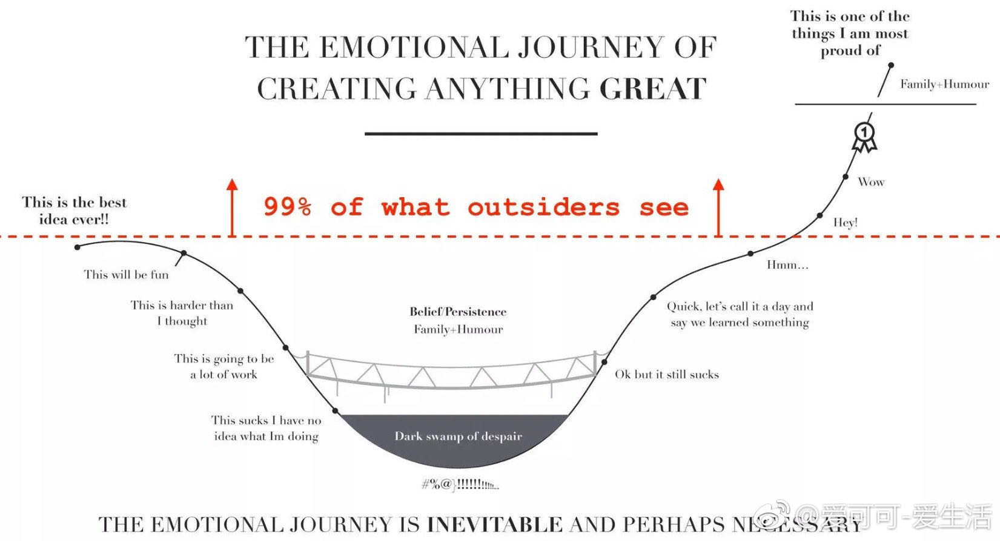
关于独角兽，我还说过一句话：独角兽回归最冠冕堂皇的理由是，让中国可怜的网民分享他们的红利，回馈中国可怜的韭菜们，但是你必须明白：卫生巾看起来是用来堵漏的，其实它是吸血的！
表白遭拒多是丑，求婚失败无非穷。
在这个科学已经大行其道的年代，蒙洛迪诺提醒我们科学家的初心是什么。我觉得这个初心可以总结成下面这三个“核心价值观” –
- 你的目的是想知道这个世界到底是怎么回事儿。
- 你的理论要能用数学精确表述。
- 对错与否取决于对自然的观测和实验。
其他一切都不重要，科学就是科学自身的推动。
近代中国人总想对人类文明做出比较大的贡献 – 我们也许应该先想到，这样的贡献并不好做。
所以感受快乐的方法一共有两种 –
- 追求多样性。新奇的、不一样的刺激会让我们快乐。
- 追求间隔性。间隔一段时间，哪怕是以前经历过的刺激，我们还是会感到快乐。
拉曼最后给的建议就是间隔。是，我们大部分时间是不快乐的，但也正因为有了中间这些不快乐，你才会感到快乐。正所谓不经历风雨，怎么见彩虹啊？
快乐在今天这个世界是廉价的。设计电子游戏的人非常明白怎么让人快乐，他们最主要的手段就是第一个方法 – 多样性。游戏里会不断有新鲜的刺激，让你一直玩下去，乐此不疲。上网看微博、刷视频也是这样。这种电子化、工业化的刺激密集度比真实日常生活高太多了。没有人能抵抗这种快乐的吸引。
但是我注意到，这些娱乐项目有个本质的弱点。
设计者总是希望你一直留在他的产品里，所以他总是使用第一个制造快乐的方法。他负担不起第二个方法，也就是间隔。
所以在这个时代，间隔出来的快乐，更稀缺，所以更宝贵。
这就意味着我们应该更多地使用间隔的方法对快乐进行调控。比如说，再好吃的东西，也别一次吃太多；再好玩的游戏，也别无限制地玩。适可而止是为了长期的享受。而且这涉及到生活的主动权。被多样性吸引是“被”吸引。间隔，总是你主动。
而第一种方法也有高级的用法。这就是要追求比较“深”的东西。搞学问，学科的道理越深越好，你每进一步都有新的刺激。做事业，目标越远大越好，你才能一直有新的挑战。这就是为什么对有使命感的人来说工作才是最大的快乐。
所以我们的快乐调控策略就是，浅的东西用间隔，而深的东西自带多样性。
那么为什么迪恩能做到如此大的成就呢？我把他的过人之处归结为五点：
- 对计算机科学的深刻理解。回顾我们前面提到的计算机科学的特点，你会发现迪恩做事一直围绕着计算机科学的那些本质–模块化、平行处理、分治，等等。一个人在计算机领域能走多久，取决于他的理解有多深。
- 专注。迪恩始终是一个计算机工程师，而且20多年来一直专注于计算机系统，他从来没有做什么跨界的事情。作为Google最早的工程师之一，迪恩有很多次机会转成高管，但他从来没有那么做，而是一直专注于技术本身。
- 善用优势。迪恩所做的工作的原理，其实大家都懂，但是能够做得有规模，有水平就不容易了。他懂得利用Google内部的优势，就是具有近乎无限的计算机资源和数据资源，通过量变达到质变。
- 合作取代颠覆。迪恩的很多成就具有颠覆性，但是他很少提颠覆这类的词。他的成果大多是合作的结果。他主导开发的GFS文件系统，原本是为了Google的网页下载和索引团队的需求搭建的。当时从事Google索引工作的朱会灿博士是他的GFS的第一个用户。他的并行计算工具MapReduce是为了广告优化开发的，Google大脑是为了Google的机器翻译和语音识别等项目开发的。他不是凭空创造概念的人，但是他为了解决实际问题做的项目，后来反而成了新概念。
- 少做事情。无论是迪恩做的工程项目，还是写的论文，数量都不多。但是大部分计算机系的教授一辈子的贡献抵不上他的一个项目，一辈子论文的引用数，抵不上他的任何一篇论文。很多人觉得多了就是好，少了就不好。其实再多的芝麻也难以抵得上一个西瓜。
希望迪恩的经验对你有所启发。
总结一下林奇的智慧，有这样四点：
- 不要从众，既然大部分人在股市上都是赔钱的，从众一定不会有好结果。
- 要想得到别人得不到的回报，就需要找到别人不知道的信息，PEG就是如此。
- 当我们对未来一无所知或者所知甚少时，多一些尝试是无妨的，但是，要懂得止损，同时，要有耐心把好的东西长期持有。在这一点上，我把它扩展到交友的方法上了。
- 最多的资源要用到最有效的地方。在工程上也是如此，不要把80%的时间，浪费在不重要的小事上，而要集中精力，把最重要的事情做好。
Q: 我现在最大的困惑是交往的人太少，原因是不知道怎样和人愉快地聊天。说工作上的事情没问题，但一闲聊就成了大笨蛋。现在年底的各种聚会也是一样。
A: 最简单的办法就是多读书，丰富自己的知识和阅历， 不要老看新闻，看八卦，刷朋友圈。
其次是走出大楼，无论是公寓宿舍，还是办公楼， 参加一些室外的活动，甚至可以有意识约一两个关系还算好的同事、朋友周末一起去做点什么事情。
最后，在单位里主动帮助人。
Q: 现在人很忙，没有时间休长假，吴老师有没有专门休长假的习惯，长假应该怎么休呢？
A: 其实忙是自己给自己找的借口，真比我更忙的人恐怕比例非常低，我能有时间休长假，大部分人应该都可以。
觉得自己忙没有时间的人，在思维上有两个误区：
- 把自己想得太重要， 很多人讲，“啊呀，我要是离开一周，单位就怎么怎么样了！”其实哪至于啊，说句不吉利的话，谁要是真不幸，出门碰到了意外，难道原来的单位还不运作了？即便那家公司死掉了，人类还有替代品。
- 没用的事情做太多， 以至于该做的事情没有在更少的时间里做完。现在是年初，大家不妨总结一下去年是否有一些事情其实没必要做，或者做了没有产生正面效果。
今天也是周末，大家也不妨思考一下每天自己断断续续看手机的时间是否超过了两小时。如果对这两个问题的答案都是肯定的，恭喜你，挖潜的可能性很大。
死亡是我们无法避免的事情，但我觉得更积极的做法是透过死更好地理解生命的意义。 要想慰藉我们那些离世的亲朋，甚至我们自己逝去的岁月，与其忧伤和怀旧，不如做好今天的事情，让生更有意义。
同时， 当我们想到生命总会如草如花有凋零的一天，把那些不好的习惯赶快改掉，该享受生活就享受吧，每一天好好过的生活才是自己的。 这也就是我每年要度长假的原因。
我在前面讲旅游的意义时说到，记录很重要。冰岛旅游对我来讲收获还是蛮多的。除了体验其它地方、其他时间难得看到的景色，并且通过照片将它们记录下来之外，我也记录下自己的几点感受：
- 逆向思维的重要性。 这次冰岛之行收获满满，而且轻松惬意，主要是选择冬季去那里。此外，我过去一直是一个喜欢白天的人，尤其喜欢仲夏时节长长的白昼，但是第一次体验几乎没有白天的日子，觉得也别有风味，特别是每天能睡很长时间的懒觉，是平时没有的奢侈享受。
- 一个旅游业真正发达的国家不仅有美景，还会有周到的服务。我们很多时候，只注意把东西做好，不注意把它推销好。
- 我这次没有去蓝冰洞，但是并不因此遗憾。世界上很多事情并不完美，为以后留下一点想象的空间，也未必不是好事。
招聘越苛刻，越说明那个活谁都能干。这个看起来反常识，其实混职场久了就很容易理解。
当然有个前提，“谁都能干”不是说大街上随便找个人都能干，而是能进入那个招聘漏斗的人。
谷歌hr部门的人也做过统计，招聘时的打分好坏，和这个人进来以后的表现，连关联性都没有。
苛刻的主要原因是供大于求。只要供给偏大，就一定苛刻。即使是水平要求不高的职位（不具体说了，得罪人），也会苛刻到不讲道理。
真正供给很少的位置，比如你现在去招一个人工智能产品经理，那绝对不苛刻，能遇到一个60分的就谢天谢地了，赶快抓到手里。
只有那些错过了也不要紧，市场上要多少有多少候选人的职位，才会用各种方法“科举考试”。这些选拔吧，谈不上有多科学，有时候是贝叶斯，有时候是是看运气，有时候就是比孔雀尾巴（无用但是通过浪费程度看健康程度）。体系大到一定程度，只好这样了。
今天看到一段话：关于好程序员，Perl语言发明人Larry Wall有句名言，优秀程序员有3种美德： 懒惰、急躁和傲慢（Laziness, Impatience and hubris）。
因为懒要写出省力程序，不干重复事；因为急躁要尽快真正解决问题；因为傲慢而极度自信，使你有信心写出（或维护）别人挑不出毛病的程序。
优秀程序员的关键能力是化繁为简，追本溯源，进行本质思考。程序员的不足是唯机械论，缺乏同理心，把所有的人协作都视作机器和逻辑，非黑即白，没有灰度处理能力。
我一直考虑买一套别墅，也去看过和了解过，特别是那种有前后花园还有停车位的尤其中意，看完这篇文章之后决定不买了，建议朋友们也看下。文章说得可谓一针见血，很久没看到这么犀利、深刻的文章了。作者对产业链和市场都有着透彻的认识，分析思路逻辑性强，语言精炼地概括了用户核心痛点。深度好文，强烈推荐
@江南愤青心
很多年前做银行信贷客户经理，碰到一个公司，因为互保问题被牵连直接从业绩特别好的好公司沦落到天天被追债的破公司，公司高管都走了，就留了一个小伙子跟着老板，悲催的应付各种债主，我也去要过债，还有一次跟他两个人开车去嘉兴找欠他们钱的人，在路上，我问他为啥别人走了，你不走，他跟我说，人几辈子都求不来这样的机会，能够没有什么负担经历一些别人一辈子都经历不到的东西，能学到很多别人都学不到的事情，我为什么要走。那天在路上，我思考了很久他这句话，我觉得特别的对。其实一个人成长很大程度都不是来自于读书，而是来自于实践，很多事情别人没做过，你做过，你就比别人懂很多，碰到事情，你就从容应对，而不是无头苍蝇。尤其很多时候，你读再多的书，也用不来。这个也是为什么经济学家吹牛逼很厉害，做事情却总一塌糊涂的原因。一个人经历的事情，越多，他具备的技能就越多，我这些年能写很多东西，是因为我不长的38年的人生，绝对抵得上很多人几辈子加起来的事情，而碰到事情了，你就要面对和解决，你的潜能就能发挥出来，如果你一辈子平平安安，顺顺利利，也没啥事好解决，你永远不知道你的潜力有多大，因为没机会用。所以，我年轻时候很折腾，如果一天过得太平淡我就觉得无趣，非得折腾点事情出来面对和解决，才觉得有些意义。吃了不少傻逼的苦头，但是学到很多别人这辈子也学不到的事情。现在也养成了，不怕事的性格，事情越多，我越兴奋的性格。
- 技术能力不决定成功；
- 努力地工作不如聪明地工作；
- 过去的成功不决定将来的结果 ；
- 大公司不一定有更好的实践；
- 升职加薪是有额外代价的
其实辞职，不是一件容易说出口的事情。
在老板面前的一句：“老板，我想辞职。”背后是一段至少三个月长的纠结期，在这段时间里我们寻找辞职的原因，对辞职谨慎的做一项项评估，经过深思熟虑之后，才下定决心。
让我们动摇的不仅是钱，还有老板说出挽留时给自己带来的优越感。
我们渴望被需要，渴望在工作上获得肯定。而挽留，也是其中的一种方式。
所以，有人举出那么多让自己留下来的理由，都源自戏精的自己。老板？早有自己的打算。
没有人是不可替代的，留你，只是为了找到替代你的人。既然大家都这么自私，你当然也要为自己考虑一点，说走就走，谁劝也不留。
【马斯克：对年轻人的4个重要人生建议】埃隆·马斯克将自己对工作和人生的思考总结为四个要点：
- 努力工作，别人工作50小时，你就工作100小时；
- 和自己尊敬的人一起工作，向他们学习；
- 不要人云亦云，做事专注于重点；
- 趁着年轻还不用承担责任时，去冒险吧，做自己想做的事！
一位考官问有志当警察的年轻人：“你如何驱散一群暴动的群众？”这位考生想了一想，回答说：“我就开始发动募捐。”
牢记工程上量级的概念有多重要，不同的量级差距有多大，而且越到后来差距越大。始终牢记这一条。
改变习惯。对于投资人来讲，不要老沉醉于写了第一张支票，而要想办法写出最大的一张支票。对于讲师，不要总热衷于搞了多少次讲座，而要想如何当好校长。
对于工程师，不要老想多做1%的事情，而要想着如何在更有影响力的事情中，参与1%。
对于产品经理，不要老想省1%的成本，要想怎样能让用户为你的产品多掏一倍的价钱。
希望量级这个概念能让你在思维方式上开阔眼界。
@不鸟万如一
在网上尽量只说别人没说过的话。这可能有几种情况：
- 把只存在于线下的信息在不违反著作权的前提下移动到网上（信息的媒介移动）
- 虽然在别的圈子属于常识，但我面对的读者群很可能不知道的事情（信息的空间移动）
- 由于年代久远，被人遗忘的事情（信息的时间移动）
- 由于年代久远，虽然如今依然被人记着，但语境已经完全不同的事情（视角的移动）
- 很多时候第一条同时包含了后三条。
要对子女的媒体膳食进行规划。如今的主流风气在这一点上主张散养，看什么听什么玩什么都尽量少干涉。这是旧时代的想法。教育的前提是让子女广泛接触各种各样的东西，包括金华火腿，也包括猪屎。我们的父辈能接触到的媒介内容非常有限，猪屎的量尤其不足。只有她们放手，我们才能有更多机会接触猪屎。但今天的情况调转了过来。我们生活在媒介高度发达、消费主义机器以前所未有的效率、随时随地把各种猪屎推到人们眼前的世界。我们不必再担心子女们接触不到猪屎。相反，如果不进行干预，她们就接触不到拉丁文、能剧、以及一九七零年代的 funk 音乐。只有吃过金华火腿，才知道猪屎的味道；只有闻过猪屎，才知道火腿好吃。
To My Baby
You are my baby I love you deeply You make my day full of joy When you smile at me You are my baby As sweet as can be I want to hold you tight Before I set you free You are my sunshine You are my rainbow You gave me an armor And softened my soul You light up my world I see it through your eyes We will walk together Hand in hand through time You light up my nights I can see and grow The world is your wonderland Together we will go
这正应了茨威格的话：“在命运降临的伟大瞬间，市民的一切美德 - 小心，顺从，勤勉，谨慎，都无济于事，它始终只要求天才人物，并且将他造就成不朽的形象。命运鄙视地把畏首畏尾的人拒之门外，命运 - 这世上的另一位神，只愿意用热烈的双臂把勇敢者高高举起，送上英雄们的天堂”。（人类群星闪耀时）
泡沫过去后会剩下什么东西？云计算的泡沫不是百年前荷兰的郁金香泡沫和英国的南海泡沫，泡沫过去之后，什么都没有留下，而更像是上个世纪60年代的电子泡沫和2000年前后的互联网泡沫，会留下很强的，引领IT产业新秩序的公司。比如，上个世纪60年代是电子时代，诞生了许多著名的日本电器公司，包括索尼，东芝和松下等；而互联网泡沫后，留下了雅虎，出现了Google，亚马逊和Facebook这样的优秀公司；云计算泡沫后，在众多倒闭公司的尸体上和极度浪费的基础建设上，会出现捡到大便宜的优秀云计算公司。
既然我们有历史的教训，为什么不能制止这种低效率的投资，和必定会破灭的泡沫？很遗憾，我们不能对人类期望过高。在投资上，我们人类中的大多数基本上是贪婪而不长记性的，而这大多数人不理性的行为，恰恰造就了能清醒认识规律并且遵从规律的英雄。
陈美龄在14岁的时候就出道做了歌手，曾与邓丽君齐名，后来在日本结婚，有了三个儿子，在陈美龄的教育下，他们都相继考进了美国排名第一的斯坦福大学。这背后究竟有什么成功的教育秘诀？在视频中陈美龄为我们做了分享。
http://www.miaopai.com/show/P11DrBaFin0wJEDyzuUj2jhtI1SQwZQ2.htm
父母不要做的10件事情
- 不要和别人家孩子比较（孩子的潜力是很大的，和其他孩子比较会压抑他的潜力，不敢表现出来）
- 不要用物质来奖励孩子（奖励是一件家庭可以交流的事情）
- 不要制定每天的时刻表（玩和学习分不开，学习不是辛苦的）
- 不要给孩子报课外班（学习不是为了分数，或许出去旅行更有意义）
- 不要替孩子做选择（责任感）
- 不要反对高中谈恋爱（possible in China?）
- 不要打骂孩子（和孩子说清楚）
- 不要对孩子撒谎（信任）
- 不要因为工作忽略了孩子
- 孩子发问时，永远不要让孩子“等一等”
教育是交给他们一点工具，去寻找梦想。要是他们失败了，也不会气馁，继续找别的梦想。
@老师木
不止是穷，学习校出身也有不自信。本科不是清华，到清华后对“非土著”身份就比较敏感。张老师组里招收的学生有其它学校的尖子，更有清华的尖子，看到老师表扬其它同学，内心憋着一股劲儿不要落后。不过，时间长了，会发现这是徒劳的，有些差距是不可弥补的，同门兼室友陈汐当年是从高中保送到清华基科班，在基科班一直名列前茅。我们一块儿上一些课程他总是不费力就把作业做好，考试接近一百，我就相反，费九牛二虎之力也许做不完或者只能考七八十分，开始做科研后差距就更越来越大了。我比较识相，不要在那个方向和水平上和他竞争，做自己能做好的事，勤奋在有些事上有帮助。
1月17日，百度宣布任命陆奇为百度总裁兼首席运营官。此前，陆奇的职业经历分为两段，1998年至2008年在雅虎，做到执行副总裁；2008年至2016年在微软，做到全球执行副总裁，是华人在大科技公司中职务最高的人。
2014年《环球企业家》的一篇报道中提到了陆奇的工作方法论。陆奇喜欢跟下属说，大公司里有两种人，一种人接到任务30分钟后就跑过来，说这里有阻力，我该怎么办？30分钟之后，他又遇到阻力，又来寻求帮助。还有一种人，接到任务就埋头去做，下个礼拜他就把这件事情做好了。“你应该成为后一种。下次公司有重要的事一定会找这种人。”
陆奇的座右铭是：做更多、知道更多、成就更多（do more、know more、be more）。在雅虎工作时，他一天的日程是，凌晨3点起床，查邮件，跑步6.5公里左右，然后去办公室。他还经常把会议时间安排在晚上九点。不过，陆奇也说，不要学我，我只睡4个小时，那不是个好习惯。
陆奇有一个“要见的人”清单。在微软工作时，每个月他都会去一趟硅谷，去见创业者和投资人。他认为“你身边如果有非常伟大的人，将会非常受用”。以及“你得到工作，并不是因为你的知识，而是因为你认识的人。”
陆奇给出的人生建议是：第一，“尽可能远离舒适圈。因为一旦如此，你就可能陷入极度危险的状态”；第二，“人生不是线性的，不要以为一班车就能把你从现在的位置带到你期望的位置。”
Q: 冯老师，程序员在工作之余有哪些渠道或办法，可以快速提升个人能力或者增加个人收入？谢谢！
A: 一切都前提是工作的时候好好工作，认真工作，别糊弄事。
工作的回报是可以提升自己的能力，能力提升了可以有更好的回报。
没有快速提升能力的方法，也没有快速致富的方法，一般这样问的人更没有类似的方法。
世界上如果有捷径的话就是踏实做事。
获得财富的一个可行方式是投资，而对年轻热的来说，最好的投资是投资自己。
政治上你是左派还是右派
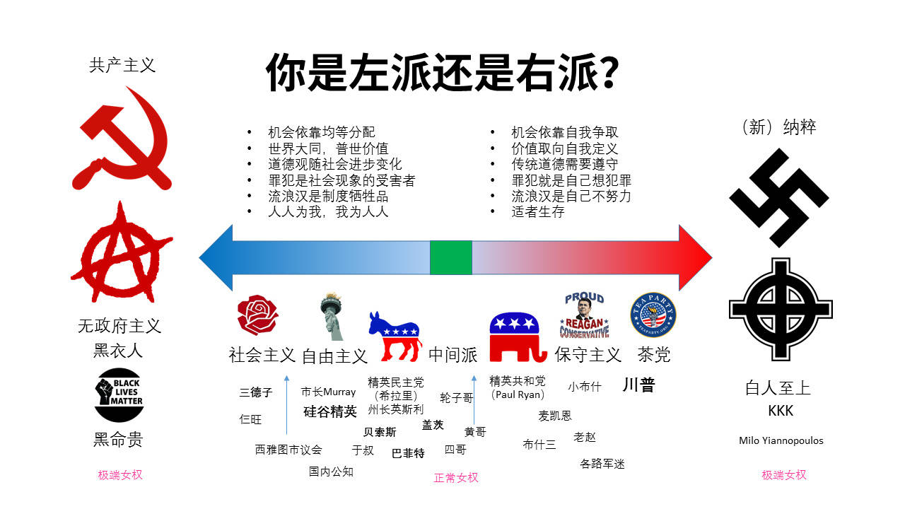
@北京大土豆
老有人在微博评论里说北京的中产应该去美国生活如何如何。作为一个码农，我认识很多在美国湾区工作的朋友，国内的中产朋友就更多了。我拿在北京家庭税后年收入60-80w的中产家庭，跟湾区税前30w美刀一年的家庭做一个简单的比较。这两者，都是当地中产的入（脱）门（贫）级（线）。
1，工作机会。能在国内不错的行业和岗位上工作的人，而且受过比较不错的教育的，都有跟国外同事共事的能力，可能由于环境的关系，外语方面有所退化，但是如果强行在国外待一段时间，英语水平会大幅度提升到工作无障碍的水平（平时的生活交流不能保证）。国内，优势是天花板很高，你有可能爬到一个意想不到的高度，虽然只有很少的人能做到，但确实绝对数量不少，这就是所谓的梦想。同时，屌丝遍地，各种low。在国外就不一样了，只要你受过良好教育，你可以很容易的获得一份体面的稳定的中产工作，但是也就是这么一份工作而已，你的天花板触手可及，说一眼望到死，也不是夸张。所以，如果你只是享受生活，对工作的高度没啥追求，喜欢清静，自己做饭，自己DIY，国外是不错的选择。否则，还是国内好。这就是为什么这么多人宁愿忍受雾霾也呆在北京的原因，谁都不是傻逼，你都能看出来，别人看不出来吗？
2，孩子的教育。湾区的学区房，不比北京便宜，你别以为在美国随便上上学就糊弄了，大错特错，美国的华人小孩，也是非常努力的，而且还要专门学习汉语，在美国学汉语可比在北京学英语要痛苦。芭蕾，钢琴啥的，也都要学，而且学费比北京贵的多的多。我个人并不认为美国的基础教育多好（这是见仁见智的事情），美国牛逼的是大学的教育。所以，我的观点是，基础教育阶段国内不差，国内的差距在于大学，现在越来越多北京的孩子高中毕业去美国读大学，这个趋势愈演愈烈，等我们的孩子长大了之后，可能去美国读大学已经变得很简单了。目前来看，还是美国有优势。这是肯定的。
3，医疗。美国和中国都不是全民医保的国家。美国要买保险，我们要买医保。但就我个人的体验来说，美国的医疗制度更适合于有钱人，中国的医疗制度更适合于普通人。举个例子，你可以去协和看病，价格低廉，但是去美国最好的医院看病，就没那么容易了。而且中国的看病速度之快，是世界第一的，有个头疼脑热，当天就能看上，在美国可就难了。美国是有全世界最好的医生和医疗设备，但，那是为有钱人服务的。普通人看病，我觉得国内更好，尤其是北京。
4，生活。这个都被人说烂了，北京的自然环境一比吊糟，但是这里有你的朋友，你的亲人，你的过去，在美国呢，你作为第一代移民注定是孤独的。所以就看你更看重什么了，喜欢自己做饭，喜欢游山玩水的更适合在美国。各种吃货，喜欢经常跟亲戚朋友聚会的，还是国内好。
总之，简单拿北京跟湾区对比，湾区（美国）的优势已经大不如前了，以后这种趋势还会继续，北京的中产早就看透了这些，多数人为了更好的发展，更快速的财富积累，宁愿忍受这里的雾霾，这就是用脚投票，这就是现实。所以，别没事儿老劝人家去美国，人家没准比你看的透。
@tombkeeper
善良好心人真的没好报吗？短命吗？
作者：tombkeeper 链接：https://www.zhihu.com/question/48471632/answer/141083816 来源：知乎 著作权归作者所有，转载请联系作者获得授权。
上个世纪八十年代，郑渊洁每天收到大量小读者来信，以致于北京市邮局为他设立了专门的邮箱。最多的时候，每天的小读者来信数以千计。郑渊洁聘了四位助理帮他拆信和归纳。这些小读者的来信郑渊洁视为珍宝，一封都舍不得丢弃。当家里的读者来信越来越多时，家人说放不下了怎么办？郑渊洁说，这些信绝对不能处理掉，一是小读者信任我，才给我写真情实感的信，我必须善待；二是给我写信的小读者会有未来的大科学家、大作家、国家领导人，我珍藏着这些信，将来可以拍卖呀。
于是郑渊洁决定买房子让小读者给他写的信们住。当时北京的房价是每平米1400元。郑渊洁买了10套房子，让小读者给他写的信们住进去。现在这10套房子的价格翻了令人难以置信的倍数。郑渊洁经常说这件事情说明了一个道理，作为作家，要善待读者。以此类推，作为企业家，要善待消费者。郑渊洁认为，顶级理财就是以诚相待，己所不欲勿施于人。
@tombkeeper
前阵子听某公司技术负责人讲他们的工程师文化，我总结了一下： 1、不养闲人，选择能“在一起”的人。 2、进人慢，出人快，该淘汰就淘汰。 3、追求技术巅峰，鼓励内部分享。 4、技术上任何人可以挑战任何人，你行你就上。 5、不做技术/语言之争，只看效果。 6、讨论阶段民主，执行阶段专制。
@tombkeeper
我发现只要提到努力进取这样的话题，都有人义正严辞地表达类似“想让我努力进取除非给我很多钱”这样的意思。本科毕业二十二，研究生毕业二十五，随便一晃就三十了。年轻时候对自己不负责，和那些努力的同龄人之间差距越来越大，机会也会越来越少。马太效应是很可怕的。
@tombkeeper
从事任何技术研究，不知道该干什么的时候，就问自己四个问题：
- 这个方向上最新进展是什么？ 都知道吗？
- 这个方向上最著名的专家有哪些？他们的研究都看过吗？
- 这个方向上最著名的技术社区有哪些？精华帖都看过一遍吗？
- 这个方向上最重要的文章、工具有哪些？文章都看过吗？工具都分析过吗？
陈近南：小宝，你是个聪明人，我可以用聪明的方法跟人说话。外面的人就不行！
韦小宝：不解！
陈近南：读过书明事理的人，大多数已经在清廷里面当官了。所以我们要对抗清廷，就要用一些蠢一点的人。对付那些蠢人，就绝对不可以跟他们说真话，必须要用宗教形式来催眠他们，使他们觉得所做的事都是对的，所以“反清复明”只不过是个口号，跟“阿弥陀佛”其实是一样的。清朝一直欺压我们汉人，抢走我们的银两跟女人，所以我们要反清。
韦小宝：要反清抢回我们的钱跟女人，是不是，复不复明根本就是脱了裤子放屁，关人鸟事呀！行了，大家聪明人，了解！继续！
陈近南：总之，如果成功的话，就有无数的银两跟女人，你愿不愿意去呀？
韦小宝：愿意！只不过你刚才那句“九死一生”太吓人了！
一直挂在心上呢–当年去望京西门子面试，一进门看到这句“知其道，用其妙，THIS IS HOW”，内心顿时发生了强烈的共鸣，觉得这就是对“技术”两个字最棒的阐述，搞技术就是要追求这个境界。几年后，慢慢忘记了这句话，但当时的感觉仍在，所以一直特别想回忆起来。 –tombkeeper
我也讲个有意思的故事，考考你们的IQ EQ:
很久以前， 一位国王非常信任自己手下的一位充满智慧的大臣。
有一天，国王在擦拭宝剑时，不小心将自己左手的小指头割断了，智慧大臣闻讯赶到皇宫。见到国王正在包扎鲜血淋淋的左手，智慧大臣说：“很好， 这是件好事。”国王的伤口正疼得厉害，闻言顿时大怒，下令将他关进大牢。智慧大臣仍然说：“很好，这是件好事。”
几个月后，国王到森林里狩猎，国王着迷于追逐一只羚羊，无意间竟然穿越了国界，进入了食人族的地盘。食人族将国王及随从的大臣全都抓了起来，见到国王服饰 华丽，巫师便决定用国王来献祭。正要举行祭礼的时候，巫师突然发现国王左手少了一根小指头。根据食人族的规矩，肢体不全的人是不能用来献给祖先的。当下酋 长大怒，将国王逐了出去；而那些跟随的大臣一个也没有活着回来。
九死一生的国王回到宫中，想起了智慧大臣的话，连忙下令将他从牢里释放出来。国王深觉在他割断小指头时，智慧大臣所说的话颇有道理，并为了这几个月的冤屈向他道歉。智慧大臣还是说：“很好，这是件好事。”
国王说：“你说我少了根小指头是件好事，我相信。但是我关了你这么久，让你受了这么多苦，难道对你也是件好事？”智慧大臣笑着点点头：“当然是件好事！”
+ 如果我没有被关起来的话，那么我就会和你一起去打猎，那么被吃掉的人一定会是我。+++
我们曾如此渴望命运的波澜， 就最后才发现，人生最曼妙的风景，竟是内心的从容。
Management is about persuading people to do things they don't want to do,
While leadership is about inspiring people to do things they never thought they could.
– Steve Jobs.
职场定理第一条：不管你多棒，总有人能替代你。 再挽留你的原因仅仅是，你是其中最廉价的。 – Twitter. lvkaiwen
最近看到不少说法，说各种机会是风口，有说视频直播的，有说VR/AR的，有说人工智能的。从雷军说的风口上的猪都能飞起来这句话推断，等风口的多半觉得自己是猪。
曾子说：““用师者王，用友者霸，用徒者亡。”马英九只敢用徒，而不敢用师友。不但不敢用师友，而且把师友逼成敌人，这样的领导者焉能不败？
犯错是积极主动者的特权。消极的平庸者, 永远把时间花在证明自己没有犯错上。
比失败更失败的是，一直悬在那儿，不肯承认失败，而时间就这么一点一滴地过去了。
在餐馆吃自助餐，忽有个奇怪的联想，觉得很多人吃自助餐的过程仿佛人生之缩影：开始时饥肠辘辘，大鱼大肉，仿佛青年之血气方刚；渐渐不饿了，开始精挑细品，仿佛中年之沉稳老练；最后饱了，开始打嗝剔牙，仿佛老年之迟暮。正联想着，猛然惊觉邻桌的人不见了，两位服务生正在把他们留下的东西清理掉……
纪伯伦在《先知的灵光–孩子》中说得好：“他们是藉你们而来，却不是从你们而来，他们虽和你们同在，却不从属你们。你们可以给他们爱，却不可以给他们思想；你们可以荫庇他们的身体，却不能荫庇他们的灵魂。”
本來我也看不懂簡體字，覺得那是另一種語言。長大後，接觸多，就突然看懂。就像英文一樣。其實，學習任何東西，只要有適當的理由，稍微快樂點的過程，就會自然的開竅。
很少有人知道，名言都是有后半句的：
- 子曰：“父母在，不远游，游必有方。” 不是说父母在不能远行，而是要告诉父母你要去哪里，去干什么。
- 季文子三思而后行。子闻之，曰：“再，斯可也。” 不必想三遍很多遍，想两遍就做。
- 老来多健忘，唯不忘相思。
- 闭门造车，出门合辙。只要按照规矩认真做，闭门造车出门就能跑。
If everything seems under control, you're just not going fast enough. – 关于赛车和创业
@tombkeeper
老丈人问我，计算机相关专业的毕业生，大概有多少能干我们这行。我说不管什么专业，一本、二本加一起，估计一百个里有一个适合干这行。老丈人说和他估计的差不多，他在学校教逻辑学和数据库，也差不多一百个学生里能有一个逻辑比较清晰，实际动手能力比较强。
【职场中保持激情的方法】
保持一颗好奇的心，多去尝试新的东西，例如旁听一些课、读一些新领域的书等；
尝试找到自己喜欢的工作，如果你不知道自己喜欢什么，至少你知道自己不喜欢什么。
写下你最不喜欢的工作，再以此设计一个相反的工作，这个可能就是你所向往的。
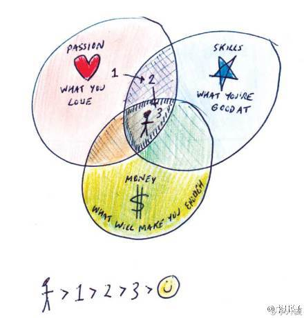
人生有两出悲剧：一是万念俱灰，另一是踌躇满志。–萧伯纳
一个人常常为不花钱就能得到的东西付出了高昂的代价！–爱因斯坦
【文学最大的用处就是没有用处】莫言在颁奖晚宴上讲了一句意味深长的话：文学和科学相比，的确没什么用处，但文学最大的用处，也许就是它没有用处。教育也如此，所谓的分数、学历、甚至知识都不是教育的本质，教育的本质是：一棵树摇动另一棵树，一朵云推动另一朵云，一个灵魂唤醒另一个灵魂。
旦有新欢，莫念旧恶。
我一直相信释迦牟尼说的一句话：“无论你遇见谁，他都是你生命该出现的人，绝非偶然，他一定会教会你一些什么”。所以我也相信：“无论我走到哪里，那都是我该去的地方，经历一些我该经历的事，遇见我该遇见的人”。
有个孩子成绩不好， 被家长骂笨鸟，孩子不服气地说，世上笨鸟有三种，一种是先飞的，一种是嫌累不飞的，家长问：那第三种呢？孩子说：这种最讨厌，自己飞不起来，就在窝里下个蛋，要下一代使劲飞。
【鲁迅日记】
- 婚姻中最折磨人的，并非冲突，而是厌倦。
- 工作时不为钱分心，钱反而会来得更快。
- 肯以本色示人者，必有禅心和定力，所以，伪名儒不如真名妓。
- 面具戴太久，就会长到脸上，再想揭下来，除非伤筋动骨扒皮。
- 知识不是力量，智慧才是。
我公司一名优秀程序员，年薪数百万，两辆专车，一宝马730、一奥迪Q7，4套房，其中两套总价值1500万。他主要贡献就是写程序。他加班一小时，价值当那些应届生几十人工作一天。但我不会去劝他加班。他每天午睡，下班吃完饭就回家，我都懒得理。而对于公司那些小青年男生，我很清楚，若不抓紧，前途堪忧。
I understand double 0s have a very short life expectancy… so your mistake will be short-lived. - James Bond
曾有单位出事，我去帮忙，完了对方领导请我给几个骨干讲讲。我注意到有个人看着不善，面削如刀、下嘴唇顶着上嘴唇高频震颤，所以言辞十分谨慎，决不说应该怎样，只说可以怎样。而不善同志仍进入了激发态：“我做不到！我没办法！我知道……我就是……”那是我第一次意识到：安全，一半技术，一半政治。
看到一句话：“要达到可以结婚的状态是：即便对好看的异性偶尔有心动，对未来的生活依然没把握，对感情和万事还不能驾轻就熟，但是觉得和这个人一定能排除万难安心过日子。这时就可以领证了。”
没病+没做检查 = 你会看病吗？
有病+没做检查 = 不做检查就说有病，你才有病！
没病+做了检查 = 你们就是会骗钱！
有病+检查+确诊 = 你一定得治好我的病，否则就是你医生不尽责！
有病+检查+确诊+治愈 = 花了一大笔钱尽做那么多无关的检查，你们坑人！
有病+检查+确诊+未治愈 = 医德败坏，庸医谋财害命！
大家都喜欢神化一个事物，据说GFS最开始单master实现无自动failover特性，挂了需要一个小时拉起来再用，你们感受下。挫不可怕，要的是有颗持续改进的心
一张图就能明白中国的教育体制
1988年凯文·史派西接受采访时说道：对于生活，我一直只字不提，不是为了故作神秘。而是你了解一个演员本人越少，越有利于让你相信他就是荧幕上的那个角色。观众走进电影院，看一完场我的电影，深信我就是剧情里的那个人。
变速跑是提升耐力和体能的一项技术。在户外进行变速跑训练时，开始正常配速跑的几分钟后，全力冲刺一个短距离（比如从一棵树跑到下一棵）；然后速度放缓至正常配速，给心脏平复时间；几分钟以后再重复上述环节。在训练中时刻关注自身身体状况，切忌冲过头，对身体造成伤害。
人民大多数比我们想象的要蒙昧得多，所以宣传的本质就是坚持简单和重复。–戈培尔 | Solitdot.
一定要小心挑选敌人，因为你会发现，你自己和敌人变得越来越像。– 泰戈尔
Maybe social skills come harder to programmers than to other people (I’m not convinced that’s true), but developing those skills will certainly pay off a lot more than trying yet another development methodology.
System design is that whatever solution you come up with during the interview is just a side effect. What we actually care about is the process. In other words, the systems design interview is all about communication.
其实, 工程师最缺的不是代码能力, 设计能力… 而是眼界…. 没见过猪跑的人, 再怎么设计也是画不出猪的……
1/9998 = 0.0001 0002 0004 0008 0016 0032 0064 0128 0256 0512 1024 2048 4096…
我们一边跑步，一边把社会面具、尘世困扰和强加给自己的社会角色丢弃在路边，因为这些东西在跑步的时间段里，暂时失去了它们的用处。跑步可以使人发现一些单纯的和最基本的快乐。跑步帮助饱经尘事烦扰的人们又重新找到了吃饭、喝水和睡觉这些最简单的喜悦，找到了对最普通的事物产生由衷欢欣的感觉。
“这些年我一直提醒自己一件事，千万不要自己感动自己。大多人看似的努力，不过是愚蠢导致的。什么熬夜看书到天亮，连续几天只睡几小时，多久没放假了，如果这些东西也值得夸耀，那么富士康流水线上任何一个人都比你努力多了。人难免天生有自怜的情绪，唯有时刻保持清醒，才能看清真正的价值在哪里。”
抄书、偷书、借书、还书，是我们青少年时代大约有过一点求知欲的青年共同的记忆。我说我不是一个读书人是想给书和知识保留最后一点诚意和敬意，我还是对书充满感激，对阅读充满感激，一本好书会让我安静下来，会让我有内心生活。–陈丹青
【难受是跑步的一部分】乳酸堆积、缺氧等难受的体验是跑步的一部分，正如痛苦和辛酸是生活的一部分。没有体力付出、永远不累的跑步不是跑步。散步、漫步甚至快走，比跑步轻松多了，但这不是跑步，更不用说能体会跑步的乐趣了。
软件开发中，那些所谓糙快猛的 Quick & Dirty 的方案的意思就是，当你用了一个Dirty的方案取得一点效果后，这个Dirty的事就会被Quick地忘记了。
精装房拎包入住不满意，拿大锤乱砸一气改户型，舒坦。
当我走出囚室，迈过通往自由的监狱大门时，我已经清楚，自己若不能把悲痛与怨恨留在身后，那么我其实仍在狱中。
懂算法、懂底层、精通N门语言、精通JVM、精通MySQL源代码就NB么？没有新的创造全是狗屁。精通别人已经创造的技术算什么本事，我从来就不认为这类人有什么值得崇拜的地方，给我一定时间和基本的学习环境我也做得到。国内大多数都只是现有技术的使用者，有什么值得互相炫耀的，有本事整出个大师我看看。
2013年12月25日6:30空气质量指数（AQI）播报。。PM2.5严重污染的城市前二十名：石家庄：880 邢台：880 西安：874 保定：860 郑州：748 临沂：723 枣庄：712 衡水：715 济宁：705 邯郸：686 太原：630 忻州：550 聊城：523 廊坊：521 宿迁：524 晋城：500 济南：476 德州：444 合肥：434 宝鸡：425
创业者有两种思路，一种是找最牛b的人做最牛b的事，另一种是有什么人干什么事，必须承认成大事抢镜头的的大部分都是第一类；但是实话说，第二种似乎存活率更高一些。无关对与错，其实就是风险与回报。
“最好的电影不是你说了一个多好的故事，而是你在观众心里激起了些什么。你不要想把你的感受告诉大家，没有人在看你，他们是在看自己。”–李安
数量金融的根基永远是供给需求、金钱时间价值这些基本的经济学理论以及现金流的相关概率这些基本的统计学思想。如果拘泥于术而非艺，那路就会越走越窄。
有些事情，要等到你渐渐清醒了，才明白它是个错误；有些东西，要等到你真正放下了，才知道它的沉重。–时间会告诉你一切真相。
生活中大半的麻烦是由于你说yes说的太快，说no说的太慢。
世上有两种人：一种跑过马拉松；一种没有。他们属于不同世界。两个世界间有一道门，推开了就能通行。只是人们常常视而不见，或不想推开，因为那是道需要花力气去推的门。
【总裁语录】“我想再次表明我的态度：一线员工犯的很多错误，主要责任都在管理者身上，如果要说一个比例的话，起码是三七开，70%的责任得归到管理人员身上，一线员工的责任只有30%。无论是工作指引不清楚，还是操作流程有问题，甚或后台配套支持不到位，管理者或一些专业人员难辞其咎”–顺丰·王卫
真正成功的人，无论在哪个领域，无一不是能发现自己的天赋，并将天赋全然绽放的人。但遗憾的是，我们被“木桶理论”局限了，绝大部份的人都将绝大部份宝贵的时间，用于去弥补自己的短板，木桶理论适合用于组织，不适用于个人成长。去发挥你的天赋吧，别理会那块短板！
【KPI是万恶之源】某公司为鼓励员工锻炼身体，统一配发计步器，每天将行走步数上传网上，并进行每周和每月的排名。有几个人数据遥遥领先，经核查，是把计步器绑在宠物的身上。
有一天你会明白，善良比聪明更难。聪明是一种天赋，而善良是一种选择。
人生就是一列开往坟墓的列车，路途上会有很多站，很难有人可以至始至终陪着走完，当陪你的人要下车时，即使不舍，也该心存感激，然后挥手道别。–《千与千寻》
跑步不是什么秘密，也不会创造奇迹，但跑步可以帮助你在某一段时间内专注于自己的内在，开始反省并学习如何料理自己的人生。正是在跑步中，开始领悟到，生命不是百米冲刺，而是一场长跑。漫长，不断犯错，没有固定答案，不一定以超出别人为评判标准，而在于你可以坚持到最后。-米什卡·舒巴利《长跑》
对跑过步的人来说，跑步，尤其是长跑，是有其持续的魅力的：节奏，跑姿，呼吸的方式，都很让人值得看。这就像，怎么说呢，一个爱下厨的阿姨，会愿意盯着特级厨师从准备食材到最后出锅装盘，而其老公也许完全莫名其妙。所以，只要自己试着跑跑步，长跑的观赏性就会陡然提升许多。
甲乙挑水卖钱，一天可卖20桶，甲说“老了一天还可挑20桶吗，不如挖水管”，乙说“现在挖水管一天就赚不到20桶的钱我不干”。甲挖了水管，打开水管就可赚钱，乙身体渐衰，逐渐每天挑不足20桶水。后来，政府将甲的水管收回国有，甲又和乙一起挑水，并且延迟65岁退休。
不要在一帆风顺的时候，装成修行人；不要在遇到挫折的时候，变回普通人。-—索达吉堪布
【据说这是史上人类智慧最集中的照片】爱因斯坦、居里夫人、洛伦兹、普朗克、郎之万、威尔逊、尼尔斯·玻尔、玻恩、德布罗意、康普顿、狄拉克、布拉格、海森堡、泡利、薛定谔、埃伦费斯特…..（图为1927年第五届索尔维会议参加者的合影，原图为黑白，下图是上色后的效果）
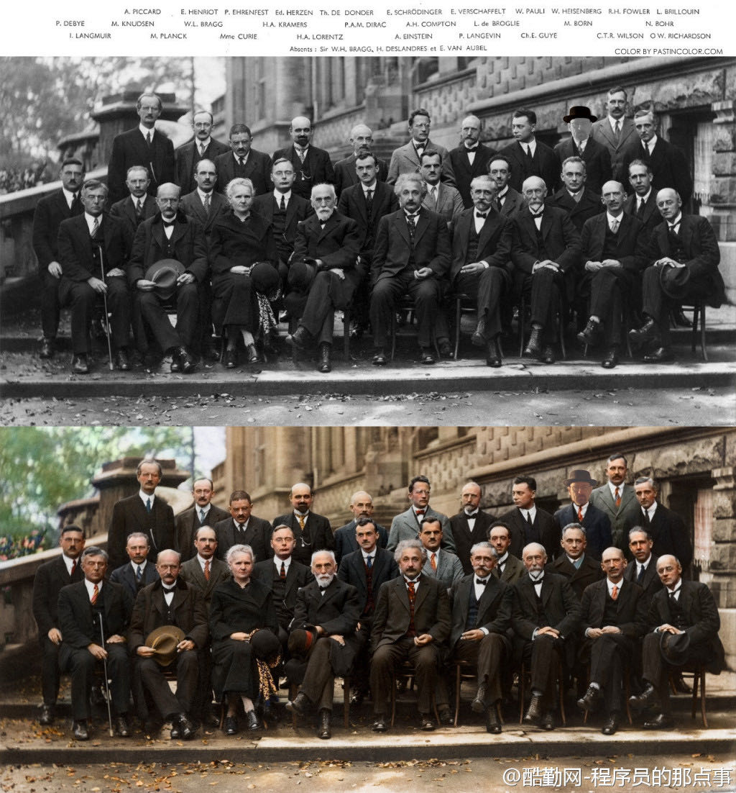
update@201509: 海森堡被改成了老白
「我们这一代最聪明的人竟然都在这里思考着怎样让人们去大量的点击广告。」By Jeff Hammerbacher.
让人们点击广告比让机器点击广告有趣得多：前者是艺术，后者是技术。By Hai Fang
独立的6个策略
- 上大学尽量选择不在家所在的省市，
- 坚持自己选择的学校和专业，不折不挠地与父母坚持，
- 大学时代多实习和社会实践，建立自己独立的社会关系，
- 尝试用自己勤工俭学的收入去远方旅行，
- 在一群人中积极发表意见，有拿主意的机会你大胆地帮助拍板，
- 尝试说，就这么做，有问题我负责。
现在年轻人进入职场，都希望先拿高薪，再认真工作，心里想的是我工资待遇不够，凭什么努力工作。但实际上最后真正在职场取胜的，是那些不计较个人得失辛勤工作，持续不懈努力的人。原因是老板和员工的思维差异，员工希望先得到报酬再工作，老板喜欢那些先拼命工作不计报酬的人，然后就会重用这样的人。
以上所言对刚毕业的应届生有一定的参考意义。但是，如果你真是韩信，那么先向汉王要个大将军的待遇也是必须的。
The Cult of Done Manifesto
http://www.brepettis.com/blog/2009/3/3/the-cult-of-done-manifesto.html
- There are three states of being. Not knowing, action and completion.
- Accept that everything is a draft. It helps to get it done.
- There is no editing stage.
- Pretending you know what you're doing is almost the same as knowing what you are doing, so just accept that you know what you're doing even if you don't and do it.
- Banish procrastination. If you wait more than a week to get an idea done, abandon it.
- The point of being done is not to finish but to get other things done.
- Once you're done you can throw it away.
- Laugh at perfection. It's boring and keeps you from being done.
- People without dirty hands are wrong. Doing something makes you right.
- Failure counts as done. So do mistakes.
- Destruction is a variant of done.
- If you have an idea and publish it on the internet, that counts as a ghost of done.
- Done is the engine of more.
【自己都不想改变，没人帮得了你】富人与孩子在门口见到一个要饭的，孩子想施舍点给他，富人不允，并告诉孩子：他越是要得着，就越不想去致富，而财富都是被贫穷逼出来的。孩子不信，当即给了穷人1000元，让其另寻发展。可半月后，穷人又来了，与以往无异。哀莫大于心死，穷莫大于心穷。
历史将会记录，在这个社会转型期，最大的悲剧不是坏人的嚣张，而是好人的过度沉默。–马丁·路德·金
From this experience,I learned about the importance of being endorsed by an influential person; simply doing good work isn’t enough to get noticed in a hyper-competitive field - From Ph.D Grind
第一天，小白兔去钓鱼，一无所获。第二天，它又去钓鱼，还是如此。第三天它刚到，一条大鱼从河里跳出来，大叫：你要是再敢用胡萝卜当鱼饵，我就扁死你。– 你给的都是你自己“想”给的，而不是对方想要的，活在自己世界里的付出，不值钱！
买了一箱苹果，发现有几个烂了一点，我舍不得扔，就把烂的地方切掉吃了。第二天又烂了几个，又切切吃了。。。一直到最后，发现我居然吃了整整一箱烂苹果。对于腐朽，只有果断舍弃，才能享受美好。
当我年轻时我梦想改变世界；当我成熟后，我发现我不能改变世界，我将目光缩短，决定只改变我的国家；当我进入暮年，我发现我不能改变国家，我的最后愿望仅仅是改变一下家庭，但这也不可能。当行将就木，我突然意识到：如果一开始我仅仅去改变自己，我可能改变家庭、国家甚至世界 《威斯敏斯特教堂碑文》
最后，你得要求这些外聘的资深高管融入自己的团队，而不仅仅是完成目标了事。对于如何评估他们的工作成绩，这里有一套清晰明了的指标：
- 业绩完成情况：你已经设下了业绩目标，数字就是一个很好的评判标准。
- 管理成绩：一个高管可能超水平地完成了预定目标，但这不代表他就打造出了一个强大而忠诚的团队。评估这方面的能力十分重要，完成指标并不是高管唯一的工作。
- 创新能力：完成指标的方法有很多种，包括是牺牲未来换取眼前利益。对于一个技术经理，他可能为了达成你在应用功能上定下的指标，倒腾出一套难以升级的架构。
- 协作能力：一个优秀的经理人必须精于与人沟通，知道如何从别人手上获取自己所需要的资源。
培养一个新人，刚开始要给一个明确的，可完成的，稍微有点挑战的任务：要让他有成就感，形成正反馈；不能让他做空泛的，方向模糊，或者挑战太大的事情，否则他会迷茫。另外，要花很多时间和他一起工作，否则他就会有种被放养的感觉，心里会发虚 … 等到他足够强了，就可以独挡一面了！
短的一个故事却看穿了许多人
傍晚，一只羊独自在山坡上玩，突然从树木中窜出一只狼来，要吃羊，羊跳起来，拼命用角抵抗，并大声向朋友们求救。 牛在树丛中向这个地方望了一眼，发现是狼，跑走了； 马低头一看，发现是狼，一溜烟跑了； 驴停下脚步，发现是狼，悄悄溜下山坡； 猪经过这里，发现是狼，冲下山坡； 兔子一听，更是一箭一般离去。 山下的狗听见羊的呼喊，急忙奔上坡来，从草丛中闪出，咬住了狼的脖子，狼疼得直叫唤，趁狗换气时，怆惶逃走了。 回到家，朋友都来了， 牛说：你怎么不告诉我？我的角可以剜出狼的肠子。 马说：你怎么不告诉我？我的蹄子能踢碎狼的脑袋。 驴说：你怎么不告诉我？我一声吼叫，吓破狼的胆。 猪说：你怎么不告诉我？我用嘴一拱，就让它摔下山去。 兔子说：你怎么不告诉我？我跑得快，可以传信呀。 在这闹嚷嚷的一群中，唯独没有狗。
领悟：真正的友谊，不是花言巧语，而是关键时候拉你的那只手。那些整日围在你身边，让你有些许小欢喜的朋友，不一定是真正的朋友。而那些看似远离，实际上时刻关注着你的人，在你快乐的时候，不去奉承你；你在你需要的时候，默默为你做事的人，才是真正的朋友
眼见他起高楼，眼见他宴宾客，眼见他楼坍塌
If you can't explain it simply, you don't understand it well enough. - Albert Einstein
【目标有多重要】磨坊有一匹马和一头驴。玄奘要去西天取经时，马应征。17年后马凯旋，看望驴，说起取经故事，驴很羡慕：这么远的路，我想都不敢想。马：你走的一点不比我少，我往西走，你每天拉磨走。不同的是，我跟着一个宏大的目标前进，你却被蒙住了眼睛，一直围着磨盘转圈。
提醒自己，做正确的决定，而不是最容易做的决定。
【香水哲学】百货公司的香水，95%都是水，只有5%不同，那是各家秘方。人也是这样，95%的东西基本相似，差别就是其中很关键性的5%，包括人的养成特色、人的快乐痛苦欲望。香精要熬个五年、十年才加到香水里面去的；人也是一样，要经过成长锻炼，才有自己的味道，这种味道是独一无二的。
有人问马云：老板和职业经理人区别？马云答：有一个人上山打野猪，一枪打出去，野猪没死，它冲了过来，那人把枪一扔，往山上跑的，就是职业经理人。那人一枪没把野猪打死，他把枪一扔，从腰上拔出柴刀和野猪拚命的，他准是老板。老板逃无可逃，只能血拼。
育己即育儿！总被问到是否该送孩子上早教班，视个人情况而定。就我的理解，作为普通家庭，与其花几万元给孩子报个班，不如用这钱多买点书读，自己学个班，多带孩子出去旅旅游。父母自己成长了，孩子自然会成长。反之，再好的班也未必有用，何况遇上烂班。切记，对孩子影响最大的那个人，始终是父母。
布什说：“我们准备干掉4百万伊拉克人和一个修单车的。”CNN记者：“一个修单车的！为什么要杀死一个修单车的？” 布什转身拍拍鲍威尔的肩膀：“看吧，我都说没有人会关心那4百万伊拉克人。” –【这就是公众，他们只关心奇怪的个案。值得反思。】
你想的越多，遇到的麻烦就会越多；什么都不想，反倒一点麻烦没有。你怕的越多，欺负你的人就越多；什么都不怕了，反倒没人敢欺负你。这世界就这样，你人品好，别人就来占你的便宜。你横一点，反倒是都来讨好你。别一味地退让，当你受到委屈时，要勇敢地说No！
A君和B君的故事
https://github.com/lifesinger/lifesinger.github.com/issues/107
A君和B君同时进入一家大公司。A君勤勤恳恳，交给他的活都办得稳稳妥妥、风平浪静。B君叱诧风云，参与的项目往往会遇到各种问题，常常风起云涌、惊心动魄。
转眼三载有余。
A君和B君面临一次很重要的晋升。请问，谁更有机会？
大家都猜到了结果：B君顺利晋升了，很开心。A君没有，也不怎么在乎。
一晃又是近两载。
A君被一家创业公司看重，挖去做了资深开发。A君去了后，依旧保持着稳稳妥妥、风平浪静的风格，很受赏识，被提为CTO。
B君还在老公司，依旧风起云涌、惊心动魄地做着各种项目，依旧继续期待着下一次晋升。
故事讲完了，这是我看到过的一个真实故事。
初级程序员们应该“忘掉”他们觉得自己已经知道的东西,然后重新学习他们需要的东西。刚走出校园的程序员有两种类型:要么干劲十足,随时准备改变世界;要么胆小如鼠,不敢抓住机会或者尝试有风险的东西,生怕被炒鱿鱼。
第一种是我非常担心的一种。他们自认为知道要做什么,且在google和互联网上搜索他们需要的资料,他们会为了挂画把墙锯开,或者会因为射钉枪和你争吵,因为他们觉得那是对的:射钉枪钉钉子的效率更高。实际上他们错了,因为射钉枪没法控制钉钉子的力量(它会把钉子整个钉进墙里),并不适合挂画。
从某个角度来说,我们都是初级程序员。就算你有四十年各个平台和嵌入式系统的C++开发经验,但当涉及关系数据库、Nosql或是Java和JVM,或是C#和CLR的时候,你依然是一个初级程序员。就像涉及原力,或者如何像父亲一样成为绝地武士并拯救宇宙的时候(包括两集之后才发现那个漂亮女孩是你妹妹),你也依然是个新手。
5年前,我与大学同学共同创立了KAYAC公司。虽然我们共事多年,但难免有意见相左的时候。这个时候我们都遵循⼀一个原则: 不采用任何一方的意见,双方重新考虑方案,直到互相认可 。这种工作方式使我们都形成了一个好习惯: 与其去批判对方,不如想出更精彩的点子去获得大家的认可。
任何时候你有了一个压倒一切的想法，并作为一个更卓越的意识形态推动你的想法，你会走到错误一边。 现实是复杂的，不服从一剂良药解万愁的问题解决模式，现实的问题需要大量艰苦工作，需要在细节上做到准确无误。 Linus Torvalds.
【李嘉诚告诫年轻人】年轻人不要试图追求安全感，特别是年轻的时候，周遭环境从来都不会有绝对的安全感，如果你觉得安全了，很有可能开始暗藏危机。真正的安全感来自你对自己的信心，而真正的归属感在于你的内心深处，对自己命运的把控，因为你最大的对手永远都是自己。
在精神层面上，高级海归通常会被爱国的心理作出一些莫名其妙的事情，类似与吃了伟哥的效果。很致命。要注意。要清醒的认识到：你的煤老板们其实想的是天天移民，actually。你要和他们说爱国做事情，他们会觉得你很naive。。。在大宋，ooverall，只剩下两个动机：女人和银子了。所以，思想上也摆正。
我们每个人几乎都在说不快乐的事，事业成功的说工作压力大，工作清闲的说这行没前途，没成家的说遇不到适合的人，遇到的却说不合适。幸福像足球一样踢来踢去，烦恼像奖杯一样不可撒手。其实我们拥有的才是自己的幸福，争取的既是希望，失去的只是记忆，而快乐是源自内心…
温柔对待亲爱的人
对待家人，我们习惯成自然地不懂礼貌，不会温柔，不是大呼小叫，就是懒得搭理。因为太过熟悉了，而不知珍惜。“你快点行不行！？大男人这么会磨蹭，像个老婆子！”
便利商店内柜台前，妇人对抱着儿子选购饮料的丈夫吼叫。转过身却软了嗓：“先生，请帮我挑三个茶叶蛋，要入味一点的喔！”
类似的情景应该常看见。比如，丈夫在外活跃又健谈，被公司的女同事们封为幽默高手，回到家，却成了自闭症患者，不是盯着电视，就是看着报纸，对妻子的说话充耳不闻，或斥喝闭嘴。
观察发现，这样“里外不一”的情形在多数人身上、多数家庭里头都会发生，或是惯性，或属偶发，并且被“公然”接受。
就像你遇见在争吵的夫妻，丈夫或妻子转过脸望见你时，会露出招呼的笑脸，回过头又继续争吵，那么般地自然。对待家人，我们却习惯成自然地不懂礼貌，不会温柔，不是大呼小叫，就是懒得搭理。因为太过熟悉了，而不知珍惜，这实在是极为错误的心态。
对同事和气，可以增进工作场所的融洽；对朋友体贴，可以扩展自己的人际；对上司尊重，可以利益自己前程。
却不细想：对家人和气，可以增进家庭的融洽；对家人体贴，可以让关系更亲密；对家人尊重，可以使生活充满欢喜。
与家人的关系，是这世上最该珍惜的情感！许多人却忽略了。
Google给毕业生的忠告
- 住在公司附近，准备随时去公司；
- 了解产品的每一个细节，力求完美；
- 强化说服力，培养气场；
- 注重团队合作，勿过分强调自我；
- 与管理人员和技术进行有效沟通；
- 力求邮件内容简短明确；
- 像产品经理一样进行思考；
- 开会时，有耐心。
【市民被ATM吞钱：如实报告遇冷 谎称多吐钱立即处理】7日晚，丁某到南京中央路河路道附近一银行自助区存款，因操作失误一万元被吞，即联系银行，被告之要两个工作日才处理好。可他心中不安，故假称机器多吐三千，5分钟客服便赶到了。银行解释：两者情况不同，前者不影响资金安全。
香港一个学生说：沉睡的人，你总有办法去唤醒，但是，你永远没有办法唤醒一个装睡的人。
不要说自己有多好，因为没人信。不要说自己有多坏，因为人都信。
无论你说的话有多谨慎，总会有人歪曲你的意思。
原谅是容易的，再次信任就难了。
邀百人之欢，不如释一人之怨。求百事之荣，不如免一事之丑。
世界没有绝对公平，心中平，世界才会平。
我反对暴力，因为当暴力被用来做善事时，善事也仅仅是暂时的，而它产生的罪恶却是永久的。 – 甘地
【女孩加班攒钱买经适房 收入超标丢了购房资格】广州有户人家，收入低，符合购买经适房条件。女儿加班加点挣钱，等加班费发下来，嘿，人家说一家月收入超出经适房标准的252元，取消资格。你没钱才有资格购房，但你买不起；你凑足了钱，抱歉，你已经失去购房资格。
一个真正强大的人，不会把太多心思花在取悦和亲附别人上面。所谓的圈子、资源，都只是衍生品。最重要的是提高自己的内功。只有自己修炼好了，才会有别人来亲附。自己是梧桐，凤凰才会来栖；自己是大海，百川才会来归。
黑人司机载了一对白人母子，儿子问：“为什么司机伯伯的肤色和我们不同？”母亲答：“上帝为了让世界缤纷，创造了不同颜色的人。”到目的地黑人司机坚持不收钱，他说：“小时曾问过母亲同样问题，母亲说我们是黑人，注定低人一等，如果她换成你的回答，今天我定会有不同的成就……
二战时，一犹太家庭遭到迫害，大儿子和小儿子分别去寻求帮助。大儿子去找曾经帮助过自己的人，小儿子去找自己曾帮助过的人。结果却是大儿子获救，小儿子被出卖–爱你的人会一直愿意为你付出，你爱的人却不一定愿意为你付出。在现实中，真正待你忠诚的都是曾经给过你恩惠的人，爱你的人。
狼每天要吃一只羊，又不想羊群反抗。它把羊群细分为胖羊和瘦羊，想吃瘦羊时，它就在胖羊群里喊：你们说，我是不是应该吃掉一只瘦羊？他立刻会得到众胖羊的支持。想吃胖羊时，就会站在瘦羊堆中如法炮制。最后，只剩下最后一只羊了，当然反对被吃，但它的态度已不重要。
上帝问：“你有什么愿望？”某人说，“请给我9条命！”愿望实现了。某天，他想试着死一次，反正有9条命。卧轨。结果一辆火车开过，他死了！到了天堂，他质问上帝：“不是说我有九条命吗？怎么还会死？”上帝答：“因为那列火车有10节车厢。”
从前，一群青蛙组织攀爬比赛。最后，其他青蛙都退出了比赛，只剩下一只，费了好大的劲，终于成为唯一到达塔顶的胜利者。有只青蛙跳去问成功的法宝，却惊奇地发现，那只胜利者是个聋子，关于不可能爬上去的议论他一句也没听到。永远不要听信那些习惯消极悲观看问题的人。
【对人一块一，对物九毛九】一位老成功的人说：“如果一件东西值一块钱，砍到九毛九，东西不会变，得到的还是那东西，要砍；如果一个人的服务值一块钱，砍到九毛九，虽成交了，得到的服务却可能变了，降低了，不能砍，要主动给他一快一，就能得到超值回报。”
荒诞的真实： 豹子办了个澡堂子，包给了狐狸，狐狸转包给了松鼠，松鼠雇了几只蚂蚁搓澡接客。有一天，狮子去洗澡睡着了，结果掉进洗浴盆里淹死了…….,虎大王 大为震怒，派去两只豺狼前去调查情况，骂了狐狸，打了松鼠，最后，抓了8只蚂蚁…….因为他们，居然没有上岗证！
不要对一个人太好，因为你终有一天会发现，对一个人好，时间久了，那个人会把这一切看作是理所应当。很多人不是不够好，而是对别人太好，却不知你越对别人好，在他眼里就越没价值。其实你可以蠢到不计代价不顾回报的，但现实总是让人寒心。–最卑贱不过是感情，最凉不过是人心。
男生对女生说：我是最棒的，我保证让你幸福，跟我好吧。–这是推销。男生对女生说：我老爹有3处房子，跟我好，以后都是你的。–这是促销。男生根本不对女生表白，但女生被男生的气质和风度所迷倒。–这是营销。女生不认识男生，但她的所有朋友都对那个男生夸赞。–这是品牌。
当我走出囚室、迈过通往自由的监狱大门时，我已经清楚，自己若不能把悲痛与怨恨留在身后，那么我仍在狱中。 - 曼德拉
创业者规划产品时不能太理性用逻辑去推理设计功能，从行业从技术从公司从模式从概念角度你可以很逻辑很合理地推 理出的东西往往不成功，因为用户选择产品不会遵从你的逻辑，他也不了解那些行业商业背景，用户其实是非常感性，所以你只能从用户角度来设计产品才有机会。 我自己有时设计产品也会犯这错误，从逻辑上会觉得非常合理，但实际上用户却不买账，最后发现这其实是我的逻辑，不是用户的逻辑，用户选择产品根本不是按照 逻辑，喜欢从行业高度归纳概念总结模式马后炮分析成功产品为什么成功的同学容易犯这个错，真正成功的点都藏在某个很细微的地方而不是能看见的。 - 周鸿祎
60%的人目标模糊；10%的人有着清晰但比较短期的目标；其余3%的人有着清晰而长远的目标。25年后， 3%的人，几乎都成为社会各界的成功人士；10%的人，大都生活在社会的中上层；60%的人，都生活在社会的中下层；剩下27%的人，在抱怨他人，抱怨社会，也抱怨自己.
“走出去，使自己成为有用的人。” 德鲁克对《基业长青》的作者柯林斯说，柯林斯是个才华横溢的人，但德鲁克却告诫他：“要把才能应用于实践之中：因为才能本身毫无用处。许多有才华的人一生碌碌无为，通常是因为他们把才华本身看作是一种结果。
父亲对他的孩子说：攥紧你的拳头，告诉我是什么感觉？孩子攥紧拳头：有些累！父亲：试着再用些力！孩子：更累了！有些憋气！父亲：那你就放开它。孩子长出一口气：轻松多了！父亲：当你感到累的时候，你攥得越紧就越累。—很简单的道理，放手才轻松。
【爱你的敌人】没有麦当劳，肯德基的汉堡不会这么好吃。没有可口可乐，百事也不会这么壮大。没有狮子，羚羊永远也跑不快–真正激励一个人不断成功的，不是鲜花和掌声，不是亲朋的赞美，而是那些可以置人绝路的打击和挫折，以及那些一直想把你打败的对手、虎视眈眈的同行。
当一个男人失败的时候! 欧美女人会说：其实你干的不错。 日本女人会说：某某君，请加油。 中国女人会说：没用的东西，这都做不好。 女人的话是这么说，可是事实却是，欧美女人带着孩子去找别的男人了。 日本女人会趁着年轻去拍AV了。 只有中国女人，会陪着她们口中的SB奋斗下去！
一个人去买牛奶。小贩说：1瓶3块，3瓶10块。他很无语，于是掏出3块钱买了1瓶，如是三次。然后他对小贩说：哈哈，看到没，我花9块就买了3瓶。小贩却说：哈哈，自从我这么干，每次都能一下卖掉3瓶。这也许不光是一种销售的手法，更是一种让你工作生活充满创意的思考方式
一位单身女子刚搬完家，晚上忽然停电。她刚点燃一支蜡烛，听见了敲门声。她开门，是隔壁的小女孩，小女孩问：阿姨，你家里有蜡烛吗？单身女子心想：这才刚来就来借东西，以后会怎样。于是她冷冰冰的说：没有。小女孩笑着说：就知道你没有，妈妈怕你害怕，让我给你送来。点评：勿去盲目猜测他人的本意！
旅行最大的好处，不是能见到多少人，见过多美的风景，而是走着走着，在一个际遇下，突然重新认识了自己。
一个男人在公司干了25年，他每天用同样的方法做着同样的工作，每个月都领着同样的薪水。一天，愤愤不平的男人终于决定要求老板给他加薪及晋升。他对老板说：“毕竟，我已经有了25年的经验。”“亲爱的员工，”老板叹气说：“你没有25年的经验，你是一个经验用了25年。”
【茅于轼：勤劳是中国经济奇迹的根基】不夸张地说，中国人最勤奋和节俭，最具有吃苦精神，最听话和守纪律。当然，最重要的是，中国人还最渴望获得财富–实际上，当今世界上几乎没有一个国家的人民像中国人这样，很多人满脑子想的都是如何“发财发财！”
现在找工作的人，要明白，找的是工作，是起点、是阅历、是好的领导和工作环境，而不是确切的人民币数字。靠现在的薪水，想“发大财”可能有点难度。如果你想升值，想要未来变得舒适安逸，就别让眼前的薪水影响你的判断。只要做得好，卖烤地瓜一年都能赚上百万。
【关键人】副总准备跳槽到竞争对手那，他掌握大量客户资源。老板得知后，马上带二十万给他老婆，强调这钱是给她个人的，不会告诉副总，并表示不希望副总跳槽。结果，副总一直干到现在–启示：找对人包括找对直接关键人和间接关键人，间接关键人是能影响直接关键人的人，更关键！
本福德定律(Benford’s Law)
Pick a random financial transaction from the ledger of a typical business and there is about a 30% chance that the first non-zero digit of the amount of money involved is a 1. This counter-intuitive fact is a result of Benford’s Law, discovered by astronomer Simon Newcomb in the late 1800′s and rediscovered by physicist Frank Benford in the early 1900′s. They found that real world data are not evenly distributed. Instead, given a random number related to some natural or social phenomenon satisfying certain conditions, the probability that the first non-zero digit of the number is D is log10(1 + 1/D).
从随机的金融交易涉及的金额来看，有30%的几率第一位非零数字是1。这个违反直觉的定律就是本福德定律(Benford’s Law).他们发现世界上存在的数字并不是均匀分布的，在满足一定条件下的自然或者是社会现象涉及到的数字，第一个非零数字为D的几率为log10(1 + 1/D).
Increasingly, financial auditors are using Benford’s Law to detect possible fraud. Given a record of the financial transactions of a company, if some leading digit appears with a frequency that significantly differs from that predicted by Benford’s Law, it is a signal that those transactions deserve a closer look.
使用上面本福德定律(Benford’s Law)我们就可以检测一些可能的欺诈。给定一个公司关于金融交易记录，如果交易记录的涉及金额第一位非零数字不满足本福德定律(Benford’s Law)的话，那么很可能说明记录中存在欺诈而值得进一步的调查。
Never to be a in-house programmer
毕业以后，Joel先在微软公司干了一段日子，然后回到纽约，进入维亚康母公司[Viacom]，为这家巨型的娱乐传播公司编写软件，成为IT部门里一个程序员[in-house programmer]。后来，Joel回忆起来，认为这是他一生中最痛苦的日子，并且劝告计算机系的学生尽可能不要去做”in-house programmer”。原因有三个:
- 首先，你永远没有办法正确地编写软件，你不得不用最方便的方法编写软件。因为软件支出非常高昂，所以公司会要求尽可能节省成本，你不可能试用新技术，只能使用现有的最成熟、最保守的技术。
- 其次，你没有办法将一个项目做到尽善尽美。一旦程序可以正常运行，你的工作也就结束了，可以接下去干公司的下一个项目了。你的作用是解决问题，而不是将软件写得尽可能好。如果你是在一个专业的技术性公司，比如Google或Facebook，情况就完全不一样，你的软件写得越好，公司就会越成功，所以公司会支持你在一个项目上不断做下去。
- 最后，传统公司IT部门里的程序员，只属于公司内部的维护人员，而不是直接从事核心业务的人员。因此，你永远办法进入管理层。但是，在技术性公司，程序员会变成CEO。
不幸的是，80%的程序员属于这一类，年复一年，很多人的生命就是这样被耗干的。[it’s frightening because this is what probably 80% of programming jobs are like, and if you’re not very, very careful when you graduate, you might find yourself working on in-house software, by accident, and let me tell you, it can drain the life out of you…]
世界上最难听的音乐
http://science.solidot.org/article.pl?sid=11/11/07/1010207
Scott Rickard尝试了音乐家从未尝试过的事情–谱写世界最难听的音乐。 Scott Rickard 在MIT获得数学、计算机科学和电机工程学位，在普林斯顿大学获得计算数学的硕士和博士学位。他在TEDxMIA大会上讨论了创造最丑音乐背后的数学和科学原理，他利用了法国数学家伽罗瓦（Évariste Galois）的数学理论创造无模式的声纳响声，将响声映射为钢琴上的音符，然后用无节奏的哥隆尺演奏。
世界上最轻松的音乐
http://science.solidot.org/article.pl?sid=11/10/19/0323218
知名音乐治疗师Lyz Cooper和曼切斯特乐队Marconi Union联合发布了号称有史以来最放松的轻音乐。 他们声称，八分钟长的乐曲“ Weightless ”镇静效果不是主观想象，而是基于科学实证。音乐被发现能让脑电波和心率与节奏同步，降低血压和压力荷尔蒙皮质醇的水平。科学家给40名妇女播放了各种轻音乐，显示Weightless放松的效率比恩雅(Enya)、爱黛儿（Adele）、莫扎特和酷玩乐队（Coldplay）的歌曲高出11%。音乐能诱导睡眠，司机已经被警告在驾驶时不要听该乐曲。
美国优秀学生的五大特点
美国波士顿大学青少年教育专家曾考察了伊里诺依州81名优秀学生的生活和学习，并采访了他们的家长，在最近发表的一份研究报告中，专家们总结出了这些学生的五大特点:
一、极其努力。优秀学生都毫无例外地把学校当作生活中心，其家长也往往十分勤奋，为自己孩子树立了好榜样。17岁的约翰逊·帕里斯即是其中的一个典型例子–其双亲都是外来移民，父亲通过艰苦奋斗终于逐步创立了自己的房地产公司，而母亲是一名普通秘书，尽管家务忙，却一向忠于职守，十几年来从未请过一天假。从父母那儿，小帕里斯学到了坚韧不拔、不屈不挠的精神。老师们都认为，他是学校最优秀的学生，他不仅担任了校数学、化学竞赛队队长，而且还是校运动队骨干成员。
二、乐于学习。亚特兰大的安得里克·艾奇在童年时代曾因病而长期昏迷不醒，医生认为其智力已严重受损，但其母切尔认定，只要使用恰当的办法使孩子乐于学习，其智力仍有可能得到健康发展。在教育孩子时她总是尽最大努力设计出新颖、有趣、多变的方法来激励孩子的想像力，并把学习贯彻至日常生活之中。后来，小艾奇通过“快乐的学习”，智力水平赶上了正常孩子，到了高中阶段，他竟成为全班学业最优秀的顶尖学生。堪萨斯州鲁滨逊中学里有许多聪明、努力的好学生，但即使在他们中间，12岁的泰勒·艾默生仍是引人注目的。教师们反映说，泰勒在课堂上提的问题总比其他人来得深，而且其丰富的想像力总把大家引向一般人想不到的地方。据了解，其父母都是律师，从他10个月大时就开始给他读有趣的故事，15个月大时就让他自己读书。他自称，他从来不像其他许多同龄人那样感到学习枯燥乏味，相反觉得其乐无穷。马萨诸塞州州立大学儿童教育专家帕克尔认为，家长们不妨像泰勒的家长那样，在自己孩子尚未学步前就早早地注重“寓教于乐”，通常在才能测试中，成绩出众者多是乐于学习的孩子。
三、不过分看重分数。心理学家发现:当孩子由于分数好而受称赞时，他们往往不再愿意主动去尝试新事物，心理承受能力也较差，但他们因尽到努力而受称赞时，却往往会更有进取心和自信心。事实上美国有许多学者批评目前的教育制度过于强调考试成绩，在这种情况下，孩子们对知识发自内心的追求会被对分数的追求所取代。教育专家提醒父母们：每天孩子放学回家后，不要老问做得“怎么样”，而应多问问做了“什么”。
四、对某些事物有较大兴趣和热情。波士顿中学的麦克特里从小就对汽车着迷，在车展上常常流连忘返，房间里也贴满了各种赛车的广告画。教师们一开始都有点担心他会不务正业，但在家长的正确引导下，对汽车的兴趣引发了他对相关科学知识的强烈兴趣。教育专家们分析说，其实兴趣称得上最好的启蒙老师，因而在孩子很小时就应有意识地鼓励他们广泛参加各种课外活动，因为这些活动有助于帮助他们发现自己的兴趣所在。事实上，美国不少大学在选择新生时，往往倾向于吸收那些有着自己独特爱好和追求的申请者。
五、父母热心参与其校内外活动。调查显示，绝大多数学业优秀学生的父母都与学校教师保持着密切联系，并热心参加家长会议、球赛、文娱演出等课余活动。值得一提的是，即使孩子在这方面表现并不突出，家长们也总是予以积极肯定，并为他们能勇于参与而感到高兴乃至自豪。
IBM某大型主机的最高温度大概是85度，超过这个温度会自动关机，以保住数据，HP对应的型号最高温度是84度，差了一度。这在正常的采购中，是完全忽略不计的一个参数。真实案例，某天某省移动机房停电，UPS先停了空调，机房温度开始上升，大家知道IBM和HP的结局么？
HP的主机首先到达温度的临界值，自动关机，耗电量下降，UPS开始给空调最小能量供电，因为只剩下了IBM的主机，发热量降低，机房温度逐步下降。结局，用户跑在IBM主机上的结算业务没有停，跑在HP主机上的业务停止运行超过24小时。这是我亲身经历的一个案例。
火车上教授与农夫相对而坐。教授说：我出一道题你若不知，给我五元；你出一题，我若不知，给你五百元，如何？农夫同意。教授：月亮距地球多远？农夫摇头递给教授五元钱。农夫问：上山三条腿下山四条腿，什么动物？教授苦思无解给五百元。农夫收钱欲睡觉。教授追问：啥动物？农夫递给教授五块遂去睡觉。
关于狮子管理狼群的方法
狮子管理狼群，这是一则笑话，一则寓言，但也是一则经典的团队管理案例。这个故事虽然很简短，但可以从中汲取很多价值的管理方法论，比如绩效工资、末位淘汰法、竞争上岗等，不愧是经营管理中的经典案例。
狮子让一只豹子管理10只狼，并给他们分发食物。豹子领到肉之后，把肉平均分成了11份，自己要了一份，其他给了10只狼。10只狼都感觉自己分的少，这合起伙来跟豹子唱对台戏。虽然一只狼打不过豹子，但10 只狼，豹子却没法应付了。豹子灰溜溜的找狮子辞职。狮子说，看我的。
【第一天 绩效工资】 狮子把肉分成了11份，大小不一，自己先挑了最大的一份，然后傲然对其他狼说：你们自己讨论这些肉怎么分。为了争夺到大点的肉，狼群沸腾了，恶狠狠的 互相攻击，全然不顾自己连平均的那点肉都没拿到。豹子钦佩的问狮子，这是什么办法?狮子微微一笑，听说过人类的绩效工资吗?……
【第二天 末位淘汰】 第二天狮子依然把肉分成11块，自己却挑走了2 块，然后傲然对其他狼说：你们自己讨论这些肉怎么分。10只狼看了看9 块肉，飞快的抢夺起来，一口肉，一口曾经的同伴，直到最后留下一只弱小的狼倒在地上奄奄一息。豹子钦佩的问 狮子，这是什么办法?狮子微微一笑，听说过末位淘汰法吗?……
【第三天 竞争上岗】 第三天狮子把肉分成2块，自己却挑走了1 块，然后傲然对其他狼说：你们自己讨论这些肉怎么分。群狼争夺起来，最后一只最强壮的狼打败所有狼，大摇大摆的开始享用它的战利品。狼吃饱以后才允许其它狼再来吃，这些狼都成了它的小弟，恭敬的服从它的管理，按照顺序来享用它的残羹。从此狮子只需管理一只狼，只需分配给它食物，其它的再不操心豹子钦佩的问狮子，这是什么办法? 狮子微微一笑，听说过竞争上岗吗?……
【最后一天 和谐社会】 最后一天狮子把肉全占了，然后让狼去吃草。因为之前的竞争，狼群已经无力再战了。最后豹子钦佩的问狮子，这是什么办法? 狮子微微一笑，听说过和谐社会吗?
如何让孩子学会接受批评
和许多成年人一样，孩子们往往也喜欢听表扬而反感批评。法国心理学家高顿教授通过一项专题研究证实，那些难以接受批评的孩子长大后，也大多会对批评持“避而远之”或干脆“拒之门外”的态度。由此看来，让孩子在幼儿时代就学会接受批评无论对一个人完整人格的塑造，还是对促成其事业的成功，都具有相当积极的意义。那么，年轻的爸爸妈妈们该如何让孩子学会接受批评呢？法国的一些儿童教育专家为此提出以下建议：
- 教育孩子不必对他人的批评大惊小怪。教育孩子，当然应该坚持表扬为主，但不妨在孩子呀呀学语或学步时，就有意识地让孩子既听到正面的肯定，也听到反面的批评。此时，须注意对幼儿的批评一定要语气温和，分析中肯，且以更多的表扬为前提，如：宝宝学说“喝水”很清楚，但学说“吃饭”还不清楚时，妈妈可以说：“你说的话不够清楚，再说一遍，好吗？”或“宝宝昨天学走路一点不怕累，怎么今天就怕累了？”有意识地早早“引进”批评可以帮他下意识体会到：批评和表扬同样常见！事实上，在幼儿时期就能适应批评的孩子，长大后往往也较能适应社会，其中也包括拥有正确对待来自他人的批评乃至非议的平和心态，以及较强的承受挫折能力。
- 让孩子学会认真倾听。不论批评有多尖锐、多不中听，你都应该要求孩子认真倾听。因为只有认真倾听，才会发现其中也许确实有几分道理，最后才能虚心予以接受。从而让孩子渐渐明白：对他人的批评认真倾听，不仅是一种文明的表现，而且也是完善自我的必要方法。
- 冷处理但不要默不作声。冷静处理并不意味着对批评默默无语。父母应教育孩子对批评的合理成分虚心接受，甚至列出改进的办法或措施。当然，对批评者的感谢更能体现出接受批评的诚意。要求孩子掌握的“冷处理”技巧包括：不要对批评者反唇相讥，不要“自卫还击”，不要夸张等等，相反，应在认真倾听的基础上冷静地分析出尽可能多的合理成分。
- 允许作出解释。当批评不符合事实，也应允许孩子作出解释，因为让孩子虚假地表示接受批评，但心里大感委屈实际上不仅于事无补，还可能引发种种弊端。与此同时也要让孩子明白：解释的目的并不是推卸本来应负的责任，还应要求孩子保持解释时心平气和、实事求是的态度。
- 对批评者一视同仁。不少孩子可以做到认真倾听并虚心接受来自老师或父母的批评，但对来自同龄人的批评却拒之门外。这时应教育孩子：只要批评有道理，即便这批评来自小伙伴，也应虚心接受。
实际上，只要孩子学会了“善待”批评，那么批评完全可以如同表扬一样，成为鼓励孩子前进的春风，而且还起着表扬难以起到的警示作用。
人的一生只有5%是精彩的，只有5%是痛苦的，另外的90%是平淡的；人们往往被5%的精彩诱惑着，忍受着5%的痛，在90的平淡中度过。
生命原本脆弱，我们只能坚强地活着。
年轻的最大魅力就是不断犯错误，而有时间去改正。乐观面对困难，好好培养一下自己的心理素质。
【到底谁成就了谁】克林顿和希拉里去加油站，一小工是希的初恋。克林顿跟老婆吹嘘说：你要不嫁给我，你老公可能还是一小工。希看了眼初恋，对克林顿说：我要嫁给他，当总统的可能是他，哪会轮到你–启示：创业者时刻要牢记，是你的追随者成就了自己,而不是自己是救世主成就了大家。
《犹太人为什么优秀》：犹太人孩子的教育是从三岁开始的。父母们可以为孩子选择交费的私塾，也可以选择免费的公立学校。在这里，犹太人的目的不是让孩子们理解文章的意思，而是让他们背诵。犹太人认为，如果不能培养出一个好的记忆力，今后就没有办法学习其它事物。
「价格大战」：话说重庆二个火锅店进行了价格大战。甲说：三十元一位仼吃。乙接：二十元一位仼吃；甲再战：15元一位仼吃，相当于每位补贴五元。乙说：10元一位不限时。甲立马招来100位棒棒，每人发10元，让他们从早吃到晚！乙瘫,甲恢复50元。
财经频道关于家电价格战的调调真外行：过去很多人说富士彩卷在国内倾销，即低于成本价销售，先打垮对手如乐凯；然后再提高价格，赚大钱。这是个无聊的笑话。如果我是乐凯，那我就干一件事，买富士。富士卖的越多，赔钱越多，乐凯能把富士逐出中国。别提京东发愁！恶性竞争，排挤竞争对手的说法是傻话。
爱的最高境界是什么？不是什么你死我活。是习惯，一个女人习惯了一个男人的鼾声，从不适应到习惯再到没有他的鼾声就睡不着觉，这就是爱；一个男人习惯了一个女人的任性、撒娇，甚至无理取闹，这就是爱；一个人会为了另一个人去改变、去迁就，这就是爱。对爱人，迁就多少，就爱了多少。
巴菲特说，他7岁对股票感兴趣，8岁阅读父亲股票的藏书，10岁时当地图书馆有关股票的书已读完，11岁买第一只股票，19岁找到正确投资方向，20岁拜格雷厄姆为师。25岁创立合伙企业时，已研究18年，实际投资经验15年，远超过1万小时。
其实文凭不过是一张火车票，清华的软卧，本科的硬卧，专科的硬座，民办的站票，成教的在厕所挤着。火车到站，都下车找工作，才发现老板并不太关心你是怎么来的，只关心你会干什么。
皮格马利翁效应：希腊神话中国王皮格马利翁是一名雕塑家。他用象牙雕塑了一位美丽的美女。他深深爱上了这个美女，他祈求女神让雕象活过来。他的真诚感动了女神，女神决定帮他。不久，雕象活过来了，并成为了皮格马利翁的妻子。后被教育心理学引用，意思是如果你相信他行，他就会真的行。
市场不好，现在质量好点的创业项目或创业者比去年少了至少七成，这种状态非常明显也已持续半年。在这种环境下，敢于出来创业的人虽然数量少了很多，但质量会更高，更成熟，想的更清楚也更有胆识。我相信N多年后我们回顾这段时间，会发现那时很多牛逼公司都是在这段时间里创建，突围和壮大的。
员工的离职原因林林总总，只有两点最真实：1、钱，没给到位；2、心，委屈了。这些归根到底就一条：干得不爽。员工临走还费尽心思找靠谱的理由，就是为给你留面子，不想说穿你的管理有多烂、他对你已失望透顶。仔细想想，真是人性本善。作为管理者，定要乐于反省。
女同志要想成功须付出更多。要想成功：一是要自信。二是要融洽上下级关系乐于助人要知道情商占成功的80%。三是从琐事做起不能浮躁做每件事尽可能尽善尽美。在国家机关学历不重要，只有在提拔时有用。四是一旦有机会就要有所表现。不能时刻计较得失。做人热情，大度。小事不计较。
如果你在过完枯燥痛苦的一生后郁郁而终。那是因为你一直听妈妈的话，爸爸的话，老师的话，牧师的话，或者电视里那些大家伙们说的话。他们告诉你什么才是对的。我只想说，你这样死去也活该。
当你决定要创业时，便意味着：1、没有了稳定的收入；2、没有了请假的权利；3、没有了得红包的机会。
然而却更意味着：1、收入不再受限制；2、时间运用更有效；3、手心向下不求人，想法若不同，结果便不同。
我一直愚蠢到认为自己能改变世界。想想这个地球上的真牛人是怎么过的。孔子在世也就影响了几十个学生留了几本书，释迦牟尼大抵如此。老子做了隐士，耶稣猛一点，治病除魔显神迹，却被人给钉死了。咱得承认没法改变世界，之前惹是生非都是证明自己有点小聪明小勇气。混口饭吃，睡好觉，读经念佛。够了。
又有一个朋友离婚了。朋友感慨说当下社会的各种组织都极易破碎，婚姻关系、雇佣关系、联盟关系等等。社会上有各种压力，要增长、要还贷、要安全、要攀比…..压力大了关系就破碎组织就变形。还说互联网对此也有贡献。到处都是免费，鼠标一划就到了另一家网站，当然不肯承受压力而是随时准备抬脚走人。
对待婚姻(Marriage)
即使最美好的婚姻，一生中也会有200次离婚的念头，50次掐死对方的冲动。即使最幸福的工作，也会有200次辞职的想法，50次摞担子的纠结……坚持，是最好的品质。
【巴菲特：伴侣是人生最大的投资】我年轻时曾与我们州最漂亮的女孩约会，但最后没有成功。我听说她后来离过三次婚，如果我们当时真在一起，我都无法想象未来会怎么样。所以你人生最重要的决定是跟什么人结婚？在选择伴侣上，如果你错了，将让你损失很多。而且，损失不仅仅是金钱上的。
爱是恒久忍耐，又有恩慈；爱是不嫉妒；爱是不自夸，不张狂；不作害羞的事，不求自己的益处，不轻易发怒，不计算人的恶，不喜欢不义，只喜欢真理；凡事包容，凡事相信，凡事盼望，凡事忍耐。爱是永不止息。–《圣经》
健身方式(Exercise)
有研究指出，每周跑步锻炼2次，每次慢跑20分钟的锻炼者，身体素质与锻炼前相比几乎不存在什么差别；每周跑步锻炼3次，每次持续30分钟的锻炼者，或每周跑步锻炼4次，每次持续20分钟者，身体素质与锻炼前相比有了明显的提高；而每周锻炼5次，每次持续运动30分钟以上的锻炼者，身体素质提高的幅度最大。
跳绳减肥法：持续跳绳10分钟，与慢跑30分钟或跳健身舞20分钟相差无几，是一项耗时少、耗能大的运动，有测试显示，跳5分钟，每分钟跳140次的运动效果就相当于慢跑半小时。只要你能保证每分钟120―140次的速度，一个小时就可燃烧掉600―1000卡的热量。
【匀速最瘦身】匀速慢跑对减肥来说是最佳的。但是很多人跑步容易受外界干扰，速度忽快忽慢，或者不能稳定在一个自己能够保持呼吸均匀的速度段内，这样会减弱运动减肥的效果，也会打消自己跑步的兴趣。合理的速度是那种能边跑边说话的速度，30分钟以上的匀速慢跑，将会高效地燃烧脂肪。